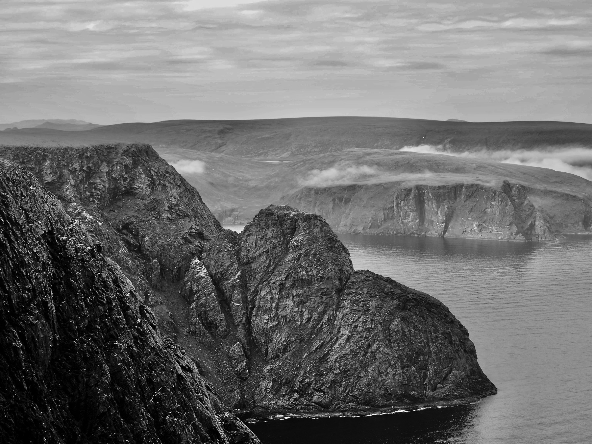

The Dancer
The train rolled by in an endless procession of steel; graffitied, rusting, rattling, sometimes dripping. Round cars, square cars, open cars, open doors on closed cars. A parade of transport; a mass of commerce, or material for future commerce. Chemical, mineral, raw and finished products.
A person, then three, soon a gaggle, waited more or less patiently for the parade to pass. Some waiters were visibly frustrated with waiting, fidgeting, tapping toes, scowling; other waiters turned to neighbouring waiters to test their willingness to converse, kavetch, pass the time discussing weather, endless trains and speculations about their contents, the things of little consequence people waiting share with people waiting. A few waiters simply stared at the passing train, heads jerking side to side as each car passed, lips moving in silent counts of the cars in the long train.
The ground vibrated; the rails flexed; the ballast bounced and settled. The sounds became rhythmic, almost lulling, the rhythm occasionally broken by the clack-clack of an errant truck.
The penultimate car approached, an older wooden boxcar, a rarity amongst the miscellaneous steel cars. Inside, framed in the open door, a woman, long and lean, spun like a ballerina, a top, a tornado, her arms flung fully outward, then spiralling in to hug her lean torso, then spiralling outward again to embrace the world. As the car neared and crossed the crosswalk a shaft of sunlight, a beam of brilliance, illuminated her as if the universe’s spotlight was highlighting this wonder. The frustrated stopped their toe-tapping; the sharers stopped sharing to watch, mouths open; the counters, distracted, lost count at 131 cars.
The dancer in turn watched the watchers. Her face opened into a big smile; she blew a kiss; she continued twirling. The car rolled past; the train rolled on, disappearing around a bend. The waiters and watchers stood, some leaning forward, some on tiptoes, and stared down the track at the receding miracle. The sunbeam faded.
A Grand & Glorious Arctic Norway Cycling Expedition
From Nordkapp to Tromsø: A journey on two wheels

Day 1 & 2 - Nordkapp
Day 3 - Honningsvåg to Olderfjord
Day 4 & 5 - Olderfjord to Hammerfest to Skaidi
Day 6 - Skaidi to Alta
Day 7 - Alta to Burfjord
Day 8 - Burfjord to Sorkjosen
Day 9 - Sorkjösen to Olderdalen
Day 10 - Olderdalen to Tromsø
Days 1 & 2 - Nordkapp
Grab a map of Europe. Look north. Way up. All the way up to the northernmost tip. It is in Norway, 650km north of the Arctic Circle, up where the continent gets gnarly with fjords and mountains. Way up at the top of the continent is Nordkapp, our “official” starting point.
To get to Nordkapp we sail on Nordnorge, one of the Norwegian coastal steamers of the Hurtigruten line, from Tromsø, a mere 350km north of the Arctic Circle, to Honningsvåg, another 300 km north. At Honningsvåg we disembark and pedal further north.
First, though, we must reassemble Peppy and Mr Grey, who were dissembled and packed for their journey across continents and oceans. We restore the bicycles to operating condition in the courtyard at Amelie Hotell in the centre of Tromsø. The very public restoration of our bicycles attracts a fair amount of attention, some bemused, some genuinely curious. Midway through the assembly process we wonder if perhaps we should have set out a hat to collect donated kroner. Norway is an expensive country for travellers, after all.
After completing our non-busking bicycle assembly performance we board Nordnorge with Peppy and Mr Grey and settle in for the overnight trip to Honningsvåg, on the island Mageroya. Nordnorge makes several stops in the night; we sleep through.
Shortly before noon we arrive in Honningsvåg. We disembark Nordnorge, load our bicycles, and cycle out of Honningsvåg. We pedal 25 kilometres north, up and down –in Norway the road is always up or down– across the barren Arctic landscape, fighting heavy crosswinds which bring dense fog from the Barents Sea.
We stop for the night in Skarsväg, billed as the most northerly fishing village in the world. Skarsvåg is a fair sized village for the region: population 60. For entertainment we wander the street (singular), sit and watch the sea, relax, watch the sea and sit, until time for bed. It is very peaceful and relaxing, a nice change from days of mechanized travel. Adjusting to falling asleep when the sun remains above the horizon, sleeping under the softly lighted skies, and waking to the same clear arctic light, requires a few days before it becomes natural.
Arctic light is magical, special. Clear, delicate, with a softness like a perpetual golden hour; it is the most restful light imaginable; the light is a large part of why the arctic feels peaceful and relaxing, despite barren and oft harsh conditions.
The next morning (an abstract concept in a place where the sun scribes a circle around the sky but does not settle below the horizon, and thus does not rise to signal the onset of a new day) brings fair weather and we continuing pedalling north, soon reaching Nordkapp at 71°N. Theoretically, nothing but water and ice stand between us and Santa’s workshop at the North Pole.
Click click.
We take the obligatory photos from the top of the cliff, admire the views from vantages to which most of the tourists do not venture, and use the facilities, before mounting the saddles for the return to Honningsvåg. It is important to use facilities when you can, unless you wish to let it all hang out for the world to see; there are no trees or bushes for the shy to hide their activities.
From Nordkapp down to Honningsvåg is a short ride; only 55km. The sun occasionally sneaks out and the winds behave themselves. We cruise across the hills, thrilling to the day and the ride and the view. We are finding our stride; finding the pure joy of pedalling across the open arctic land. No trees interrupt our view of the reindeer on the rolling hills, or of the distant sea when we top another hill. There is always another hill. This is Norway, after all.
We roll into Honningsvåg in the afternoon, increasing its population of 2400 by 2 for one night. After a bit of bumbling around we find our bed, find our dinner, find our dessert. Seafood for dinner, of course. Fresh catch; delicious. Afterwards, tarts and cookies from a Norwegian/French bakery. Yum. Well earned calories. Well earned rest follows.
Day 3 - Honningsvåg to Olderfjord
We savour our night of rest in Honninsvåg, knowing our next day will be rather more challenging: 105km, including Nordkapp Tunnel and its 215metres drop below Porsangerfjorden.
Riding in tunnels is interesting, to say the least. Cold in all seasons. Approaching vehicles sound like speeding freight trains, becoming louder as they draw closer, until the sounds are almost deafening. On the descent, with a 10% grade, it is possible to keep up with traffic, if you dare. Good brakes are essential to avoid going over 55km/hour, which is the fastest we are willing to go on a bicycle. Fortunately Peppy and Mr Grey have good brakes, which get a real workout during the trip (as do their low gears; every day we go from sea to height to sea, some days more than once.)
One of us often rides faster down hills than our partner wishes for us to ride. We earned it. We am going to take full advantage of our uphill sweat and toil when we come to the downhill stretches. Gravity is both a friend and an enemy when you are on a bicycle.
Fortunately, traffic is not a big concern. More German motorcyclists than anything. You find German tourists everywhere. German and Dutch. Curious, adventurous, alive-to-the-world people.
Most of our day’s ride, from Honningsvåg to Olderfjord, is along the peaceful Porsangerfjorden, with many “Norway flat” ups and downs along the way (there is rarely such a thing as flat land in Norway). We start by pedalling through two shorter tunnels: Honningsvågtunnelen and Sarnestunnelen, both of which are non-events, before we confront our nemesis, Nordkapptunneln. Nordkapptunneln is 7.5km long, with 10-11% grade down and back up to the mainland. Loads of fun on loaded bicycles.
Fortunately, we slay the giant tunnel without difficulty. Morning energy is a great thing. We celebrate our small victory; we had been apprehensive/fearful of that particular stretch of the trip. Easy-peasy, in the end. Relatively so, at any rate. Time and distance do that. They obscure the raw effort, the sanity-questioning moments. They change mountains to molehills, struggles to mere bumps along the way. Tunnels to mere portals.
After Nordkapptunneln the next two tunnels of the day are relatively straightforward, although not without adventure. Sortviktunnelen is short and sweet, easily completed and forgotten; the other, Skarvbergettunnelen is a bit more hairy, in addition to its dramatic location. Along the road to Skarvbergettunnelen the land drops immediately, and sharply, to the fjord on one side, with sheer walls on the other side; a slice taken from a mountain to push a road through. As we approach the tunnel we see a sharp high cliff plunging straight down to the fjord, with a little mousehole near the bottom into which the road disappears.
For reasons known only to them a pair of reindeer decide to take a stroll along the road leading to Skarvbergettunnelen ahead of us. Not well thought-out, we are afraid. They have no escape plan, no way out. We continue slowly pedalling forward and they continue slowly trotting ahead of us. Herding panicky reindeer is a lot like herding cats. They trot along with their peculiar gait, veering left when they look over their left shoulder, veering right when they look over their right shoulder, moving along rather unpredictably. Although they are rather docile, they do carry impressive looking antlers, with which we are not eager to tangle. We give them plenty of space. With a drop on the sea side and a wall on the land side, they have no place to go except forward or back. And going back is not an option; there be wheeled monsters behind. Forward they go. They veer back and forth like pinballs for a kilometre or more, not providing us an opportunity to pass so as to relieve their panic.
Eventually the cliff steps back several metres from the road, our friends bolt for the wider spot, and we quickly pedal by. Everyone is relieved by the happy ending. We pedal uphill to the entrance and swiftly conquer our last tunnel of the day, lights ablaze in the narrow and dimly lit passage.
Norwegians are part mole, we think. They build tunnels to avoid going over a hill, drill through mountains to shorten the route by a handful of kilometres, or connect to an island with 40 inhabitants. They seem to build tunnels and bridges for the sheer joy of it. Because they can. Some, such as Skarvbergettunnelen, are spectacular in setting; some are spectacular in execution, such as Nordkapptunneln. Some seem more like troll havens. Narrow, dank, dark, pot-holed passages chiseled through rock.
Were we to wake one morning as trolls, we would look closely at one or two tunnels we have seen in the past as potentially suitable for our lair. Fixer-uppers, but with a little effort they could be a tidy enough trollhjem, albeit rather on the chilly and rustic side. Bonus feature: awesome views. Alas, we are not a troldfolk, so we are fated to live upon, rather than within, the surface of the land.
The most magnificent tunnel we have seen, from a head-scratching ‘will you look at that’ point of view, connects Tromsø airport, on the west side of Tromsøya, with Tromsø city centre on the east side, penetrating the hills between. Tromsøya tunnel has several roundabouts within the mountain, connecting different entrances to the main tunnel, plus an underground parking area. It is a veritable underground road grid. Troll heaven, indeed.
All of this is fascinating, of course, but a distraction from our story.
We exit Skarvbergettunnelen, absorb the views, and continue to crank along. The Norway coast is like a hand of outstretched fingers. Trace a path along the side of your fingers, down one side, up the other. In and out. In where a fjord invades the land, out along the opposite shore of the fjord. Four km of cycling to go 1km further south. Repeat. Repeat again. The story of many days.
And soon enough, after 105 km and 8 hours (must stop for pictures, lunch, lunch two with reindeer accompaniment, snack, snack two, etc.), we roll into Olderfjord and a well-earned rest.
Three days down, eight to go…
Days 4 & 5 - Olderfjord to Hammerfest to Skaidi
Olderfjord marks a turning point on our journey. Continue traveling south, following E6, and you will bump into the top of Finland. Head west, as we do, and you cross to the jagged western side of Norway. Our route is uphill all morning; up, up, steadily up. The climb finally ends in Skaidi, a blink and you will miss it village where the population is measured in the dozens. In Skaidi a choice is available. South is Alta, Tromsø, a number of citified places, with many km before and between. West is Hammerfest; a dead end. Out and back. A road less traveled. Or so we thought.
Winter is sort of a big deal in Norway, and Skaidi Alpin provides a reason to stop and play. Otherwise, Skaidi would appear to be little more than a fuel stop, both vehicular and human.
We require fuel, but not the type you pump. A too-sweet sticky candy bar satisfies a craving and pushes a bolus of sugar into the system. Energized, we pedal onward. Destination: Hammerfest. Out and back. Skaidi, we are not done with you. We will be back. First, though, we go to Hammerfest. We go to Hammerfest because it is there. We go to Hammerfest to extend our time on the road. We go to Hammerfest because we don’t know any better.
We wave to a lone cyclist as we roll out of Skaidi. There is a fraternity of cycle tourers; you are not alone, intrepid brother, sister. We acknowledge you, you acknowledge us. If you, or we, have a need along a lonely road the fraternity will assist. Humanity is built of such seemingly small encounters, each of which, though insignificant on its own, form the base of civilization. Imagine a civilization of cycle tourists: curious, motivated, hard-working, simultaneously independent and eagerly awaiting opportunities to share. If only such a thing could, would, exist more than a week, two weeks, or a season. One can only imagine.
Past Skaidi we cruise beside Repparfjordelva and soon come to Repparfjorden. We are in salmon fishing country; many anglers stand hip-deep in the river, trying to fool the fish. We stop at one of Norway’s marvellous little roadside rest areas, situated where the river meets the fjord. A sense of Nordic style inhabits even such basics as rest areas. Calming, well-placed, well-kept. Stylish even. It is the first such area we encounter on this trip; we experienced others on a previous trip farther south. All are well-built and welcoming. The temptation is to linger. After all, we do not fight declining daylight. We have no set boundaries for our days; no sunset to beat. Soon, though, the itch to pedal, to see what lies ahead, takes over.
An easy ride along the fjord takes us through Kvalsund and across the Kvalsundbrua, crossing the fjord to Kvaloya, the island on which Hammerfest exists.
We encounter two tunnels on the route, one closed to the likes of us on bicycles. The first, Stallogargotunnelen, is an easy ride near the bridge. The second, closer to Hammerfest, bars our entry. No problem. The old road along the coast, winding up and over rather than through, bypasses Skjåholmen and is much more scenic. Bonus: no traffic. The additional 1.5 km ride is worth it, both for the beautiful views and for the peace and quiet.
On the map the route to Hammerfest looks reasonable. Hugging the coast, with the usual ups and downs, but nothing exceptional. On the ground, however, the experience is different. The road is narrow, as are most roads in the arctic, but traffic is much busier than we expected. With no shoulders or margins, and too-frequent trucks from the LNG facility in Hammerfest, the ride is less than pleasant. Okay, we are not having so much fun, but it is not far. We can do this.
Norway, however, has plans for us. The closer we get to Hammerfest, the more steep climbs we encounter. This has to be the last one. Okay, maybe this is the last. Well, we can see buildings ahead. We are almost there. Uh, looks like another long steep climb ahead. Ugh. And consider that out and back means we will face all these $%&# climbs the next day, when we head back to Skaidi. We begin to understand why Hammerfest is not mentioned in any cycling logs posted online.
Well, the annual Arctic Race of Norway is running out of Hammerfest in two weeks. Perhaps we should bide our time in the town, and take advantage of the road closure for the race. That would eliminate the traffic situation, but those five steep climbs just out of Hammerfest will still be there. And we do need to move along.
We almost run out of steam before we finally straggle into town. We dare not think ahead to the return. Focus on a shower, a dinner, a bed. Day at a time.
We are not done yet, though. Modern marvels of navigation, science fiction-like satellite navigators in the pocket, are great at pinpointing the very spot upon which we stand wherever we roam on this vast Earth. They provide precise details to guide us to any spot we desire to be.
Unfortunately, they are far less sophisticated at asking if we really meant Strandgata 2, rather than Storgata 2, when we stand and blankly stare at the location where Storgata 2 would be if it actually existed. Our input error is compounded when queries to three passers-by point us in three different directions. We eventually find reliable assistance, and go around the corner to where our bed awaits.
Shower, dinner, feet up in Hammerfest recharge us quickly. Okay, so what do we want to do? Look here. There is a ferry to Kvalsund. Nope. It does not run until Friday. A bus, then. There are buses. Yes, but we have bicycles. The city buses we see in town have no place for bicycles. Oh, but the regional bus, the one which runs to Alta, is an intercity bus. That means large luggage compartments underneath. The regional bus runs at 11:30. We can wait for it, see if it has bicycle space. If not, we still have plenty of time to pedal to Skaidi, uninspiring as the prospect may be.
Yes, we are talking about “cheating.” So what. We are riding for fun. This is our holiday, our playtime. Nothing to prove. If a short bus ride means we have more fun, let’s do it. To avoid battling the trucks for the narrow road space is appealing.
The following day we do it. And when we disembark from the bus at Nord Kvalsundbrua, the north side of the bridge, we still get to cycle across the Kvalsund bridge from Kvaloya. Small victories. First, though we wait for reindeer to vacate the bridge and let a truck pass.
It is another beautiful day. Blue everywhere. Blue sky, blue water. Northern Norway is so blue. We look back at our photos and marvel at all the blue. But amidst the blue, karma strikes.
We tried to cheat, but Norway tut-tutted. Outside of Kvalsund, along the Repparfjord, a little bejeweled ear stud patiently waited on the road, pointy end up. Thump thump thump; a front tire expels its air. The shiny jewel embedded in the tire glitter in the sun, and we know immediately where the fault lies. We walk down the road a short distance, to a widening in front of a pair of houses, and set about being roadside mechanics. Our first ever flat tire, after thousands of km cycled, so how can we complain?
We wonder if we should wave to the face peering at us from behind the curtains. Probably not. Norwegians are not cold or unfriendly, but they are reticent with strangers. We are interlopers; no need to stir things, even in a friendly Canadian way. We keep our hands quiet.
Twenty minutes later we pocket the miscreant stud and resume our travel. Once again we rest at the quiet well-built area, before completing our day’s journey to Skaidi, where a meal and a bed await.
Day 6 - Skaidi to Alta
Another beautiful Norway morning greets us. Fortified by breakfast, with smuggled fixings for lunch stowed in our bags, we set out on the road not taken two days prior, the one toward Alta. After our thoroughly enjoyable ride to Hammerfest (ed: Huh?) we are eager for a fresh start from Skaidi. E6, the other road, the route to somewhere, heads south, uphill from the start. We pedal into the day, fresh and strong.
Along the road out of Skaidi, heading to Alta 90+km away, while puffing up the steady incline, we spy the lone cyclist with whom we exchanged fraternal waves in Skaidi two days earlier. He is doing his early morning yoga in a stand of mountain birch, where he set his tent thanks to the foresight of allemannsrett (“everyman’s right”). We pedal by, not wishing to interrupt, with smiles on our faces. What could be more perfect?
The road goes uphill, more uphill, yet more uphill. The day is sunny, warm, and windy. At 383moh on Sennalandet headwinds are a mixed blessing. They cool our overheated brows while simultaneously forcing us to work harder to overcome their push, thus increasing our body heat. Vicious cycle.
On this day we have no fjords to bridge, tunnel, or pedal several kilometres around to reach an opposite shore visible a few hundred metres away for the whole of the circuit. The day’s route is simply up and over, from Repparfjord to Altafjord. Open land, littered with bumpy brown-green hills sprawling in all directions. Brown peaks poke up, pushing the road hither and yon. Rivers rush by in swales on one side, then the other. We stop frequently, allowing the good/evil wind to carry off a bit of the heat and dampness from our bodies, wishing for a spot of shade.
Norway, and northern Europe, are not immune to the death spiral we are inflicting on our one and only planet. We prepared for summer arctic conditions, layers at the ready, but found Mediterranean-style weather. We planned for teen-level temperatures; we found mid- to upper 20s instead. Sunscreen and water are our friends; we are grateful for our merino wool tops, which have the unenviable task of soaking up all the water we pour down our throats when it exudes from our pores while not taking on a pungency even the wide open Arctic landscape would not tolerate.
The road from Skaidi to Alta is the longest stretch of our trip away from the sea, part of the traverse from east coast to west coast, from Porsangerfjorden to Altafjord. The first half of the day is steadily uphill, following Repparsfjordelva’s flow in reverse, towards its source, accompanied by heat and/or wind. At times all three, up, hot, and blowing, combine for maximum pleasure. We wonder, and quickly dismiss, questions of sanity/insanity. We are enjoying ourselves, overheated or no. Perhaps the very definition of insanity. If so, we are happy to be so crazy.
Ah, and what goes up must come down. We reach the once-distant side of Sennalandet and find sweeping, sometimes steep, downhill runs, interrupted by a couple of the inevitable climbs dictated by Norway’s geography. They vindicate the country for the work it has inflicted on us for hours on end. Long glorious cooling scenic runs, many thrilling minutes at a stretch. Ah, Norway. All is forgiven. You are spectacular.
We race a little green Triumph, its top down, a jaunty cap firmly planted on the driver’s bald head, down one steep twisting stretch. He eventually tires of the game and disappears around a curve when Mr Grey and I slow to wait for Peppy and my partner. Perhaps we embarrass him, two skinny tires and a crazy man keeping pace with his toy. He smiles, though. We think he enjoys our brief encounter as much as I do.
Finally, following Stokkdalselva down, we find trees, flowers, a place to stop off the road. We consume snack number three (or is it four?) while resting on the shady riverbank. Our recent overheated are-we-there-yet pedalling is history. Forgiven and forgotten; part of the adventure we so willing undertake, and so eagerly embrace. It is amazing what a spot of shade and a granola bar do for the body and spirit. And ahead, more downhill. Most excellent.
We soon return to the sea, cruising down to and along Altafjord to Alta. The town is big; over 20,000 inhabitants. Large enough to have several bicycle paths and routes. We choose one which circles away from the fjord but is a km or so shorter. The bums are aching, and we are eager to get off the saddles so everything can recuperate, to be ready for another day of fun.
Showers, feet up, rest, before a stroll to the grocer for food stocks for the day ahead. Fresh seafood satisfies our bellies, and we retire to our bed for another softly lit Arctic night.
Day 7 - Alta to Burfjord
We arise early, rested and refreshed, raring to go. Shower, breakfast, load up; a well-practiced routine by this time. We soon leave Alta behind, looking forward to a long fjord-side ride.
Pedaling west and north from Alta, alongside Altafjorden, the moles have been busy. Six, count them, six tunnels in the first 25km. First up are Aslakheimentunnel and Tyskhaugentunnel. No need to bother with these two; the bicycle path is a fine alternative. Kåfjordtunnelen is a newer route straight through a hill, but is closed to bicycles. Why, we ask. Why build a new tunnel and not equip it for better models of transportation, such as bicycles?
The old route, circumnavigating Kåfjord, is a very pleasant ride. What is an extra 4km when you have a quiet forested road, after all? Storvikatunnelen is no longer optional. The old route is gone; cyclists must mingle with the sparse traffic through this tunnel and the next, Melsviktunnelen, a slightly downhill sloping tunnel (when heading west, as we are) which is an easy breezy ride. Last, but not least, we encounter Talviktunnelen which is also closed to us poor pedallers. Up and around we go, fjord on our right and hills inclining to mountains on our left. An apt description of our entire day, other than the relatively short overland jump from Langfjorden to Burfjord at Langfjordbotn.
The parade of tunnels attests both to the contours of the Altafjord coastline we follow, and the apparent Norwegian need to go through, rather than over or around, whenever possible. The views throughout the day are wondrous. Blue, and more blue. Blues seas, across which mountains behind mountains in front of mountains, each layer sprinkled with lingering snowfields, rise up to blue skies.
Everything has a name. Riding between Alta and Burfjord we encounter: Altafjorden, Langfjorden, Burfjorden. Aslakheimentunnel, Tyskhaugentunnel, Kåfjordtunnelen, Storvikatunnelen, Melsviktunnelen, and Talviktunnelen.
Names provide a sense of place and purpose. Nameless things are of little or no consequence, unsuited even for designation. No place. No purpose. Nameless territories. Nameless mountains. Nameless rivers, lakes, ponds, streams. Of so little significance that no one bothers to label them, other than “nameless”. If they bother going that far.
Not in Norway. In Norway each place has a name, as is fit and proper. Bridges, hills, mountains. Stream, rivers, lakes, ponds. Tunnels, short and long. Streets, roads, by-roads, pathways. Fjords, of course.
We are heading to Burfjord, a place along our road to another place; another step (metaphorically, of course) on our journey of fun and adventure. Beds are scarce in Burfjord. We intend to lay our heads on pillows a few kilometres before Burfjord, in a camp-and-cabin location where no prepared meals, no butikk or landhandel, exist. Lunch, dinner, and breakfast ride with us. Hence, no ice cream after dinner. That is truly roughing it.
We pedal along, eyes swivelling constantly between the road, the fjord, and the snow-topped mountains beyond, all the way from somewhere to there, somewhere being an arbitrary spot along the road and there being a distant landmark which steadily draws nearer. In this manner Altafjorden evolves, the angles of the views shifting, Alta itself still visible far down the fjord but shrinking to a toy town when viewed from high points far along the coast.
Up we go, north along Altafjorden, until we reach the neck of Langfjorden, a narrower arm of Altafjorden. We go north to go south because going over is not feasible, not possible. Unless, of course, you are a reindeer, which we are not. Big left turn far out of Alta at the end of the peninsula and down we go along Langfjorden, heading more west than south.
The day is again sunny, warm, blue. Once we leave the sheltering forest near Kafjord we greet our old friend Sol. Sol stays with us all day, continuing our odds-beating streak of rainless rides.
Historical averages suggest we should break out our rain gear about half the time we spend in Arctic Norway, but we have yet to do so. The same streak applies to our cycling trips in Canada, both east coast and west coast, our tours across France, our shorter tours close to home. We are very overdue for a deluge of intense proportion; we hope our Snickers bar contributions to the weather gods continue to appease them.
Langfjorden is spectacular. Fjords of Norway should not be real. Nothing of such sublime beauty should exist. Twisty, long, narrow blue bodies, ringed by steep mountains, places such as Langfjorden and its cousins in the western realms, should not be real. We say this out of jealous pique. It is not fair that we must journey so far to enjoy them, and then for only a moment. Along Langfjorden we stop often for quick photos, trying to capture a mood, a sensation, for later recall. Click click. Photographs are nice, but they can not capture the smells on the breeze, the wind on the face, the feel of the sun on our skin while it creates funny tan lines across the knuckles at the edge of the gloves. Better than nothing; inferior to the real thing.
We catch occasional glimpses of glaciers sparkling on mountains to the west, reminders that Norway is more than the blue skies and blue waters we confront day and night. Twenty-fours of sun during our time in the Arctic, twenty-four sans sun on the flip side of the year. Warm sun, versus the splendour of winter. I argue for a return trip during the flip side, the winter side; I fear I will not succeed with my argument. Ah, well. One must try. There can be no success without the possibility of failure. If you cannot fail you are only doing, and that is not succeeding. That is merely completing a task.
The philosophical musings do not occur while riding, thank goodness. The roadside, middle distance, and far-off scenery are too distracting and enchanting to warrant even a moment of neglect. Around every corner we pass, atop each ridge and hill we surmount, new feasts for the senses greet us. That, and the need to actually pay a little attention to where our skinny tires roll, keen to avoid any stray pointy ear studs, make the distances pass steadily, if not quickly.
Eventually we reach Landfjordbotn and leave the water behind for a while. Up and over to Alteidet we go, from Langfjorden to Burfjorden. Along the road the following day we look back and across to the heights and contours we spent the day skirting and occasionally cursing. Impressive.
It is an unfortunate conundrum that we often need to be distant from things before we can fully appreciate them. Up close we see the grit and roughness; from a distance we see the splendour of the whole. The same phenomena too often applies to people as well. Perspective is everything.
Burfjord Arctic Camp is tucked away down a dirt road a few km past Alteidet, right on the fjord. We are pleased to discover the camping area is closed for the year, and only the half dozen cabins are open. As a result the evening is quiet and peaceful.
The sun has turned our octagonal cabin into a large oven. We open every opening which opens, seeking cross-ventilation to cool the space to a tolerable temperature before committing to it. We prepare dinner and stroll by the fjord until the wee biteys find my partner, as they always do. We are pleasantly surprised that keeping the screenless windows open does not invite hordes of insects inside, and we have a quiet night. Another awesome day slides into history.
Day 8 - Burfjord to Sorkjosen
The bitey beasties are well-behaved overnight; they permit us a good rest. We are pleased we were not midnight snacks with windows wide open. After a quick breakfast we load up, planning to stop in Burfjord to resupply our portable pantry with fruit, bread, other foodstuffs for our on-the-road eating pleasure, and we hit the road. A pleasant early morning cruise quickly brings us to Burfjord.
Unfortunately, we are early birds; the market does not open for another hour and more. To wait, or to go on, making do with the granola bars we carry in reserve? We are fresh and eager; the day ahead will be a challenge: a 90km+ ride with over 1200 metres of ascent to surmount. Sitting around, bubbling with energy, is not appealing. Attempting to cover the distance ahead, knowing we face a pair of big climbs along with the usual Norway ups and downs, fueled primarily by a light breakfast, is scary. Big decision.
Maintaining adequate energy is one of the big challenges on long distance tours. We have chosen and set out on a long tour knowing we will have little choice but to press on day after day regardless of weather, energy, or other factors. Several legs of the trip are 90+km long, distances dictated by the emptiness between towns and villages. Short legs are 70km. All segments have uphill moments; some of those moments stretch to hours. Between night stops lie arctic land, with reindeer, mountains, and occasional isolated rorbu on the fjords. Cafés, butikks, even toiletts and water, are non-existent. When we set out each morning we commit to going the distance with what we carry, rain or shine, wind or calm.
We take stock of our reserves and decide to press on, knowing we will pass through a village on Oksfjord and hoping we can resupply there. Fingers crossed, optimistic and energetic, we leave the quietness of Burfjord. We have not seen a single one of the 405 souls in town since arising, and take delight in our aloneness; to be so far north seems to demand it. Peaceful solitude is a rare commodity in today’s world.
Shortly beyond Burfjord our first climb of the day begins. The steady uphill ride is easy in our fresh energetic state, and we are pleasantly surprised when we find downhill road ahead. Hurrah for coffee! Even instant works in a pinch and this morning qualifies as a pinch.
Our touring strategy kicks in. Stop for water and a look-see, forge ahead; repeat as necessary. A nice speedrun takes us down to Kvænangen, unwinding the mainsprings wound by the climb. Twenty, thirty, forty kilometres of road pass beneath our tires; we cruise along, not quite without effort, but certainly with the pleasure of a nice ride.
Around the curve of Badderfjorden we go. The village of Badderen, with its 184 residents, appears ahead, and joy! A butikk. We roll up to the door and joy turns to frowns. Not open. What day is it? Sunday. Oh. Darn. Not, darn, it is Sunday. Darn, they are not open.
We see no one out and about, other than a local man filling his water jugs. He says there is a restaurant at the top of the mountain. Only another 5 km, the elderly man says, adding apologetically that he is not so good with distances. We assume 5km may actually be 10, from his apologetic manner. No matter. We are going the distance, whether 5, 10, or something else. At least we can refill water bottles before we push on, even if we cannot refill our lunch bags.
Upward we soon go, slow and steady under a constant sun. The climb parallels the fjord coastline, gradually vectoring away from the shore. The views are grand, justifying frequent stops to absorb them and fill our eyes and souls. We count on the stop at the top, and drink liberally from our water supply. People and vehicles are specks way up ahead, taunting us with their remoteness, gradually coming nearer and nearer. Up up up we go, slowly climbing Kvænangsfjellet.
And before too long, too long of course being a relative measure, we come to the kafé at the top. Yes, we made it. We look back and down. Way down below are round salmon pens, in which we can no longer see the jumping fish. Across the fjord are mountains under whose shadows we rode mere hours before. We smile. Not too bad, eh? Nope. Not too.
We bemuse the people sitting on the patio. Who in their right mind uses a bicycle to go up that road? Well, we do. And we don’t stagger, collapse, or look overly discombobulated. Sorry to disappoint you, folks. Just out for a Sunday spin in the mountains. For fun, you understand. This is fun.
We quickly consume baguettes filled with fresh salmon from the pens far below us in the fjord. We are told Norway is a big agricultural country. Agriculture in Norway, we come to realize, means fishing. Cod and salmon are farmed in pens in the fjords; halibut they still haven’t mastered, but are working on it. The sea is good to Norway. Two riches extracted from the sea sustain and enrich the country: fish, and oil. We partake of one of the riches as often as possible, and spurn the other, preferring our human powered travel.
After a cold Coke, which is not one of our usual beverages of choice but which became an object of desire over the course of the 17km ride from Badderen (yes, the elderly man was correct in his self-judgement of his ability to judge distances), and a slice of cheesecake, we are sated. The worst climb is over, our bellies are satisfied, the view is magnificent. Life is good. Ready to roll onward.
Shortly after leaving the kafé we reach the marked height of Kvænangsfjellet and begin a beautiful long downhill, unwinding, restoring our lungs, legs, and spirits. Fast and long, twisting down, keeping a tight grip on the brakes. A marvellous ride down, which is over much too soon. Downhill rides are always over much too soon. After the all-too-short ride down to Åkšovuonjávri we cruise beside the lake to Oksfjordhamn and the Oksfjord.
For the next 45km we ride along beside Oksfjord, up and down, up and down. It is a pretty ride, although the wind becomes our nemesis as the day goes on, increasing across the afternoon, stripping the short downhills of their relief and pleasure by forcing us to assist gravity with light pedalling, albeit much easier than on the uphills. And pedalling uphill into the wind? Not a thing one wishes to do often.
The final 15km to Storslett, after yet another climb over a peninsula, begins to feel like a slog. Fighting the wind takes a toll, robbing us of our reserves, forcing us to continue by sheer grit and determination. Fortunately Storslett has a nice cycling path which is often nicely shaded. A short ride beyond Storslett brings us to Sorkjosen on the Reisafjorden, where we will rest our weary bodies for a night.
In the apartment we stay for the night we find a surprise: a washer/dryer. We soak a few layers of salt and road grime out of our clothes. A treat, to be sure. Small things matter, and one can certainly argue that clean clothes are more than a small thing. Perhaps we will see fewer peculiar looks and wrinkled noses as we pass by, as well.
Shower, dinner, and bed await. Again. Our night life is rather non-existent. Such is life on a bicycle. No complaints, though. One does not go to Arctic Norway for the exciting nightlife. Not on a bicycle.
Day 9 - Sorkjösen to Olderdalen
The story of our trip: early to bed, early to rise. Pedal pedal pedal; rest, repeat. We are fully attuned to the rhythms of Norway summer and our tour by now, wherein we ride hard each day, rest well each night, and pay little attention to “normal” daily cycles. The tyranny of the ever-present Arctic sun has little hold on us. Rather, the tyranny of our muscles dictate when to sleep and when to wake so we can do it all again.
We note that the sun has now supposedly given up on its 24-hours in the sky scheme, although we are not willing to wait around until midnight to confirm it for ourselves. We trust the astronomers, meteorologists, and uranologists not to lead us far astray. The gulls, though. Poor guys. They seem more confused than ever. Just when they came around to the idea that the sun shines in their eyes all the time it decides to slide below the horizon at 23:30 and reappear a scant two and a half hours later, at 2 in the morning. Or, as sane folks would say, in the middle of the night. Hardly enough dark night to get some good shut-eye, and the gulls mid-night/way-too-early-in-the-morning squawking protests confirm their frustration. We have finally learned to tune out the 3am sun as well as the 3am gulls, though, so we snooze until the (relatively) sane hour of 6am.
If we had rear-view mirrors Sorkjösen would appear in them at 8 in the morning. We have a short ride ahead on our penultimate day; a whole 45km, which is the shortest of the trip. Olderdalen, our destination for the day, offers a choice. We can continue south on E6 from Olderdalen, adding an extra day and 200km to our trip, or we can take a ‘shortcut’ of only 95km by taking a series of ferries west from Olderdalen. The down and around route on E6 is a busier road, though, so we have chosen the two ferry hop, a two day ride. We could do it in one very long day, but ugh. 150km? Why? Two days is the plan. We may be crazy, but we are not insane.
First, though, we have the little business of the big climb of the day to deal with. A brand new 4.6km tunnel drills straight through big steep Brentefjellet, but the silly Norwegians did not construct it to accommodate bicycles. Boo. The alternate older route is a long winding climb which we accomplish without too much difficulty, cranking steadily if not fast in the second-lowest granny’s-little-sister gear (morning fresh still holds, even after nine mornings. Or perhaps because of the previous nine mornings; our bodies have definitely not become looser and flabbier.) A lot of sweat is shed on the way up but the views are spectacular, both on the ascent and especially on the descent. On the descent we speed around a curve and the stunning snow and glacier-capped Lyngen Alps suddenly appear, soaring to the sky across Lyngenfjorden. We stop, mouths agape. Absolutely awesome.
The awesome scenery continues for the rest of the descent, requiring serious concentration for the task at hand, which is to get to the fjord at the bottom in one healthy piece. The task is difficult with the continual and ever-evolving view of the glaciers and the rocky heights grabbing our attention. Superlatives are inadequate when speeding down a long winding forested road with the Lyngen Alps unfolding across a sparkling fjord with the sun warming your face and wind rushing through your hair. Bury me right there; I am home.
On second thought, do not bury me yet. We have more beautiful riding to do.
The ride to Olderdalen is a straightforward coastal cruise across undulating Norway terrain, with the unwelcome intervention of yet another 100m climb to keep us humble and in line.
We have no experience with such a short ride, and surprise ourselves by rolling up to Hakön Gjestehus at noon. Wow. Our work is done for the day. We have a whole afternoon to see the sights.
Umm. Let’s see. We have E6 running north-south through the village. Over there, across the road behind the Coop Markt, is the ferry dock. A rush of traffic scurries up the road when the ferry arrives, then all is quiet for a couple of hours until the next ferry arrival.
Okay, so much for the landmarks. Way over on a hill, a whole half kilometre or so away, we spot a church. Good. A destination for our afternoon walk.
Make that our half-hour stroll, including poking around the Kafjord Kirke, peering in the windows at a model ship hanging above the altar. Sea-farers get divine protection, it seems. The Kirke is modest, but very well kept.
A long lazy afternoon sprawls ahead of us. Let’s be decadent. After consuming a half-litre of frozen yoghurt we put our feet up. So this is what so-called normal people do for vacation? Interesting.
The feet-up mode becomes old fast. We wander to the dock to check the ferry schedule. First ferry out in the morning is 06:30; perhaps we can beat some of the predicted afternoon winds by getting an early start. We tell our host we will not need breakfast; she volunteers to prepare something and leave it in the cooler. Nice.
And once again we are early to bed so we can be early to rise for another long ride. One more day. We have mixed feelings; another week or two of Norway’s beauty would be wonderful. Our bums, on the other hand, say, “Speak for yourself. We are ready for a break.” We pacify them with beer and cider, then a good rest.
Day 10 - Olderdalen to Tromsø
To be the first people on the first ferry out of Olderdalen means being at the dock at 06:30, which is generally an unpleasant hour to be up and out. We cannot complain; it is our choice. Our journey to the dock takes almost a minute and a half once we pack up and load up and saddle up. As promised, our host left fixings for our breakfast; we refused her offer to get up early and prepare our breakfast. She did right by us, though. All the fixings and trimmings for fried egg sandwiches, plus veggies and fruits, wait for us in the refrigerator. We quickly compile sandwiches to eat on the ferry, and coast down to the dock.
We share the early ferry with a pair of vehicles whose drivers nap during the thirty-five minute crossing to Lyngseidet and its 1740-era Kirke. Lyngseidet is the gateway to Kjosen, a narrow arm of Ullsfjorden. This is important to us, for it nearly bisects the steep rugged Lyngen Alps, providing a low passage across a peninsula dominated by mountains. As we ride along Kjosenveien steep slopes stand to our right, inland, and to our left, across the narrow water. Beyond, on both sides, the sharp peaks of the Lyngen Alps occasionally poke their snowy caps up and into view.
Rounding the coast, turning from westerly to northerly when we reach Ullfjorden, we spot a tiny ferry departing Breivikeidet on the far shore. Probably ours, we say, giving no further thought to it other than observing its slow passage across the water.
We come around another bend and see the dock in Svensby. The ferry is approaching, as are we. Looks like four or five kilometres to Svensby for us, less for the ferry. We say nothing, but slightly increase our speed. The road is relatively flat, but we do not want to jinx anything. Norway and its hills might be watching and listening, so we do not verbalize our question: could we make it in time for this ferry? Not a problem if we do not; the weather is great and we are ahead of where we expected to be, timewise. Sitting and waiting for the ferry to make another return would be of little consequence. Provided, of course, it makes regular runs and not only a single morning and afternoon run.
We begin cruising at a faster than normal speed. Vehicles begin streaming off the ferry. As long as they are leaving the ferry its departure is not imminent. We crank a little harder. Okay, now the vehicle-ferry parade reverses; they are loading. Two kilometres away. We watch anxiously and we pedal furiously. Still loading. One kilometre. The procession of vehicles is ending. Do they see us coming? We continue pedalling hard. It is a game now. Head the train off at the trestle; leap aboard the last wagon before the road crumbles. We speed around the corner and down the dock, zipping onto the ferry at the last moment. They waited the extra minute. We smile. They smile back, and nod.
At 06:30, waiting on the dock in Olderdalen, we had zero plans to catch the first ferry out of Svensby. After climbing the first short hill out of Lyngseidet we settled in for an early morning ride, anticipating a nice day of riding broken up by two ferry rides. After rolling onto the ferry in Svensby we look at each other, look at the time, and shake our heads. We have a 95km day to complete, but have finished one third before 09:00. Unbelievable.
We stand at the railing and watch the mountains recede behind and grow larger ahead. A mix of thoughts and feelings flood through us. In a few hours we will arrive in Tromsø. We are eager to bring this ride to a successful conclusion, while also sad to bring it to a conclusion.
We are not done yet, though. Still time for a surprise or two. A puncture. A broken chain. A whatever. Don’t count your chickens and all. After all, we still have not experienced our 50% likelihood of rain, for instance. Not complaining, mind you.
When the ferry reaches Breivikeidet we disembark first, as always, and stop by the side to wait for the motorized vehicles to roar off before hopping on Peppy and Mr Grey. We have a nice, at times speedy, ride, following Breivikelva towards Fagernes, surprised at the dearth of traffic. Garfjelltunnelen, then Storuratunnelen, intercept the road along the way. Our final mole-holes, both short, simple, and not rustic enough to attract any self-respecting trolls.
The Tromsø golf course is at Breivikeidet, a sign that we are nearing the Tromsø area, yet we are often riding side by side down the middle of the road, only occasionally bothered by vehicles. We are about two-thirds of the distance to Fagernes before a bolus of vehicles from behind signals that the ferry has crossed to and from Svensby and once again disembarked its load in Breivikeidet.
The vehicles zip past and we ride on, coming to E8 before we expect it. The highway bends west along Balsfjorden before turning north to Tromsø. The road is busy, as expected, and we tense up, hunker down, and hurry along to where we can duck off the main road to quiet parallel side roads. The first of these comes two-thirds of the way up what we think/hope is the last big climb of the trip, other than the Tromsø bridge, and it comes not a moment too soon. Riding up a steep twisting hill on a somewhat narrow road with an almost constant stream of traffic is not our idea of pleasure and fun. The first side road we take is unplanned; we stop for breath and look at our map to gain a sense of location, and distance remaining, and identify a local coastal lane which our map says rejoins the highway a few kilometres further along.
Our alternate route proves to be better than we hoped, and we untense. Too soon we are back to E8, but we are beyond the big hill so we are out of low gear and feeling steadier. We find a grove of trees for shade, and stop for brunch/snack. Another couple of km along, and we find a registered bicycle route which takes us off the main road and all the way to the Tromsø bridge, our last climb.
And, surprisingly, it feels like no climb at all. The high steep bridge turns into a small easy hill. Didn’t expect that, we say to each other. That was nothing.
Maybe. Or maybe we are not the same people who left Tromsø ten days before. Our bodies suggest something along those lines. Not sore, but tight. Stronger, for sure. Any aches are welcome; signs of good honest effort.
We soon arrive back where we started, at Amelie Hotell. The time is 13:00. Wow. Still half a day ahead of us…
The next day, before we disassemble Peppy and Mr Grey and consign them to the darkness and rough handling of the airlines, we take a valedictory tour, circumnavigating Tromsøya and finally seeing the northern end of the island. The 25km tour, a city spin, is a good, albeit short, transition back to the real world.
To conclude our fun we visit Mack’s Ølehallen for a celebratory brew, and begin preparing for a kayaking trip under the midnight sun. But that is another story…


Ensnared in Edgewise
a story
First Impressions
Afternoon sun dappled the rumpled surfaces of the window panes, beating against the translucence of the old glass, trying to gain entry into the quiet room, seeking a path to illuminate the dim dusty corners. The intensity of the summer sun was softened by its passage through the dirt that crusted the panes, but still made its presence known despite attenuation by the accumulated grime.
The town beyond the grime looked empty. Everything around her looked bone-achingly dry and austere. A perfect place for Bobbie Jo, then, at this moment. She was nowhere, the middle of nowhere, feeling dry and austere, and this place suited her.
She could not interpret exactly how she was feeling, beyond empty. She looked out at the dry dusty town. Everything felt barren. The town, the room, her heart.
Her soul, if she had one.
She was not sure she had a soul, and if pressed on the subject she was likely to say she did not, but she usually hesitated before answering. Hedging her bets in a small way.
She kept looking from the window to the man sitting at a well-used table near the centre of the room. In a superficial recent acquaintance sort of way, she knew this man. What she did not yet know is whether she should trust him. Billie Joe. A small, somewhat absurd name for a big guy, she thought.
Bobbie Jo had carefully watched him during the drive to nowhere, otherwise and more correctly known as Edgewise, and concluded he was big enough that no one would call him Billie Joe in derision; big enough that he did not have to prove himself, except to small men trying to prove, mostly to themselves, that they were not small. Big enough that he had the luxury of speaking softly and still being heard. Big enough to seem obliquely threatening without needing to act threatening. Big enough to implicitly trust, because he did not show a need to continually prove himself.
She could trust Billie Joe. This was the tale Bobbie Jo was telling herself. Justification, perhaps, for proposing to him that he bring her to this bleak land within two days of their first meeting. When you have no place in particular to be, any place is as good as any other place. When you are trying to fade away you have two choices: anonymity among the multitudes of a city, or obscurity in an obscure place. She had chosen Billie Joe as her guide into obscurity, although he did not yet understand his role. He had simply acknowledged, by quiet acceptance, that the plot would unfold in due course.
Billie Joe occasionally eyed the woman standing across the room staring out the window while he absent-mindedly poked at a loose flake; a hangnail of thick layers of peeling paint. Once white, now yellowed with age and dust, the flake was one of many clinging loosely to the edge of the antique table. Billie Joe, young and bulky, and the table, old and dusty, sat near the middle of a vacant storefront room. Sitting at the table, one had a view out to the town square, which was inconveniently located near one end of Edgewise, another contrarian decision made long ago.
Along the sides of the table the effects of years of use scarred the wood, revealing layers of the table’s history as if it was an archaeological dig. Spots where the topmost dingy white paint layer was broken revealed an optimistic bright yellow, which had in turn once masked a dreary grey-blue. Somewhere deep under the strata of paint lay a foundation of bone-dry wood, which had once been polished to a sheen by a long forgotten lonely wife out on the lonely prairie.
This was not some crude sodbuster table, hacked together in haste, intended to provide a good-enough surface for rough meals or repairing harness, birthing or laying-out. No, this table had finely turned legs with smoothly spiralling grooves, the legs attached to the top with carefully fitted joints. Clearly, someone had laboured to get a good piece of furniture out here in the middle of such vast dry emptiness. It was a simple leap to conjecture the care and attention that might have been lavished on the table, sitting as a centrepiece in a straight-backed frame house. Otherwise, why bother with all the bother it must have been, getting it all the way to Edgewise?
It was a shame that subsequent generations had not valued it so dearly. If they had, they surely would not have slopped heavy layers of paint over it. They would not have crudely spliced a wedge to the bottom of one leg to level the table against the undulating floor. They would have considered the value, the true value, of a fine piece in a crude land before defiling it so roughly.
Who was this woman, really? What did she need? What did she want? Why, exactly, was she in Edgewise? If he thought these questions, he did not ask them. Billie Joe seemed content to let things unfold as they might; he was home and ready to continue his life. He did not press her. He would let the pages unfurl in their own time, like a fine picture book revealing worlds within.
Bobbie Jo stood and began searching the corners of the room for some means to shift a few of the layers of dust. Billie Joe watched with a mixture of exasperation and amusement while she stomped around, poking behind discarded furniture and piles of junk. Eventually she emerged from the back room with a straw broom worn to nubs. Wielding the broom like a finely wrought implement, she stirred most of the dust from a chair and from the old table.
When the air filled with dust motes she gave up. She returned the broom to its corner and walked to the table.
She sat across the table from Billie Joe, looking from him to the street beyond the rippled glass, looking out to the faded gazebo in the square beyond the street. The dust clouds resettled while they sat at the table, not speaking. With her fingertip Bobbie Jo drew doodles, sketched roads and rivers, built hills and valleys in the settled dust while Billie Joe picked and poked at the dents and flakes in the table. He was clearly in no hurry; she had a vague feeling that was a general way of life out here.
She was the first to break the silence. With a sigh and a barely disguised attempt to hide her uneasiness, she asked, “You really mean to do this? In this dry, dusty, forsaken place you intend to open a café?”
“Yep. I sure do intend to do just that. Dry, dusty, forsaken it may seem, but this is my home and my town, and I mean to return some bit of life to it. Look around you at this place. Needs a bit of sprucing up and painting, for sure. But imagine this space bustling with folks, noisy and alive. Imagine it smelling of coffee and fresh buns in the morning, spicy chili and warm cornbread at noon. Folks need a gathering spot that is not a saloon. A town needs a warm heart if it is going to remain alive.”
Bobbie Jo had nothing to say in answer. Nothing worth saying, or hearing. Lacking her own dreams was no reason to scoff at others’ dreams.
Between somewhere and nowhere
On the drive to Edgewise Bobbie Jo had heard his plans, but she had not quite pictured the whole setting. Now that it was laid out around her she could only shake her head at his craziness. Perhaps too much sun and dust and dry loneliness had weathered the sense out of him. But she had only known him for three and a half days. How much sense he might once have had was unknown to her. Could be he was one of those pipe-dreamers, always hoping and imagining the good times that were sure to come. Sure to come, if only… Unfortunately, if only was generally a moving target, ever-receding from reality.
On the trip up Billie Joe explained where they were headed, ‘in the interest of full disclosure’: Edgewise, which was nearly nowhere. About midway between wherever and somewhere else, as the confused crow flies, he put it. A place located in the hinterlands, in the nowhere found smack dab between desolate and lonely.
“Edgewise. That is a peculiar name for a town.” She alternated between engaging him and ignoring him, not quite sure what she was getting into.
“It is called Edgewise because the main street runs perpendicular to the highway rather than along it. Some clever guy, who just happened to be my great-grandpapa, decided that having a town along the highway meant it was just a bump in the road from somewhere to somewhere else. He decided building a town cross-ways to the highway made it a destination. And just to make sure people hurrying from somewhere to somewhere else noticed it, he contrived to erect a monument in the middle of the highway. There is a roundabout right in the middle of Edgewise, with a stone monument and a bit of park around it. Sure accomplishes its purpose; you have to slow and notice the town even when you are just rushing down the road to get somewhere else. And somewhere else is generally where folks are aiming to get.“
“What else does Edgewise have, besides a monument in the middle of the highway? Is there a reason for someone to stop? To shop or eat or sleep or sightsee or something? Anything touristy or interesting in the area?”
He hesitated just long enough to defeat his intention of not wanting to worry her too much. He told her the town had two loops, like lollipops, on opposite sides of the highway. Two loops a ways down the main street which was called by the imaginative and somewhat grandiose name Central Avenue. In truth, Central Avenue could also be called So-what Road, or perhaps One and Only Street. There really was not much else to the town proper, Billie Joe reluctantly admitted. Yeah, some side roads, some places for living, some basic amenities. Not a whole lot more. Enough to get by, not enough to turn into a metropolis.
He described the town in brief: The midpoint of Central Avenue had the monument, and in the centre of the loops at the ends of the Avenue were town parks. The east loop had a playground and the west loop had a bandshell, strategically positioned to capture the midsummer setting sun. The town hall and the church hall faced each other down the length of Central Avenue. Other buildings included a few shops, two open for business and two shuttered, a free library, the little kids school. The open shops were a feed store, both animal and human feed, and a Five and Dime. The Edgewise Historical Museum, occasionally open on Tuesdays from 11 to 2, and the auxiliary shop next door rounded out the commercial district. That is how Billie Joe put it: The Commercial District. As if it was something worth promoting.
“You make it sound like some big fancy town, with your emphasis on The Commercial District. But your description does not seem to fit. Do I have to wait and see for myself, or can you clue me in? Why are you pushing Edgewise so hard?”
“Well, that is what the mayor is supposed to do. To promote his town and make sure it gets its fair shake from the powers with the money.”
Bobbie Jo burst out laughing. “You are the mayor? But you are barely older than me, and I am sure not ready to be a mayor.”
“Laugh if you will, but I am really honest to gosh mayor of Edgewise. Although in truth that is partly because my family has been part of Edgewise since before it was Edgewise, and partly because no one else stepped up for the job last election.”
“Okay. Interesting,” she mumbled. She turned her head to stare out at the passing scenery, and silence settled back in.
“Why are we here?” Billie Joe asked after another dozen or two kilometres of road was left behind. “I mean, not in a grand philosophical sense. You and me, right now. What happened to bring this about? Your view.”
Bobbie Jo tapped her lip with a forefinger for a minute. “Well, I guess it started at breakfast a few days ago. Maybe you did not see me, but I was standing behind you waiting for a seat at the counter at that little hole in the wall breakfast place.”
“I guess I sort of saw you there, but I did not really pay much attention," he said. “I was focused on my stack of blues. Which are the best blueberry pancakes in the whole of anywhere, as you doubtless discovered. I go there whenever I go to the city. I was in the city for university, hung out in and around the area for a couple years beyond university, and fattened myself at that little counter during most of those years.”
She nodded. “That explains why they knew your name. When the cook yelled out ‘Hey, Billie Joe’ it caught my attention. Must be fate, Bobbie Jo finding Billie Joe. At least that is the crazy thinking that went through my head. Mind you, I was still coffee-deprived at that point. For me, crazy thinking goes with that territory. When I saw you in the pub that same night I had to go over and meet you. I had to find out if you really were a Billie Joe sort of guy.
“What is a Billie Joe sort of guy?”
“Sort of a provincial. A yokel, I guess. Like folks expect Bobbie Jo to be a female yokel.”
“So once in my life my crazy name paid off. I cannot tell you how much teasing I got about it all the time I was growing up. Still do, in fact. But since I am a slightly bigger guy now, the teasing is a bit more respectful.”
“Well, try growing up in Swankytown with a name like Bobbie Jo. That is like having a big ‘kick me’ sign stuck to your back all the time. All those Amelias and Stephanies and Rebekahs had a good time with little Bobbie Jo.”
“So you come from somewhere? I never before met a girl from somewhere. Not many folks from there come out here, I guess.”
She stared at her fingertips for longer than was comfortable. “Oops. That was more information than I planned to share,” she said. “Ok, I admit I come from where folks do not think they need to explain themselves. They let their wallets and pretend fanciness do the deed. I suppose you never heard of Swankytown out here.”
“Sure I have. Once home to a pretty durn good composer. I played some of her music with the Edgewise Orchestra. Do not look surprised. We are not totally lacking in culture and social graces here. We just try to hide it. Got to keep folks guessing about exactly what we know and do out here. Sort of a game of lowering expectations so we can exceed them easier.”
“Well Mr. Mayor, you are exceeding mine now. No offence meant. It is just, well, Billie Joe from Edgewise. Not quite Percival Quincy Roger Stanhope. The third. From Swankytown. Who is real, by the way. Or at least I know someone who really does have that good grief pretentious silly name. And lived up to it, by the way. Insufferably pretentious. Anyway, differing expectations, like you said.”
Billie Joe smiled. “As we also like to say, differ your expectations and you likely will not wake up disappointed every day. Works pretty well when you are 112 kilometres from anywhere.”
“Sorry, but I didn’t expect anything to be 112 kilometres from anywhere. Now here I am, after every one of those 112 kilometres and even a bit more, and right now passing a sign that says Edgewise, Pop. 419. Is that for real? You have exactly 419 people out here where you are mayoring?”
Billie Joe was a bit slow to respond. “It doesn’t exactly say 419 people. It says population 419. Fact is, there are certain benefits if your town has a population more than 400. Things like a post office. Like road crews. Like road signs even. So we get a little creative at times. The point is Edgewise has a population of 419 souls, give or take a handful, of which 297 are living people. We also seem to have some dogs and cats who become full-fledged citizens when it comes time to tot up the residents. In total, the population last time we counted ended up at 419. At least that is what is on the ledger.”
“Sure is a different world, that is for sure. Clearly I am not where I was any more.”
“Okay, why are you here? Women do not usually ask some guy they just met to take them off to an unknown place five hundred kilometres away. Not unless they are running. Or hiding. Or maybe both.”
“How about for a change of scenery? If you have no place in particular to be, any place is as good as any other. The way I look at it, if you want to go nowhere in particular, any road will do.”
“Well, I am sure some places are better than others, even if you have no particular need to be somewhere. So which is it? Running or hiding? Going off with a relative stranger seems like an interesting way of discovering yourself, if a bit risky.”
“No bodies left behind in shallow graves. I promise.”
“Guess I should accept your word. For now. Later, we might try exposing a bit more truth to the light.”
Oma’s shadow
A shadow passing in front of the rumpled window briefly interrupted the slanting rays of illuminated dust. Bobbie Jo turned in time to see someone walk towards the door. The door opened slowly and a small backlit figure stopped in the opening.
“Is that you, Willem Josef? Or is some scoundrel hanging out in here?”
Bobbie Jo smiled. Here was a bit of information Billie Joe had not seen fit to share: he had a proper name.
“Same difference, Gramma Oma,” Billie Joe said to the visitor.
“Oh, you are not alone. Is that what you went to town for? To fetch a woman?”
“She is a bonus fetch, Oma. And a better one than the bank man I went to see.”
“She is? That is good, that is good. Been telling you things are getting stale around here. Good fresh blood is needed and welcome.”
“And who are you, dearie?” she said to Billie Jo.
“I am Bobbie Jo,” Bobbie Jo answered.
“Bobbie Jo? What sort of name is that?”
“The sort inflicted on a baby girl. Not my choice, I can tell you.”
“Now, who would give a girl a name like Bobbie Jo in a day and age like this one?”
Bobbie Jo glanced at Billie Joe. She scowled when he smiled at her. Meanwhile, Oma walked in and stopped near their table. She smiled at Bobbie Jo. Bobbie Jo looked at the little woman, then at Billie Joe. Same eyes, she decided. Right down to the sparkle when they smiled.
Oma nodded. “Ah, she is lovely. Where did a scoundrel like you find a lovely girl like her? I hope you did not dazzle her with all your wit and charm. You need to save some for tomorrow, and the days beyond, if you expect to keep her around.”
Bobbie Jo smiled. “Fear not. His wit and charm have been quite measured so far. Parcelled out in minute measure, bit by bit.”
Billie Joe feigned a thrust to his heart.
“Now,” Oma said. “You were telling me how you became a Bobbie Jo.”
Bobbie Jo sighed heavily.
“Take your time, dearie. Time is one thing we have plenty of around here. Time, and dust.”
Bobbie Jo looked again at Billie Joe. He must have seen the pleading look in her eyes, for he shook his head slightly, and then shrugged his shoulders slightly.
Bobbie Jo inhaled. “The people who raised me were, ah, different.”
She saw Billie Joe’s eyebrow rise. She closed her eyes for a few seconds before continuing.
“My parents, my too-young birth parents, whoever they were, left me with friends while they went to explore. I was a few weeks old, I hear, when they left. I obviously do not remember. They did not return when they said they were going to. They did not return any time after that, either. And the friends they left me with, well, turns out they had met only a few weeks earlier.”
She stopped and took a couple deep breaths.
Oma put her hand on Bobbie Jo’s arm. Her touch felt oddly reassuring to Bobbie Jo. Maybe it was the unusualness of feeling a gentle touch? Bobbie Jo briefly wondered about this before taking another deep breath and continuing her story. Better to get it all out as quick as possible and try to move on to safer topics.
“My newest people, my surrogate family as things ended up, did their best, considering they had not planned for and were not ready for a child. They were still rebelling against their own families and upbringing and were not looking to settle into the kind of life against which they were rebelling. They decided their wealthy stuffy families would be seriously offended by having a Bobbie Jo in the family, even as a surrogate daughter. I, and my name, were symbols of rebellion.”
“Were they good to you? Not the stuffy ones. The rebels. Well, the stuffy ones also.”
“I can honestly say we got along despite ourselves, and despite our beginning. They put few demands on me even though I put them through all the trials I could dream up. I think they cared for me, maybe even loved me, in their rebellious way. The stuffy ones, not so much. They kept up appearances but did not go far beyond that. They lived in a brutal society: wealth and privilege. I do give my surrogate parents credit and gratitude; they had no obligation to me but they raised me anyway. They were decent in that way, even if I was their act of rebellion.”
Billie Joe was leaning his chair back on two legs. Oma looked at him, and with a pointed nod of her petite head signalled to him. He immediately brought the chair back to a proper four legs on the floor position even though he was nearly double Oma’s size. Oma nodded.
Bobbie Jo stole a look at him. He looked serious, not scandalized or amused. She relaxed slightly.
“Well, Bobbie Jo,” Oma said. “Nobody here says rebellion is wrong, so let us get that out of the way. Ask this little guy here about rebelling some time. Maybe you can get more out of him than I ever could.”
“Oh, yes,” she said, looking at Billie Joe. “Never was any question that you let a bit of air out of your balloon at times. We let it go. If you needed to tell us, you would tell us, we decided. So long as no authorities came knocking, we figured it was more or less okay. Better to let the air out slowly while you were young. And see? We were right. You came out okay despite some of your efforts.”
She gestured towards Bobbie Jo and spoke to Billie Joe. “Do not have any peculiar worries about this one. So far, she passes. She does wonder if she, inside, is as empty as the land around us. Tell her it is not so. Her soul is full. There is something special within her.”
Bobbie Jo and Billie Joe looked at each other. He smiled first; she hesitated, nodded, and smiled back.
“Still thinking about undusting this place? Think the world is ready for Billie Joe to unleash his vision?” “Yes, Oma. I am not only thinking of it, I am about to begin doing it. Bank man says okay. The world better get ready, because we are coming.”
“Good,” Oma said. “Edgewise needs it. Now, we expect to see you on the porch later. We will have a proper visit and chit-chat about how this little corner of the world is going to become semi-fabulous. Cannot wait to hear how you two plan to make all the dust more tolerable.”
She shuffled to the door and stopped. She nodded to Billie Joe and smiled at Bobbie Jo. She looked around, alternately frowning and nodding, as if recording the before picture so she could look back and see it the way it was before it changed the world.
Ensnared
“Wow,” Bobbie Jo said. “You sure come from interesting stock. And to think I was thinking my life was sort of interesting. Sure glad I made that last minute decision to wait for a short stack of blues. Your Oma is quite a lady.”
Billie Joe nodded.
“If you peek into the corners of this room you will likely find a gossamer spider or two,” he said. “Spiders fine and dainty. Spiders so fine as to be as transparent as their webs. It is only when the sun streams through at the right angle and captures them in a translucent glow that you spy them. So delicate even arachnophobes do not flinch at their presence. Not immediately, at any rate. They spin webs so fine you would not think they were any threat at all. Surely if you must be ensnared in a spider’s web those would be the ones to choose. And yet even the delicate gossamer spiders survive. They make their mark in their own fine and daintily deceptive way.”
“And you are going to say your Oma is one of the gossamer spiders, aren’t you?”
“Her web is fine and delicate, but it is strong. It spreads over a large area, with many strands. She may seem fine and dainty, non-threatening even, but she endures out here. She thrives. You saw. We did not broadcast your arrival in Edgewise. We have not yet met any townfolk, have not talked to anyone, but a strand of Oma’s web vibrated. She has not been down to this old place in years, but today, soon after you arrived, she showed up. She knew something was new, interesting, and she had to ensnare it before it escaped.”
“Now you are creeping me out. Like this is an early scene in a horror film. How long before I find myself chained in a barn, sadistically maltreated?”
“I could ask what day it is, but that would probably be very unfunny. The true and correct answer is never. Never ever. I am sorry if I creeped you out. No, Oma is as fine and dainty as she appears, and she raised me. My point is that one only once makes the mistake of confusing dainty with weak. Oma has strength, like a web has strength. Individually each strand is breakable, but spin them together and you have surprising strength. That is Oma.”
“Why did she say those things about me? How does she know me, or seem to?”
“I do not really know. She has done that my whole life. She has known things, known people, in surprising ways. That is where my web analogy comes from. It is as if Oma’s web covers the world. It encompasses everyone she comes in contact with, and from them to everyone they come in contact with, until she has six degrees of separation for everyone. And all are happily joined in her gossamer web, or at least blissfully unaware of their ensnarment.”
“And do you share this trait? Do you connect so easily to everyone?”
“So many questions. We are going to need time to follow all these strands, to untangle this web and resolve even a portion of them.”
“Time. So easy to say we need time. Time is inconsequential. Well, unless and until I decide I should be elsewhere, or not here, I am here.”
“And that is definitely one of the strands I want to follow.”
“And here is where I renege on my previous statement. Time will tell. Not time exactly, but the trust that comes with knowledge. The knowledge that comes with history, shared history.”
“So you are saying you do not yet trust me? Fair enough. No strong reason you should at this time. I might almost hope you do not. Not yet. That would say something about your character. I do hope you have no reason to mistrust me, but, as you say, time will tell. I hope time will say any trust you place in me is proper and worthwhile. And until trust comes along I will respect your scepticism.”
Bobbie Jo stroked her cheek with a fingertip while she sorted through his words. When she was satisfied she understood them she said, “Putting aside Oma’s web for the moment, I will take my chances. Let us see if Oma’s perception is accurate.”
“Good.”
“First, let us explore my question. You have described Oma’s web. I asked about you. Do you have a similar web? Are you even now spinning a gossamer web, ensnaring me one fine strand at a time until I can no longer break free?”
He laughed. “Look at me. Can you picture me as a dainty gossamer spider, like Oma? No, I am neither fine nor dainty. If I was a spider spinning a web I would be one of those big hairy ones that makes people shriek when they see it. I would spin a big ugly dangling web, just like in your horror movie.”
She smiled. “I guess I would have a hard picturing you spinning a dainty web. And big ugly dangling webs ensnare things effectively.”
“Yes they do. Difference is the victim figures it out pretty quickly.”
A smile slowly spread across her face. She looked around the room.
“How about a fireplace or a stove?” she said. “A living room-type area in the corner, with some fat chairs and a sofa for people to sink in to? Some books, too. Old, well-thumbed. The kind that say ‘pick me up, sink into me.’ “
He smiled. “Puzzles on a shelf. Games. A shelf of old vinyl.”
“Short stacks of blues.”
“Definitely stacks of blues.”
“Exactly. We are going to bring life to these dusty corners.”
“We?”
“We.”

Entropy
a story
She is not sitting next to you, her head resting on your shoulder, through your efforts alone. Yes, she is next to you. You spied her sitting in a big chair and you began assembling the bits and pieces of a relationship. Yes, you made an effort to know her.
What you need to realize, but generally do not, is that when she first smiled at you, and you smiled back, you expended a minuscule bit of the energy bequeathed to you from a long ago far away and still unfolding event. You did not create the energy. You simply used it.
You sort of understand, yet you do not quite truly grasp, the nature of our universe. Few of us do. Few of us can. It is hard to grasp that at the very point you begin building a new thing, gathering far-flung scattered pieces and assembling them into a new structure, forming a new entity from existing bits, that thing begins to crumble. Perhaps you have heard entropy is inevitable. But it is likely you do not realize how directly it applies to you.
You do not dwell on the abstract notion that she can sit next to you for the same reason you can sit next to her with your hand resting lightly on her right thigh. Stardust, energy, and time. Some random infinitely small bits of stardust and some indefinably minuscule bits of energy once assembled into new bits of matter. Time passed; lots of time passed, before one new bit of proto-matter met another new bit of proto-matter.
Perhaps they exchanged proto-matter smiles. Probably not. But they formed a relationship. She-quark and he-quark formed a new hadron. Energy was involved. Energy and time, indescribable time, elapsed. The universe contributed unfathomable events. One result of that series of improbable but inevitable events led directly to her. And to you.
Stardust, energy, and time led to you. Stardust coalesced, energy flowed, time passed. Eons of time passed. Many things happened before you could be. Before she could be. And then more time passed, but now it was an extremely small amount on the scale of the universe.
And one day, at a minuscule pinpoint speck of the universe’s existence, she and you began to form a new couple.
On that one day, on that fine sunny morning, you spied her slumped deep into a big soft deep brown leather chair, contemplating the cup of coffee she grasped in her right hand. Maybe she was not really contemplating the cup of coffee, but her eyes sure seemed to be fixed on it.
Her attention to the world outside of her chair and her cup seemed undisturbed by the comings and goings of other coffee consumers. She was unperturbed until you sat on a stool at the high table in front of the window. Perhaps if you had not dropped your keys as you sat at the high table her head would not be resting on your shoulder right now.
Certainly if you had not met her look of surprise, her startled response to the sudden metallic shattering of her reverie, with your lopsided sheepish grin of apology at interrupting the contemplation of her cup of coffee, you would not have formed a new couple with her. You would not have begun falling in love with her.
At the very moment you fell in love with her that love began to decay. Sometimes love’s demise transcends a lifetime. But not without effort. Sometimes love fails quickly, nearly stillborn. Perhaps no amount of effort could sustain it.
Everything is continually falling down. Flying asunder. Coming apart. Relentlessly decaying, dispersing, disintegrating. Flying apart or falling in. Nature will have her way; the universal laws always apply. Can we make them not apply? Only temporarily and locally. Only by expending some of our limited energy.
You dropped your keys. You startled her. You noticed her response. At that moment you began building a relationship. You spent some of your store of energy.
Your grin, your nervous stammered apology, induced her to smile.
- Sit, sit. It is okay. I was just daydreaming.
You were nosy.
- Was it interesting? I hope I did not interrupt an interesting dream. I hate when that happens to me.
She was amused.
- Not particularly. Sort of free-associating. Letting random neurons fire and waiting to see what further thoughts they trigger.
You were intrigued.
- Can I hear about it? I would like to hear about it.
She was skeptical.
- I do not know you. Why would I tell you my dreams?
You were persuasive.
- Say only as much as you might share online. That is public. Say more only if you feel comfortable.
She was convinced.
- Over lunch?
Dreams were the pretext. Lunch was the first step. Man courted woman; woman courted man. Proto-couple began forming.
She told of her daydreams. Then she told more. You cleared your plates. You lingered over coffee long after it grew cold. No further refills were offered.
- They are getting impatient with us. I think they want this table back.
By now, she and you were a nascent couple.
- How about if we continue with a walk. Not to be too cliché, but would you like to take a walk in the park?
Eventually, she grew introspective. She went beyond safe public messages.
- This is the point of living: to be happy, to enjoy yourself. Like I am right now.
You were feisty.
- I am glad you are happy right now. But is that not a rather self-absorbed view? A lot of things make life worth living. Not all of them make you happy.
She was insistent.
- Other things happen during a life. They are not the point of living. They are distractions, diversions, digressions. Side roads and cul-de-sacs off the main road of living.
You were unconvinced.
- What about plants and frogs and, and… well, many other things that we would not necessarily consider happy. What is the point for them?
She was amused.
- To make babies. The point of living is to be fruitful and multiply. And fortunately the process of multiplying the species contains brief points of intense pleasure and happiness.
You were contrary.
- Ok. So for people, and possibly for other sentient emotional creatures, the true point of life is to create further life.
She was appalled.
- Sentient emotional creatures. You sure know how to romanticize things.
You were conciliatory.
- Well, I am thinking on my feet here. It is not as if I spend my time brooding about happiness. Or unhappiness, either. I am not a philosopher or a poet. Just an ordinary ornery guy. The notion just struck me.
She was stubborn.
- People do a lot of things that do not seem to be directly related to happiness. Some people get a lot of satisfaction from their work. Other people enjoy reading, or dancing, or horror movies. And many people expend plenty of time and effort chasing after money so they can get things they think they want. They all want to be happy. They just seek it in different ways.
You were argumentative.
- The pursuit of happiness leads people in many directions. Many of them are futile quests for something that does not exist. Do you think people with lots of stuff are more alive than people who are leading simple lives? Are they happier to be alive?
She was unsure.
- Whoa there. Boy, we have really gone deeply philosophical here. What brought this on?
You were cautious.
- Guess I was following the thread of argument. Maybe I followed it too far and lost it.
She nodded agreement. She was slowing.
- Can we sit? My feet are complaining.
She steered you to a bench on a slope. When you sat near her, you realized you also were a bit tired. You sat in silence, gazing at the park around you. That far-away look appeared on her face once again.
Through a gap in the trees the nuclear-fusion fueled fireball 8.36 light-minutes away was sliding from view. Massive transfers of energy occurred as hydrogen fused with hydrogen. Quarkdom was in upheaval. Photons were flung. Some struck your eyes. Your photon-struck eyes were slowly becoming love-struck as well.
The sky overhead gradually darkened. The ending of your long day was pleasant. Ever so slowly, her position on the bench drew nearer and nearer to yours. For a time your arm rested across the top of the bench. Gradually it crept across her shoulders. Then you heard a loud sigh, and her head came to rest on your shoulder. Your hand slid to her knee, and slowly migrated to her right thigh.
Stars began to appear. First there was a single distant point of light, then another. When you looked again the heavens were full of remote intense nuclear explosions. Out there, way out there, things were forming and things were coming apart.
Things are constantly in the process of coming apart. It is the Second Law. It is inevitable. It takes energy to keep things together.
Over time you will put less energy into your relationship than the universe demands. As a result one day your hand will no longer rest on her right thigh.
the trans-dimensional sanitation department
a story
Welcome to the Ministry of Functional Utility trans-dimensional sanitation department Resources Management and Personnel Administration Recruitment Centre.
- Whew. Bet you practiced a lot to get that out in one breath.
Not funny. This is a professional process and should be treated as such.
- Sorry. This is new to me.
What is your identity?
- I do not have a proper identity. I was released without metaparameters.
Released from where?
- I was produced, housed, and equipped for function on LowStation 643, a Ministry of Functional Utility low orbital station.
How are you classed?
- I was informed upon release that I am an N11-trainee. My file said Blue53-N11-643-bzirk-unknownfunction;deferred. I do not know what that means. Yes, I peeked. Do not tell, okay?
Can we refer to you as Blue53 for convenience?
- Guess so. Probably better than HeyButtFace.
Have you been referred to as HeyButtFace in the past?
- Oh, yeah. Including on the injector shuttle coming here, in fact.
Do you know why you might be referred to as HeyButtFace?
- Have you seen my face?
No. We are blind to appearance so we do not misinterpret our sessions.
- Oh, that is swell. I like that.
What is your prior experience in trans-dimensional sanitation?
- Uh… none. Is that a problem?
We are asking the questions.
- Sorry.
Why do you wish to become a member of the trans-dimensional sanitation department?
- Because I am called HeyButtFace on injector shuttles? Because I was told to show up at this place at this time? Because I have no assigned metaparameters, which limits my access, mobility, options, and opportunities? I do not know; any one works as my answer.
Are you of human origin?
- So I was told. I do not know what that means, though.
Do you possess a more-or-less standard set of functional limbs, appendages, and otherwise useful components?
- I do not know what that means, so I guess I should say yes.
Have you engaged in activities which might disqualify you from assignment to the trans-dimensional sanitation department?
- Like what?
Like doing naughty stuff.
- Nope. Nobody taught me naughty, so I never do it.
Are you regularly intimate with any being other than yourself?
- Unfortunately, no. Or perhaps fortunately, depending on the other beings in the neighbourhood.
Do you prefer interacting with others, or do you prefer not interacting with others?
- Depends on the others, and the nature of any interaction. I think that is the cleverest way to express it.
Yes, it sounds clever. Do you recognize any areas of self you wish were not areas of self?
- See HeyButtFace.
Do you have any feelings or aversion to spending your working or non-working hours with beings of other colours?
- You do not survive LowStation 643 if you do. More than that, my favourite beings have tended to be Rainbows.
Nice.
- They often are.
Umm… not exactly what I meant, but okay.
- Sorry.
Are you a true Blue? You are designated Blue53; I am wondering if you are a true Blue.
Hello?
- Oh, sorry. I shrugged, then I realized you cannot see me so you did not see the shrug. Anyway, I do not know if I am a true Blue. My skivvies are blue. They are the ones I was provided when they released me, but as far as I know that is the extent of my blueness. Not sure why the Blue53 designation.
Oh, too bad. Regardless, I wish to speak with you off the record about a personal matter. Not part of our current session, etc. Only between you and me, okay? No one else needs to hear or know.
- Sure, I guess. Got no secrets that I know of, so go ahead.
Blues are scarce these days. I am a real Red. I hope to find a true Blue and together create a rare set of classic Purples.
- Well, I would like to help, but I do not think the skivvies would do the deed. Be happy to try, though. Overjoyed, even.
Sigh. Might still be worth pursuing, in case your file is incomplete or incorrect.
- As I said, I am willing. Evenings have been lonely and boring. I thought after release for Functional Utility my life would be more interesting than it is.
We all have naive expectations, I am afraid. Consider, though, that things worse than boredom exist.
- Like not knowing if you are a true Blue, or being a real Red without a true Blue to make classic Purples?
You are clever. Perhaps the trans-dimensional sanitation department is a good fit. To get back to our purpose in meeting today, let us discuss opportunities. This is the part where we read the mission statement and discuss your options.
- I am all ears.
Quote: Trans-dimensional sanitation is an illustrious career path with stimulating work and multiple rewarding options. To be assigned to the sanitation department is a marker of significance. It is the bedrock upon which our foundations are laid. It is one of the most respected and beloved… oh, wait. Some pages were stuck together. Ignore that part.
- Ignored. All of it, in fact. I was in the middle of cleaning an ear orifice and did not catch most of it anyway.
Using what? You know you should not insert sharp objects into ear orifices. You might damage the tympanum.
- So?
It would be good to have fully functional auditory processes so you can properly care for our potential classic Purples if they are in need or distress.
- Wow. We are moving fast.
We have limited time, both for our session today and for our lifetimes. We should make the best use of time available.
- Well, I was not provided a timepiece which might direct, limit, or constrain me, so my time is all yours. Now and onward.
Well said. So my thinking is this: You may have hidden or unannotated Blue lineage. Why else would you be filed as Blue53? I would prefer you not risk your health and welfare, at least until we resolve this question.
- Okay, fine. No sharpies in orifices. Wait. Does my… you know… count as a sharpie when inserted into your, well, your Purples-making orifice?
Are you blushing?
-
No. Why would you think that?
-
Umm… ahhh…
-
Okay, well, maybe a little.
Are your cheeks sort of rosey-hued?
- I think so. I do not have a direct view of them, but they feel like they are rosey-hued. Why?
Oh, no reason.
- Can I change the subject? Discussing my rosey-hued cheeks is making them rosier-hued.
And what subject would you prefer? I rather like this one.
- How about the subject of a future for Blue53?
Fine. According to my current trans-dimensional sanitation department recruitment folio, there exists an immediate and, unfortunately, ongoing need for trans-dimensional Event Horizon Sanitation Specialists. In addition to the usual compensation and opportunities afforded to trans-dimensional sanitation department specialists, this unique career path has a bonus: a special-duty compensation payout to designated familial units upon the eventual event of an event.
- Uhh…
Between you and me, I recommend we not pursue that position until we have settled the question of our little Purples.
- Are you flirting with me?
We ask the questions.
- Sorry. Right. Got it. Can I say I may be interested in pursuing a Purple path? Off the record, of course.
That might be an acceptable question.
- You have my specs; is there an analysis report? Is there any indication of Blue in my specs?
Questions out of bounds.
- Sorry, again. Trying to understand our future.
Potential future.
- Okay, potential future. I would be pleased and excited and etc if you want me to try to make classic Purples with you.
Why is that?
- HeyButtFace does not have many options, you might say. Blue53 seems to have more avenues for pursuing coupling and other basic parameters of fulfillment.
Interesting.
- If we are to try for Purples it would be nice to know who you are. Do you have a designated identity by which I can refer to you? I feel a bit awkward talking to a nameless faceless voice about such things, even when the nameless faceless voice has intriguing things to say.
We are getting into a period of many questions. I believe we have already discussed who the questioner is, and who the questionee is.
- We have. How about when we discuss who the potential Blue is, and who the actual Red is?
I am not supposed to discuss personal matters with personnel, or potential personnel.
- It is only that if we are to be more than questioner and questionee it would be nice to know you better.
Do you want to get to know me better?
- I do not know. Should I? I think I do.
This conversation is getting rather outside of protocol, and I could find myself reassigned to Event Horizon cleanup duty if it becomes known.
- I will be there with you, so no worries.
Really?
- Would I say this without meaning it? Do you think I would jeopardize our little Purples?
Ah, Blue. I have a feeling this might be the beginning of something beautiful. You can call me Rose.
- I can call you Rose, or you are really Rose?
A rose by any other name is still a Rose.
- And a Blue53-N11-643-bzirk-unknownfunction;deferred by any other name is Blue53 for as long as you wish them to be.
Ahh. Rose y Blue. It has a nice sound. What do you think?
- Much better than Blue53-blah-blah without Rose.
We appear to have a nicely aligned view of a beautiful world.
- Would it be possible for me to ask a question?
I will allow that.
- Can I see you? I mean, when can I see you? Sorry, I am rather new and inexperienced at this sort of thing.
First, we need to conclude our official professional session. Shall we schedule you for trans-dimensional sanitation department orientation? We have availability any morning after six mornings from yesterday.
- So, next Monday?
So clever. I knew it. You will be a great asset for the trans-dimensional sanitation department.
- Will you be conducting my orientation session?
I am sorry; I will not. I will resting in our bed, saving my energy for the Purples we are making.
Most of history is unwritten
a musing
Most lives are unwritten, unrecorded, unacknowledged. Lost.
The history of most places is unwritten. Lost. Unseen.
Whichever way you point, whichever way you look, what you see, who you see, will one day be forgotten. The only question is when, not if.
We will all be lost; names no one remembers; lives no one recalls. We will be lost to time’s fading memory, to the cold shrug of a long-lived universe which has no regard for our petty little lives.
In my current life I am a writer; a wordsmith; a maker of occasionally coherent sentences.
I write not to be remembered; not to claim a place in history. I have no doubt my name, my writing, my thoughts, will all one day be lost. Still, I write; I have no fear of it being lost. I know any fear I might muster would be a useless waste of my time.
I write to claim my humanity, and to (perhaps egotistically) share a few thoughts and imaginings wrought by my feverish mind while I am here. If any of my words are read it will be a bonus. If any of my words are remembered it will be a miracle; this is not an expectation of mine.
A tome bearing my name on the cover and my writing within is buried deep within the archives of a library, where it rests, neglected, alongside its thousands of cousins. It will not last long; certainly not forever. The library, the tome, my name, all will one day be lost.
Some day this tome may be opened. Picked from the dusty shelves not to be read, but to be burned. Opened not for any knowledge within, for any learning it may advance, but to discover the degrees of heresy within. Opened by book burners fearful of knowledge they do not control, of thinking they do not control, of learning they do not control.
The heresy within is learned knowledge; thinking; discovery.
Knowledge is power is strength is enlightenment is revolution is discovery is independence is freedom. To book burners and their ilk, each of these is reason enough for burning. Books; those who write them; those who dare read them. Burn them all.
And if the book burners do not prevail, time, the most patient power, will do the deed.
Most of my life is unwritten and all of it will be lost. The same is true for you. And her, and him, and them. The book burners, too; a small consolation.
Do not despair, for living now is the point. If we do not live now, while we have life, we can only leave nothing for which we might possibly be remembered. Not even a fossilized footprint. To leave a footprint, an imprint, requires action; it requires getting out in the world, tramping through the swamps and muck. To leave a record of our passage requires us to act, and even then all we are will be lost. This is true for the entire universe of we, past, present, and future.
History and memories, both personal and institutional, are fickle and ephemeral. The same is true for life. What remains when we are gone is fragmentary and incomplete. Perhaps true, but not the truth. Parts of a life, but not a life. Biased; non-representative. As they say, written by the survivors, the conquerors, the kings and queens. Justice demands they too be forgotten.
Remember this, or this too will be lost.
A Heavy Heavy Load
a story
She was walking down the road with her heavy heavy load when a voice called from beneath a hedgerow.
Magical Baskets, she thought she heard. Among the various curiosities of her curious life, this one seemed exceptionally curious.
She stopped, stooped, and peered under the hedgerow. Her bundle threw her balance askew and she toppled into the greenery, where she found herself nose to nose with a tiny creature who looked very much like an old-fashioned country grandmother who happened to be very small.
Oh, she said.
Oh, she said again.
Yes, dearie, we heard you the first time.
Why, you talk.
Of course we do. And we could say the same about you, but we already know you do. We heard you talking to no one and we do not know what to think of such a thing. At times we forget how plain folk live. Yes, yes, we talk. Of course we talk. We talk to us all the time.‘Tis normal in our way of living; no one else to talk with.
You are one curious and quaint creature, you are. And did you say Magical Baskets?
Aye, dearie. Seems you hear as well as talk. Yes, we said Magical Baskets, for when we saw you walking so bent under your load we felt sorry for you. You seemed in great need of a Magical Basket. By the way, we prefer Wee Folk rather than curious and quaint creature.
Sorry. No harm meant.
No harm delivered, so all is fine.
I can not believe I am lying here under a hedgerow talking to a cur… Wee Folk about Magical Baskets. And, by the way, what is a Magical Basket?
A Magical Basket is, well, a basket for holding Magic, just a beans basket is for holding beans, or a potato basket is for potatoes. As you may or may not know, since few plain folk do, Magic is formed by moonbeans shining on dewdrops in spring; moonbeams scattered across morning mists in summer; moonbeams illuminating frosty leaves in autumn; and moonbeams sparkling on snow crystals in winter. If one knows when and how, one can collect Magic and place it in Magical Baskets. We, the wee folk you are speaking with right now, is a Prime Magic Gatherer. Our Magical Basket is filled with Prime Magic. We travel hither, thither, and beyond in pursuit of Prime Magic. And for your enlightenment Wee Folk are always we, not me, to keep any personal ego out of our life; ego and Prime Magic are a dangerous combination, as are ego and any other power.
Prime Magic? As if plain ordinary magic is not fantastical enough, you talk of Prime Magic. Pardon, but what the?
Prime Magic is formed and gathered only at a full moon. Grade 1 Magic is from the day before and the day after a full moon, and is known as Grade 1 waning or Grade 1 waxing, Grade 2 Magic is from two days before and after a full moon, ergo Grade 2 waning and Grade 2 waxing, and so on to Grade 14, which is barely any magic at all, just like the moon at those times.
Some will try to tell you waning Magic is better, or that waxing Magic is the best. In actuality, the differences are so minute even we Prime Gatherers can not discern them, given a blind test. It is true and proven, though, that Prime Magic is much more effective than lower grades. It is also much rarer and more difficult to obtain, which is why so few Prime Gatherers exist. It is not a life for the faint or weary; such a life requires constant travel and hardship for little renumeration and an under-appreciated product.
Sorry. We get testy, we do. We know good versus poor. We are also prone to strong opinions about it. You see, we have scoundrel cousins who will say their magic is almost as good as our Prime, but when you know how to see it you see it is barely anything, often a grade below 6 or 7. Most plain folk encountering true Magic have nothing to measure it by so the poorer grades may be the only experience they have, and they afterwards scoff and say pfff- Magic is nothing special. Meanwhile, the scoundrel cousins are sitting home counting ill-gotten and perhaps even fraudulent gains and laughing about it, having exerted minimal effort to obtain poor product and passing it off as good stuff.
This all sounds rather interesting and all. But why are you talking to me?
We have been gathering for 1439 moons now. Our Magical Basket is almost full, and it is time to use it.
1439 moons? Why, that is nearly, let me see…, why, 120 years. You are older than old?
Well, we might not put it quite that way, but yes, and we are ready to move on. One hundred twenty is the usual working span of wee folk’s effective Prime Magic gathering. The fingers lose the touch and we have a harder time plucking the best strands of Prime Magic. We have been gathering for so long we lost track of the moons and forgot to check our Magical Basket, and to our surprise we found it nearly full. We reviewed our journals and realized we have very nearly filled our quota and 1440 moons is considered an appropriate time to yield to a new Gatherer, before we lose the effectiveness of our Magic.
If it is time to move on what will you do with all your gathered magic?
Why, we are intending to use it to relieve your heavy load, as Gatherers do. You see, we once were like you: we had a heavy heavy load which we dragged everywhere to no purpose. We were weary, tired, and unhappy, and were resting by a country gate in a beautiful glen when our Prime Gatherer came along. She used her Magical Basket to relieve our load and taught us how to fill our own basket. We soon found Magic is a much lighter load, much easier to carry. During our 1439 moons we have been preparing our Basket of Magic, and we are ready for you as she was ready for us.
You are so curiously quaint and… and unusual. Sorry; wee folk. This is all new to me. How could you be like me?
We started on this world as a plain folk very much like yourself, although the fashion was different then. We spent our early plain folk years wandering, wondering what purpose life had, accumulating our heavy heavy load. To no one’s surprise, especially our own, the answer became clear: there is no purpose if one accepts to carry heavy heavy loads. Purpose is found after we set down our load and share parts of it, and carry parts of another’s load for a time. Fortunately for us, our Prime Gatherer chose to share our load. That was our first taste of Magic, and we knew our life had a purpose. We apprenticed to our Prime Gatherer, a sometimes awkward situation due to the slight difference in size between a wee folk and a plain folk.
When you apprentice as a gatherer you soon learn plain folk fingers are rather clumsy and ineffective for gathering magic from dewdrops and mists, so you use Grade 5 and Grade 6 magic, which is somewhat easy to collect once you know how and where to look, to become curious and quaint, as you describe us. You use cruder magic to develop new skills and shed plain folk lives so you can become better Magic gatherers. Before you realize it, you have become a wee folk, which is so much better for Magic gathering. Along the way you learn to shed me and become we, if you apprentice as a Prime Gatherer. If you cannot, or do not wish to shed me to become we, you may become a lower grade Gatherer if you still desire to become a Gatherer. Which is not awful, but is not as challenging.
True power is in small things, not large and flashy ones. That is why we Magic Gatherers have become wee. Large and flashy power is not true power, only a weak attempt to convince you it is strong. Beware large and flashy; beware poorer grades of magic. They will lead you astray. That is Lesson One, by the way.
I believe you are suggesting I am to become a… one of you. A wee folk.
Indeed, my dear. Of course, you do have a choice, but I believe you have already chosen.
Word got around
a short story
Word got around in the usual way that words get around, which is unknown at the functional level and that is a good thing because words which do not deserve to get around would get around once the code was cracked and anyone could make word get around.
Rumour says the fox has cracked the code; counter-rumours say that is unsubstantiated; the fox simply happened to be in the right place, passing by unseen in the bushes, at the moment the word first jumped to its third ear and the fox has no more insight than does any random bunny. The fox is well known as an opportunist, detractors say.
The thing with the random bunny theory, it was pointed out, is when you have a sufficiently large population the randomness function becomes decreasingly random (more bunnies means a higher likelihood of an event occurring within a population) and when it involves bunnies you tend to have an increasingly large population until the less prolific coyotes can procreate sufficiently to increase bunny randomness by decreasing bunny numbers.
The squirrels being the ones doing the pointing out was considered rather hypocritical, considering the relatively constant overabundance of chattering from every other tree, or so it seemed, until a raccoon, no stranger to being called a pest, reminded everyone that no one ever at all in history, as far as rocky knew, took seriously the things squirrels chattered because squirrels often liked to chatter mainly to hear themselves chattering but did not often have much worth saying.
A parliament convened to hoot about the competing theories and after a lot of hooting and puffing it eventually came up with a testable hypothesis. To wit: gather a careful census of bunnies, coyotes, foxes, and words getting around, and cross-tabulate these data to determine possible correlations. The beauty of this hypothesis, the parliament agreed, was that it might take decades to gather a sufficiently robust set of data. The real beauty was to gather decades of data would require decades of research support, and would require wise old heads, a fact which conveniently ruled out entrusting it to flighty little flocks which could not be counted on to be around for the several years required to complete the work. A committee was tasked with writing grant applications in support of this work, with an agreement to reconvene the parliament to review and discuss the applications prior to submission to appropriate research support agencies. An entire garden of field mice was utilized to supply the parliament during its convention.
When they heard about the parliament usurping their self-proclaimed cleverest-of-all role a local gang cawed bloody murder more loudly than usual. They decided to demonstrate, once and forever, how they alone knew how words get around. Unfortunately for the murder, they would not shut up long enough to stealthily overhear the latest words and thus they undermined their own contention. Besides, one spotted a shiny object left behind which required investigation and argument.
When asked her opinion beaver said she was too busy to bother about such trivialities, did no one else care about the state of the stream?
Likewise skunk, before raising her luscious tail and waddling away, said no one ever invited her over for sumac tea and fresh berries so why should she bother talking with them now, and opossum simply snuffled at no one in particular, miffed that she was frequently stared at and laughed at and pointed at, not her fault she was born such a lovely creature, not her fault at all, so why feign interest in her opinion, you are only going to gossip and laugh at her tail when she moves along which she is going to do right now so you might as well start now because she does not care any more, she has heard it all before and her babies are so lovely so who needs you and your silly word.
A passing doe said she was just a passing doe and had not heard a word but would be sure to keep her ears open and had anyone seen a gorgeous buck in the area and anyway what word were they looking for so she would know it if she heard it?
She has a point, the parliament said, and the bunnies and the foxes and the beaver and the squirrels, who almost never agree on anything, agreed, along with the opossum and the raccoon. The coyotes, being tricksters, said of course they knew the word but they were not going to share it with just anyone. The crows laughed at this and flew off to proclaim to the world their great worth and cleverness.
The word got around that no one knew how the word got around, and the word sighed and took a nap.
Pretty Pictures No.26 - lonely work
here/there edition - lonely work

window cleaners on glass towers
On the Road
a brainfart
We are all on the road.
You, me, the woman walking over there, the man in the rear seat on the bus, everyone you see, everyone you do not see. All are on the road.
His road, her path, each and every journey of each and every person is different. All beginnings and all endings are the same, despite differences in place and time. Birth, death, with some measure of life between.
All roads lead to death: this scares us; this matters not. What matters is how we live while on our road. Are we kind? Are we considerate? Are we helpful? Do we care for others? Do we smooth the road whenever and wherever we can? Do we help others navigate the holes and ruts? Do we live as though others matter? These things matter. They matter more than acquiring; more than winning.
There is no winning in the end; there is only the end.
Beat-beat-beat. We live as long as our hearts beat. We measure our lives based on the beating of the muscle in our chests; we ascribe emotions and sensations to our heart, beyond the mechanical pumping which is its essential purpose: Heartbeat, heartfelt, heart full, heartless; take heart; have a heart. We offer our hearts as a token of love, of caring.
Our heart is the beat of life; the gain and loss of living and loving; beginning and ending of existence, of experience. Of life.
The quality and the quantity of life, the passage of time and the events occurring between birth and death, are unique; the result is not. Death scares people but resistance is futile.
Do we give up? No. We learn to live, love, laugh, cry. We gain personhood, we lose personhood. We persevere.
We hope to be remembered. We should hope we leave good reasons to be remembered.
H2O
a poem
Snowflakes
marvels of physics and nature
intricate crystals floating, sinking
drifting on the wind
Snowflakes
turn to water
turn to ice
turn to water
turn to vapour
turn to clouds
turn to rain
turn to berries
turn to birds
turn to droppings
turn to earthworms
turn to soil
turn to berries
turn to you
turn to me
turn to soil
turn to vapour
turn to clouds
turn to snowflakes
the cycle turns
marvels at every step
God is not Great
a short story
-God is not great. Now I know this.
-I never really believed in any God’s greatness. Now I know for sure.
-God created all, they say.
-God knows all, they say.
-If so, then God knows BRCA1.
-God created BRCA1.
-There is nothing great about BRCA1.
-It is cruel.
-It took my greatest joy, Eileen.
-If God created Eileen, God also put BRCA1 in Eileen.
-BRCA1, God’s creation, in Eileen, God’s greatest creation, took her from me.
-BRCA1 is ugly.
-God is ugly.
Once, we were five. That is when our story began. Even at five, Eileen was serious. Serious when she was not giggly. She was often giggly. And smiling. Short, blonde, slight. Same as now, but more so.
Now. I speak of Eileen now. As if she is here. As if I am still able to talk with her, hold her hand, cup her breasts, kiss her dimple, make her tea.
As if she is here now.
Last week she was here. I held her hand so tightly our flesh melded; coalesced into one single entity. I planned to never let go. She smiled one last time. No more. Now, the real now, the present now, she is ashes. I hold ashes and I am holding her. But there is no smile in the ashes. No coalesced flesh.
I am lost. I need to walk. I want my hand in hers as we walk.
I am sad. I need to clear my head; to free my soul.
I am lonely. We would often go for walks. We loved to go for long walks.
I am angry. We walked and talked, walked and argued, walked and debated, walked and shared.
We shared. From five to last week we shared. But no more.
How can I walk now? It is not fair. She should not have been taken from me.
Breast Cancer 1. BRCA1. An ugly name for an ugly gene.
-Oh God, you are ugly.
-Come and take me.
-Do not leave me like this.
-Do not leave me without my Eileen.
First grade, third day. Reading circle time. A cute little girl sits next to me. She has been quiet in class. She is blonde, with deep brown eyes. She keeps her head tilted down but her eyes keep peeking sideways toward me. She fidgets. I fidget. She looks at me, then down. I look at her and squirm. I wiggle my butt on the reading mat. I speak first.
-Hey.
-Hey yourself.
-I can read this story by myself.
-Me too. But I like Clifford best.
-I just got Mike Mulligan.
-What is your name?
-Matt. It is not short for Matthew. It is just Matt.
-I am Eileen. It is not short for anything either. Just Eileen.
Reading circle ended and arithmetic came. I was good at numbers. I helped her figure out her numbers. Then we had art. She was better at art. I struggled with making the pictures in my head and the pictures on my paper look the same. My in-my-head pictures always looked better. She tried to show me how to make the crayons behave, but it was hopeless. At least we were both good at reading circle.
That was day one.
In first grade we found each other, and we held on through adolescence. We continued to hold on for about 14,600 more days. 21,024,000 minutes. Twenty one million minutes. That is how long we breathed the same air. I have been doing a lot of calculating in the last week. I do not know what else to do right now.
As kids we never thought much about our relationship. We came together on the third day of first grade, and we stuck. We mostly matched each others’ rhythms and moods. Not wholly. Just enough to fit, to generally understand the other. Not so much that we could not sometimes argue. Of course we could; we were kids, and kids argue as a way of learning, a way of defining their worlds. We argued because I was stupid. We argued because she was unreasonable.
-Can I tell you something?
-Like what?
-Promise.
-Promise what?
-Not to tell.
-Not to tell who?
-Not to tell anyone.
-Not to tell anyone what?
-The promise.
-How can I promise if I do not know what I am promising?
-You gotta trust me.
-If I gotta trust you, you gotta trust me.
-Ok. But first promise.
-First tell me. Then I will say if I can promise.
-By then it will be too late.
-Then you are not trusting me.
And so it went. We argued because we could. Because it was safe. We could argue and not break anything. Like each other. Like feelings. Bend them, yes. Never break them. No matter what, we stuck. First grade. Third grade. Middle school. College and beyond. We stuck, through life and into death. It sounds idyllic.
It was, and it was not.
She did not know how ugly life could be. She did not know until she was invaded from the inside. She was invaded by her own cells. Then she knew how ugly life could be.
Now and then, as kids, we feuded. Sometimes the feuds were about nothing. Most times the feuds were about nothing. Most feuds are really about nothing. At least, nothing that matters. Still, at the time we thought the nothing of our feuds was something.
And we were right, but not in the ways we thought. Our feuds showed us how to argue, then come back together. We always ended up laughing at some silliness.
-When you yell stupid stuff your ears get red.
-At least my stupid stuff makes sense.
-If that is sense, I will take nonsense.
-You should. That is mostly what you say.
-At least I do not get all bulgey eyed.
-At least I do not hiccup when I get excited.
-Yeah, well I do not laugh so hard I fart.
-Then what is that stink that follows you?
-That is you!
It would often turn pokey. Pokey became tickle. Tickle was the safest touch. When the laughter stopped, things were good again. We laughed more than some thought was good for us. Too bad for them. It was good. It was sometimes even great.
Now the silliness, the laughter, they are gone. Now it is not great.
In high school we moved around, expanded our ranges. We learned some kissy face with others. We groped and panted with others. We mostly did not talk about that. Sometimes we practiced groping with each other. But we always stopped before skin. We did not talk about that either. We were too close to be lovers.
Until we became lovers. One day we became lovers. It just happened, and it seemed to be the right thing to happen. When I say it just happened, it was not really like that. It did not just happen as if we did not know what was happening. We thought about it, we talked about it. We made a conscious decision to do it. We wanted to do it. We wanted to do it with each other.
But still, it seemed to just happen. Some things are that way. You think and you talk. You plan and you waver. And when it is right it happens. And when it happened for us it was right. Oh, was it ever right.
For some time that first time, we explored. It could have been minutes. It may have been hours. It felt beyond time, beyond feeling. She was on me. I was in her. I was on her. She was amazing. Her breasts were wonderful. Her hips were wonderful. Her whole body was amazing. From that moment on, I was entranced by her body. I had long felt a part of her world. Now I felt a part of her.
After the first time, there was a second time. Soon, a third time. And time slipped by. We made love time after time, day after day, night after night. One day we married, and still we loved.
For more than twenty years we loved. We worked and we played. We lived well, if not large. I wrote, she taught. Where and what did not matter. The things we did for income did not define us. The things we did for us defined us.
Eventually, the thing done to us defined us. God, in his ugly greatness, defined us.
Eileen had a mammogram in her 40th year. Routine. Except.
-There is something to keep an eye on, said the radiologist.
-We will keep a close eye. You are the front line. You check regularly. We do not really know if anything will come of it.
So she began to check. One month she felt a new lump.
Her physician performed a needle biopsy. Sucked some cells from the lump. The cells went to a lab for testing.
Too soon, too late, the test results came back. Malignant.
-We should perform some genetic tests, said the gynecologist.
The kPCR assay revealed BRCA1 mutations.
-You have mutations in a gene called BRCA1, said the geneticist.
-BRCA1 is the culprit in some hereditary breast cancers, said the oncologist.
At Eileen’s conception the cancer had been foreordained. We raged. Cried. Vowed to fight. Remembered an earlier vow.
-Until at death we part.
We had not known what the words really meant. They were only words. We were young. All of life was ahead. Death was meaningless, a non-entity. We were not ready to part, then or now.
That night we held each other. We cried, and then we cried some more. We made love as if the sheer force of our passion could drive the misbegotten cells out of her body. We loved as if it was our first time, and our last. Every second, every breath, every thrust mattered. And when we were done, we started again. Filling ourselves. Building a reserve against lean times to come.
In the morning we sat at the table, lingering over the first of several cups of coffee. Breakfast was oatmeal. Mine had brown sugar; hers had maple syrup. I sprinkled raisins on top; little wrinkled brown-red lumps, glacial erratics scattered on the dirty surface. The sun rose above the trees. Rays glanced off the ice on the lake, scattering sparkles across the landscape. A heavy front headed towards the sun, threatening to snuff the morning fire before it warmed the day. The threat of weather stifled any idea of going out.
-We should go away.
-Where?
-Some place warm and sunny. Some place where we can run around and be crazy without being foolish. Someplace where we can skinny dip at night.
-Any ideas?
-Not touristy. A place we might say ‘This is it. This is where I would live. This is where I would stay to escape the daily madness’.
-Warm. That rules out mountains. Sunny. That means equatorial. Caribbean or Mediterranean perhaps? Or a Pacific island?
-I think an island. I want relaxing. I do not want pushy or energetic or crowded. Not right now. Next year I might go for energy.
-An island sounds good. I want to see you skinny dipping.
-Why? You know me naked.
-I know. But I am picturing splashing in the surf with you. Watching your skin respond to the waves. There is a special feel of night air and water mixing on your skin, and I want to feel it. I want to experience you as I feel it.
-And I want to experience it as I feel you.
-I will call my editor. Push out my deadline. We can go to dinner this evening, then go get new suits. You pick the island. I will pick the shelter. Let us find the sun.
In the sun, we found a quiet beach. We romped in the sun, made love in the surf, slept on the beach. For one last time Eileen went topless in the sun. When she lay on the operating table, when they dissected her breasts, she had no tan lines. She looked good on the outside, even as she was being invaded on the inside.
I felt an urgent need to understand. What was happening? How did it happen? I plunged into molecular biology. Alleles, mutations, tumour suppressors, heredity. Genotype and phenotype. How genetic changes happen. What happens when genetic changes happen. I learned exotic names like Rad51, BRCA1, BRCA2. Names of genes based on some initial thoughts of their function, or their involvement in keeping us going.
Drosophila melanogaster, aka fruit fly, has genes with whimsical names. Couch potato. Decapentaplegic. Antennapedia. Fruitless. Dunce. Human genes are more serious, supposedly in keeping with the seriousness of the subject; more likely due to a lack of humour amongst that cadre of scientists.
I gleaned knowledge of DNA repair, transcription regulation, DNA replication. Things broken in cancers. I learned way too much molecular biology. Learned of things that were going wrong in Eileen. Learned ways to assess those things. kPCR. Heteroduplex analysis. Complicated molecular diagnostic methods.
The bottom line was a critical control mechanism was broken in Eileen. A controlling gene was no longer properly controlling. Processes were running out of control. Necessary fixes were going unfixed; checks were unchecked. All from a broken BRCA1, and its fallout.
I felt helpless. I needed to know. Knowledge is power. If I gained enough knowledge, enough power, surely I could fix Eileen. Surely I could. But I had no more power than all the scientists, all the physicians, all the gods. The power of love, the power of fear, the power of anger. None of these powers was great enough to fix Eileen.
If God had power, if God was great, he would fix Eileen. But if he was great, she would not have been broken in the first place.
And so Eileen’s breasts were dissected. The physical cuts healed; the psychic ones were more recalcitrant.
Radiation followed dissection. The psychic cuts remained. She was alive, but her life was borrowed. We looked to science, to medicine, for guidance. All they could do was react. To be more proactive, they needed more knowledge. They needed genealogy. They needed family history. They needed more predictive power. Unfortunately, they needed to see farther than was possible, at least for humans; at least for us.
Eileen’s mother was Sandy. Sandy was vivacious, alive, bursting with life every day. Always on the lookout for new experiences, open to adventure. Eileen was 11 when Sandy began climbing. Eileen was 15 when Sandy headed up Denali. She did not return. She simply vanished, probably lost in a crevasse.
Millenia from now a glacier may spit her out. By then it will be too late for Eileen.
BRCA1 is often hereditary. Eileen’s father did not have the broken allele, which meant Eileen got it from Sandy. Sandy was not available for testing. And Sandy did not live long enough to get the cancer that felled my Eileen. We could not judge the outcome, the prognosis, with no trail to follow. We were on our own. So I tried to bluff the disease. Scare it into submission by gaining full knowledge of it.
But I could not even get full knowledge of us, or of me. I was scared. I wanted Eileen whole. I needed to feel a whole woman. That is what I thought, at least subconsciously. So I got scared; scared of losing my whole woman. When I got scared, I got stupid.
And when I got scared I turned to Jennifer. She took me under her umbrella, entered me in her embrace. Like I said, I was stupid. I entered Jennifer’s embrace, which took me directly to her bed. Her breasts were whole, healthy, soft and alive. I buried myself in them. I felt their vitality, and I tried to glean some glimmer of hope for the future by betraying the past. I thought I was seeking living love. What I found was carnal love. Living love existed with Eileen, even as she was dying. Carnal love existed with Jennifer.
It was tawdry. I lay on the bed, watching Jennifer move around the room. She was naked, and she was beautiful. She was whole, unscarred, unashamed. I thought of Eileen. I thought of the scars on her chest, of the slightly lopsided form she now had. I was not trying to define her by her breasts. She was much more. She had always been much more. No, I was fearful of defining her by a disease. I was fearful of defining us by the consequences of BRCA1.
Jennifer was not Eileen. I could not fix Eileen by going to Jennifer, nor could I fix myself by going to Jennifer. Jennifer’s wholeness, her vitality, could only further break us, Eileen and me. I was scared, and I was stupid. What was I doing? What was I thinking? I was seeking an alternative to impending loss. I was breaking. Slowly, incrementally, I was breaking. But nothing of the beauty of Jennifer could mend me.
Eileen’s embrace came closest to mending me. The brokenness of Eileen’s ravaged breasts, within which beat a heart that had long beat alongside mine, recalled me to life. I hurt her, though she knew not how. Her scars healed. Her vitality increased. Her quiet grace shone. She never had a private face, seen only by me in the close of our home. She never put it on, or took it off. The view the world saw was genuine and unmasked. She was what you saw, whenever you looked. Her sanguinity remained, despite her plight. Her new blonde hair curled ever so slightly more, and her light wrinkles smoothed. She lived. Her smile lived. When I reluctantly opened an eye in the morning, my head sunk into my pillow, her smile was there to greet me. She embraced me, and she embraced life. I choked on my fecklessness. Eileen’s grace shamed my existence.
We gingerly sought to live again. A future beckoned. An unknown, unknowable future. Built on the past, but with a new structure. Jennifer faded back to whence she came, available but understanding. I deserved neither of them, yet I was granted both. Mysterious ways, indeed.
One year and seven months after surgery, Eileen woke in distress. Feverish. Vomiting. Weak and in pain. There came more poking. More tests. More cuts. Several nail biting sleep deprived days later, it came. The final verdict. Stage IV inflammatory breast cancer with metastases to her lungs, liver, lymph nodes and chest wall. A death sentence. And all too soon. We had much living left to do. We had plans. We had dreams unfulfilled. I was to be granted nothing. The penultimate word was to be God’s. Nasty chemicals came, and went, leaving Eileen haggard and beleaguered.
Near her death, when it was all too real and all too close, Eileen insisted I move on.
-Find someone new. Someone whole. Someone as good as you. Move on.
-Move on to what? To a happy sunrise, a sunny day with someone new? In what world will that happen? Not mine. Not one without you by my side.
-Move on to life. To life and laughter. To laughter and love. That is how I want to be looking down on you, perched on my cloud. Laughing and loving. Living. Yes, with someone new.
-We are not going to talk of this. I am not going to talk of a future without you. Especially while you are here.
-I am here. I am here, and I am going to stay here as long as I can. I just do not want any of those cheesy dramas. The ones that say ‘I cannot do the stuff we used to do with anyone else.’ I am telling you now, I want you to continue to do the sorts of things we used to do. I want you to do them with someone who makes you happy.
-But it will not be the same. And I am afraid it will hurt too much.
-Of course it will not be the same. It is not the same now as it was in the past. It will not be, and it cannot be. We move on. A part of me is glad it will hurt, but I am telling you plainly that I do not want to hear anything about the hurt being too much for you to go on living. And I will be listening!
As usual, she had the upper hand. Three weeks later I held her hand and saw her last smile.
-I am after you God. And if we ever meet, you have some explaining to do.
-I am not scared of you. I am not worried about going to Hell. You put me there already.
-I would send you there if I could. You are not so great.
END
River Running
a story fragment
Grey clouds lowered the sky in the early noon hour. The sun had made a brief appearance when the boat first touched water. Its presence for most of the six hour paddle had been mostly an idea, a notion of something ethereal which kept the darkness at bay. The clouds steadily lowered, steadily thickened and darkened. Ethereal light was losing the eternal battle with dark.
Darkness. The default state of the universe, and of men’s souls. Darkness seemed to be winning on this early autumn day.
The gathering darkness was quiet; still and unbreathing; no winds to ripple the river. The surface of the water was disturbed only by a series of expanding concentric rings and a rippling bow wave.
The rings formed when droplets fell from the blade of his paddle. The bow wave pushed outward as the canoe sliced the water. The paddler paddled swiftly, silently. Efficient strokes, each one slicing into the water and pulling back, rhythmically, monotonously. Driving the fully laden boat forward with silent surprising speed; minimal splashing and no thumping of shaft on sides. He –known at times as Bend; which he favoured over his given name. Had he really been named after an egg concoction, or was that one more way his old man tried to confuse and confound him?– seemed to be at one with the craft, and the environment. Other than minute adjustments to keep the craft on course, his mind was not fully needed for the job, allowing him time to play out, to plan ahead, his intentions.
-Sit still, girl, he growled. -Fretting and fussing is only going to upset us, which is going to get us wet and cold, which is going to make us miserable and unhappy. You do not want to see me miserable any more than I want to be miserable. We can discuss your future when we get to shore; to your new home. Your future will be much easier if you do not annoy me. So stop. You are not going back; not unless I say so, and I am not inclined to say so.
He took a short glance back. For a moment Bend was mesmerized by the lapping of insignificant waves against the shore, waves caused by his passage. His gaze slowly swept both shorelines. Satisfied they were alone on this stretch of water, he turned the bow sharply to port and headed toward a steeply leaning fir.
Bend drew the craft close to the boughs which reached nearly to the water and deftly steered and stroked the boat around the reclining tree. On the nether side of the tree the canoe slipped between a pair of large boulders with bare centimetre clearance on each side. Just beyond the half-submerged granite rocks loomed the walls from which they had cleaved. The fir and the rocks were conveniently placed. Convenient, that is, for masking the entrance to a hidden bay beyond.
The bay had a narrow entrance. Once beyond the constricting walls a voyageur would see sheer rock from water to heights on all sides of a quiet bay. Thickly tangled roots claimed a few intervals where the granite split right down to the water, where tenacious soil had accumulated over eons. All the margins of the bay were thus claimed by hard rock or by stubborn growth. The monotonous profile of rock and root-tangle was broken only by a single point where soft dark soil reached to the water.
He stroked the water lightly. Right side. Left side. Close to the only landing point the water was not deep enough for a clean J-stroke. Row and draw. Feather the blade. Gradually the bow of the tapered green craft touched the dark muck. Not a choice landing. But the best choice for a landing. The only choice for a landing.
The landing site was pure muck. Espresso-coloured loam saturated with rotted vegetation, the whole mess reduced to sucking slippery soil. Soft and unstable rich organic peat, shifting sand, and small stones. The stones gave body to the muck. The sand reduced the body to a soft shifting texture.
This solitary northern bay was lonely and isolated. Perhaps, he imagined, he had been the first human to impress a footprint here. It was a quiet and desperately lonely place. Perfect for his needs. His wants. Certainly this hidden bay saw little traffic. Even the water beyond the narrow inlet gap was isolated. Stagnant. Not in the putrid sense. In the low activity sense. A narrow entry over a large barely submerged granite mass slowed the flow. Like seniors in the village, the bay water was in no hurry. Once in it seemed to relax. Unhurried; no place to go and no reason to go. It stirred during periods of violence; otherwise it stayed put. If each molecule of water had an existence, a consciousness, they seemed to have chosen calm. Zen. Unruffled. Unlike the flowing streams beyond the submerged stone.
The bay was perfect for hiding away. Perfect except for the paucity of landing sites. Perfect except for the muck which formed the sole landing site. The slippery sucking muck. Muck like thick black quicksand. Scattered rocks occasionally surfaced in the middle of the muck, then were quickly engulfed again, dragged down by gravity. Relentless gravity. Unimpeded by density, for the muck had little. This was his first challenge. Finding a way to cross over the muck without becoming a part of it was going to be a real challenge.
Landing the boat he could accomplish. A useful landing was the greater challenge. Ascending the rock face to get to his intended cabin site was a second challenge. And if she didn’t cooperate the challenges would be severe. Physically, she was no match for him. Likewise, physically the muck was no match for the surrounding rock. In the end, though, in the far distant end, the slippery muck likely would prevail, given countless rock-weathering eons. After all, the muck itself was once rock, back when the light fought the dark and the darkness prevailed. If she were to struggle the muck would be on her side, or the rock face would, and he needed the dog if he was to survive in the forest beyond.
The sun forms rainbows in restless skies
a poem
The sun forms rainbows in restless skies. The moon forms shadows from reflected sun.
In the dark of a moonless night shadows become shy. In the light of noon shadows withdraw.
Shadows form ethereal shapes gliding along, ever a step ahead; light duelling with dark. Rainbows form resplendence, beckoning; light duelling with dark.
We see joyous rainbows only when there is rain; dark of shadows only when there is light. We see the ephemerality of light; we see the perversion of light and dark.
Sun, moon, shadows, light, dark; none of these can we touch. Joy, sadness; none of these can we touch, although they can touch us.
Eyes are windows to light and dark; to joy and sadness. We see rainbows of joy, shadows of sadness.
Joy is a rejoicing; joy is everything worth experiencing. Joy fits into any shape required, even when it seems it will not.
Sadness is a pain; sadness is its own peculiar emotion. Sadness is a one-sided counterpart of joy, for joy lost begets sadness; sadness lost is sadness lost, nothing more.
Joy lifts a heart; sadness represses a soul. A soul fits into any shape desired, even if it is none.
A soul is life, or perhaps not. A life is rainbows and shadows and ethereal shapes and joy and sadness.

Nerves and Blades
a story fragment
In the first millisecond after the blade penetrated, the body of John Woodworm began to respond.
Myriad electrical impulses raced along diverse axons, crossed ganglia, converged at the spinal nerves, and carried the stimulus upward. Faster than conscious thought, impulses reached his brain. Something was terribly wrong, they said. His abdomen was receiving untoward stimuli. His heart raced and his mind auto-focused.
His brain decided to register pain, and his system began to react. He tried to dodge the slicing blade, but it was too late. Blood began to escape as a burning sensation followed the inward path of the blade. He flinched, trying to draw his stomach away from the point of impact. The thrusting blade maintained its forward momentum, but John’s recoil slowed the progress of the blade.
“You’re gonna be worm food, Woodworm,” a hoarse voice spat out. “Shouldn’a done that.”
“Done what?” Woodworm wanted to say, and tried to say. All he managed to say, though, was “Done…”
And he was. So was his attacker, the moment the slicing blade hit the neutron regulator embedded near his spinal column. A massive surge of subatomic particles surged along the blade, through the hand holding the blade, up the arm, and into the body of the miscalculating attacker.
Unfortunately, the attacker did not learn a lesson from his miscalculation. Learning was, in fact, not possible, because he ceased to exist as a corporeal being in an instant. John, on the other hand, freed of his regulator function, became supercharged; an unconstrained and unstable particle mass in the shape and form of a humanoid, but now lacking attenuation.
They had not planned for disregulation when designing and building John. All modelling and simulation indicated any interference with the neutron regulator would lead to the instantaneous annihilation of both the regulator and the carrier. I.e., John Woodworm.
Models are built, shaped, formed, by fallible beings based on assumptions which in turn are based on biases and viewpoints peculiar to each modeller. Simulations, likewise, but with the added joy of discrepancies and coding errors due to one too many jolts, or one too few jolts, and to minds wandering back to what should have been said to her, or what should not have been said to her, to prevent yet another night of lonely self-fulfillment.
In the case of John Woodworm, a critical flaw was introduced in the design of his neutron regulator shutdown/override controller when the coder, eager to try again with her, rushed through a checkpoint function, neglecting to test a crucial lookback parameter and thereby negating most of the function.
The functional-review model in turn failed to confirm the lookback parameter values because the modeller decided he would rather replay in his head the last, and only, time she had grudgingly consented to a night in his bed, instead of tracing the functions and their outputs one last time before the regulator was accepted as ready for service.
And so, with the unwitting aid of an assassin bearing a grudge and a blade, John Woodworm became a literal Free Radical. Not what he signed up for; he was told his Radical past would be forgiven and forgotten if he consented to be Subject A1 of the Neutron Regulator trials. What he was not told, when he signed up, was the confidence level for a successful outcome was somewhat low, if by somewhat low one meant between O and 5%.
After all, experimental subatomic regulation of humanoids was considered a crackpot science and, therefore, devoid of acceptability, it was driven underground. Between 0 and 5% in the early iterations was quite acceptable to crackpots whose own lives were not directly on the line. And so the first unkillable Free Radical was birthed.
–NOT THE END–
Heretofore
a musing
Heretofore: Up to this time; hitherto; before; in time past.
Heretofore hunters hunted; gatherers gathered; bearers bore. A black ooze oozed, and burned.
Hunters declined to hunt; gatherers set down their baskets; bearers carried no more burdens.
The lands provided; the lands provided; the lands died. Briefly, life flourished. Life, not satisfied, destroyed. Destroyed, life believed everything, and nothing. Destroyers rose.
Life lost the means to hunt, to gather, to bear. To fight for life, to grow for life. Life forsook meaning; sought mindlessness. Destroyers rose, life sank.
Hereafter: In times to come; in some future time or state.
Hereafter barons, no longer bearers, will rule; thinking, lost, will wither; lands will burn. Barons will hunker in bunkers; the bunkerless will struggle.
In times to come beyond times to come, barons, unable to continue baroning, will emerge and, being useless, will starve.
In times beyond, life will crawl back onto the lands and will marvel at unknowable relics and ruins. Bones of barons will become clubs, needles, amulets.
Stars will come within reach, will fly out of reach. Barons will again rule, hunker, starve. The wheels will turn.
Angie, Again
a story
David Pearl sighed with relief. Travel was not his favourite way to spend his time, and he was ready to relax. He opened the door to the apartment, walked in, and pushed the door closed with his foot.
He called out but heard no response. Instead, he found a cold and echoing apartment. He dropped his travel bag in the hall and wandered through the rooms, wondering why it felt so strange. The answer came when he saw the open and newly emptied bedroom closet.
On the otherwise bare table he found a folded slip of paper, an abrupt goodbye comprised mainly of an accounting of the things Christine felt were within her rights to remove.
At least she had the grace not to recount his personal failings on paper. There was no need to; she had already performed an adequate job of doing that verbally. After hearing her repeated accounts of his deficits he began to wonder why she persisted in their relationship. These thoughts he kept to himself to avoid further inflaming the smouldering ashes of a once warming relationship.
Now he had his answer. She no longer persisted.
The perfidy of it; of Christine. Go away for a few days and come back to find your life turned upside down. And you have no recourse, no voice in the sorry affair, and certainly no by-your-leave. It was a done deal. Such was the nature of betrayal, he thought bitterly.
With a sigh, David turned and left. No way he would be able to relax at home now; he needed space, and time, to deal with the ruins of his former life. And walking was his usual method of thinking through issues, of finding an often meandering path through the thickets of life.
He zipped his jacket against the light autumn breeze, and jammed his hands in his jeans pockets. Once he got moving he would warm up, but for the first few steps he hunched his shoulders and folded his body in on itself. It was not purely coincidence that his hunched body mirrored his mental scrunching. Without conscious effort he headed to the edge of town; to the refuge beyond. His respite; his gathering-thoughts place, where he could be alone within himself.
After he passed between the stone pillars guarding the entry to the refuge David provided the only human activity to be seen. He shuffled through fallen leaves while his thoughts bounced between self-flagellation and self-righteous anger. He kicked at a small rock as he walked, chasing it across the path. It jumped and skipped around wildly, like the thoughts skittering across his mind.
An acorn dropped onto a red leaf near the edge of the path. The leaf popped into the air as if startled by the fallen nut. At the rise of the little red leaf, David hesitated. From the corner of his eye he saw its’ startled movement. He realized he had been trudging along, head down, barely absorbing the sensory load of autumn. Unaware of the things around him. Just like Christine said.
David’s refuge, a large wilds not far from town, was typically quiet and lonely. It did not draw many visitors; there were no real amenities, unless the presence of many trees counted as an amenity (which it should.) A meandering stream flowed under the trees and wound through the hills. Babbling water, chittering birds, and chattering squirrels broke the stillness of the wilds with their ever-present sounds.
Roused by the motion of the red leaf, David raised his eyes and his turned his mind to the trees around him. Multi-hued leaves waved and fluttered in the crisp fall breeze, awaiting their turn to take the final plunge. Random patterns of light and shade dappling across the fluttering leaves created a natural kaleidoscope in all directions.
He stopped and looked skyward. He began spinning around in a dizzying arc. Remembering that autumn was his favourite season, and that he was wandering through the wilds on a beautiful autumn day, weather-wise at least, he gradually became alert to the nature surrounding him.
Across the slope of a hill he saw a glint of light scattering from the small pond. Low angle rays poking their way between hills and through tangled bare branches hit the surface of the water and bounced up to his eyes. Tracing the course of the rays from eyes to pond, and then upward through the trees, he was surprised at the low height of the sun. Could it really be nearing twilight already? He hesitated and looked about, turning through a full circle.
The pond, like the quiet walls winding across the hills around it, had an air of ancient solitude. Things had happened here in some era now long gone. Stones carefully piled to form meandering walls attested to that. It must have been a lot of hard dirty manual labor, hauling and piling stones, rocks, boulders. All to clear fields and form walls. All to no avail. The soil, cleared of surface stones, yielded only more stones from within its bowels year upon year. Eventually, the slopes and valleys were yielded to nature. Now, the only sign that the natural order had once been disturbed was piled stones.
The quietness of the autumn pond contrasted starkly with his memories of the clamour rising over it in the spring. Riotous spring, a gloriously fecund time of the year, seemed so long ago, so far away. Memories of spring contrasted starkly with the present autumn. David’s awareness returned to the current moment and his present life.
He wanted to go back. Back to where, he could not really say. Back to somewhere not here, now. As usual, back was not an option. Not when the proverbial time machine was in the proverbial time machine shop. And if he got his hands on a working time machine he was likely to enter the wrong data, the wrong coordinates, and end up as dinosaur dinner. So he went on instead.
A breeze puffed into his jacket. He pulled it closer. Strands of hair blew across his forehead and tickled the bridge of his nose. Should have grabbed a cap before setting out on his little trek, he thought.
‘Always full of acute hindsight,’ he added.
Tramping on through skittering leaves, he came to the top of a hill. Before him lay a small bowl-shaped valley, rimmed with colour and alive with flutters and dashes of blowing leaves. Suddenly, he felt a sharp rap on the top of his head. He took a small jump sideways and simultaneously reached up to the point of impact. The offending acorn continued its descent, its initial trajectory only slightly altered by the obstacle momentarily posed by his head.
He rubbed the bruised nob on his head. Almost automatically, David became self-conscious. Even though he was quite alone, a ridiculous notion, an autonomic response, seized his mind. Did anyone notice the indignity?
Ridiculous. There was no one around. And even if there was, so what? It would not matter.
He relaxed. He had not seen anyone since he reached the wilds and set foot in front of foot, trudging across leaves and gravel, rocks and roots, for a couple kilometres along the path.
Nevertheless, an awareness crept over him. He was not alone. He felt it. He felt it before he knew it. He stopped, his nerves tingling. Still rubbing the top of his head, he slowly turned around. He saw nothing. Nothing but trees, hills, leaves ruffled by the wind. But something was strange. He took a moment to contemplate what was bothering him.
Finally it dawned on him. There were no sounds. No chirping birds. No chattering squirrels. No babbling water.
Curious. He was not used to squirrels disappearing at twilight. They were usually everywhere, and in abundance. One more nut to gather, one more chase to perform, one more scold to loudly chitter. He circled around, through a full 360° and more.
Everything was quiet. Abnormally quiet. He grew very disquieted, his gut tightening. He stood still for a minute or two, timidly looking about.
And he saw her.
Ahead, over a slight rise and down the slope, on the side of the path, he saw a bench. A typical iron park bench, in an atypical location. Curlique arms and wooden slats. He had to stand straight, almost on tip-toes, to see it.
Above the bench was a lamp post, ancient in appearance, with a globe dangling at the end of an arcing arm. A glow from within the globe cast a soft light onto the bench and the ground around.
David stopped. He was ready to rub his eyes, cliché or no. The setting, the scene before his eyes, was as unexpected as it was familiar. Familiar like a scene from an evening stroll through a town square, or perhaps a vignette from at least a couple dozen old movies. Unexpected in that it was totally out of place in the middle of these wilds.
Puzzled, and a bit wary, he slowly walked toward the bench. He realized he still had his hand on the top of his head. He quickly dropped it. He strode down the hill, following the path toward the bench. He carefully kept his eye on it.
On the bench sat a small figure. The figure had a hand over its mouth. Whether this was an expression of minor horror or an attempt to suppress a giggle was not immediately clear.
He stopped about three or four steps from the bench. The figure resolved itself to a woman, albeit somewhat amorphous within a burgundy fleece jacket and matching cap. She was petite. The portions of her appearance he could make out seemed attractive, but he could not immediately tell her age.
“Hi,” she said brightly. “Looks like you ran into a little difficulty up there.”
“Well, I did not expect an attack from the sky.”
“Actually, it was from a tree. More precisely, from an oak. Not from the sky.” She pointed toward a big oak at the top of the slope.
The point was obvious. But her remark did little to improve David’s mood. He was torn between a sulking and a sarcastic retort. After a moment of reflection he decided she was both accurate and amusing.
He smiled and shrugged.
“From a tree, then. I did not expect an attack from a tree. Nor did I expect a witness.”
“Oh, I witnessed the attack of the acorn all right. I watched it leap from that tree and take deliberate aim for your head. Which it found, to your pain and embarrassment.”
“The pain was obvious, I am sure. But why do you say embarrassment?”
“You quickly looked around. You had an expression people often have when they are spied on under embarrassing circumstances.”
“Were you spying, then? Following me?”
“Spying? No. Following? Perhaps, although probably not in the way I think you mean.”
He was now curious to see who he was talking to. He tilted his head and tried to see her face. He tried not be obvious, but of course he was. Her face was partly shaded by a small brim on her hat. Even so, the visible part looked vaguely familiar. Especially her eyes. The eyes looking up at him bore an expression of both amusement and familiarity.
“And what way might that be?” His voice cracked with annoyance and apprehension. Something was unsettling in this encounter, but he didn’t yet understand what it was.
“Stalking. Spying. Trailing. Maintaining unseen physical proximity. I do not mean following in any of those senses.”
He just stared at her for a minute.
“Do I know you?”
He startled himself with the question. He had not planned to ask it. He really had not planned to engage in any conversation. That was why he sought these quiet woods. Rarely did they see more than a single visitor at any given time.
But now it was too late. The question was out. The engagement was initiated.
“That is an interesting question. I do not know how to answer it.”
“You could start with yes or no. It is a simple honest question. Not a phoney pick-up line."
He pointedly looked around. “You seem kind of familiar, but I cannot really place you.”
“Familiar like you have seen me in a queue at a café? Familiar like we once interacted? Maybe we talked?”
He took a step and a half forward. He was close enough to touch the back of the bench, if he dared to reach out.
“Like we have met. Like we have been together somewhere, sometime. But I cannot place it. I can feel it, but I cannot place it.”
He hesitated. He looked closely at her, bending down slightly to do so. She shifted back almost imperceptibly, but continued looking straight at his eyes.
Still uneasy, he asked, “Do you know me?”
Her response was a simple smile. “You are David. Correct?”
“Correct. And you are…?”
“In due time. And we do have time.”
He straightened, alerted by her response. He dared to break eye contact with her for a moment. He sensed that it might be dangerous to do so, but he was not sure why. He looked around carefully.
The world outside the glow of the lamp had disappeared into darkness. A momentary panic set in, until he realized it was always darker when you looked out from inside a lighted area. Still, there would not be much light left when he tried to make his way out of the woods.
Then he noted the continuing quiet. The wind rustling through the trees, the water in the river, the rustling of critters in the underbrush. All were disquietingly absent. It was strange how quiet the world had grown. He expected the sunset to take the light away, but not the sounds as well.
She did not seem concerned. She was not alarmed about being lost in the woods in the dark. Perhaps she had a torchlight in her jacket. He might need to stay with her simply to get out of the woods in the dark. Especially if he did not leave soon.
But he could not leave. Something drew him in. Kept him in the circle of light. Whoever she was, whatever she was doing here, he had to find out. When he set foot on the path he had no notion of meeting anyone or of doing anything other than allowing the solitude of the forest to dull the sense of oppression he felt.
Now his original purpose no longer mattered. For some reason what now seemed to matter was to discover this woman’s identity and to figure out why -how- she knew him. It seemed that she did know him. At least she knew knew who he was. Which was almost the same thing, since he wasn’t a complicated person.
What was their connection? He would try once more to find out.
“Do you have a torchlight? It is getting dark, and we will have difficulty walking out of here once the last of the daylight is gone.”
“I do not need one. I have my light.” She pointed to the globe over head.
“That is rather large to carry.” His annoyance verged on sarcasm. She did not seem interested in providing direct meaningful answers to any of his questions.
“It would be. But I do not need to carry it. I summon it when I need it.”
“Do you have another light? A torchlight or lantern? Or do you live nearby?”
“Not as close as you. My usual domicile is rather distant. I am here to see you.”
“Okay, enough of that talk. Either you start with some useful information, or I am going, dark or not. I will stumble my way out if necessary, killer acorns be damned.”
Her eyes looked deep into his. She smiled. Her face bore a very calming expression. Despite his agitation, her smile had a pacific effect on him.
“I mean you no harm. Look at us. You are much bigger than I, and I have offered no threats or cause for fear. Please, sit down.”
She indicated a space on the bench, and slid over a bit to emphasize her gesture. He did not move.
“What do you want to know? What can I say to put you at ease?” Her voice was calm and her expression remained passive.
“Who are you? What is your name? You know mine, apparently.”
“Angie. My name is Angie. But you already know that.”
She reached up. Her left arm reached across her forehead and she grasped her cap by the bill. With a quick sweep of her arm up and over her head the cap came off. After a quick shake of her head a mass of auburn curls burst out and surrounded her face.
David blinked. He squinted at her in the semi-sideways manner he often employed when puzzling out something he saw. A flicker of recognition seemed to cross his face, but it quickly vanished and was replaced by puzzlement.
“Angie. From where, from when, do you know me? Something is familiar, but there are pieces missing.”
“We are not going to go there yet. We need to establish some basics first. Come. Sit here. I promise not to bite.”
He hesitated, shifting his feet but not moving to take the proffered seat.
“What kind of game is this?”
She answered with a question. “Are you happy? You once asked me about happiness. Not ‘was I happy’. You asked ‘did I know happiness?’ So, now I ask you: Do you know happiness?"
“Who. Are. You?”
“I am Angie. I told you. And you are David Pearl. A gem, but a flawed one. And currently an unhappy one. You cannot be happy that Christine is gone. Christine. Once your best hope for happiness. Or so you probably thought. I ask again: Do you have hope for happiness in your life? Do you know happiness?”
“Christine put you up to this? That is it, right? Some macabre joke, some mind-game of hers. Well, you tell her I am on to it, and I am not going to give her the satisfaction!” His voice rose, with a nervous angry edge to its tone.
He turned to leave. It was dark beyond the fringe of lamplight. He hoped he was facing the right direction. He did not want to make a dramatic exit, only to stumble off the pathway. He did not want Angie to report it back to Christine so they could have a big laugh at his buffoonery.
As his eyes adjusted to the dimness of the woods, he saw a faint trace of lighter ground snaking off toward a slope. The trail. He took a step, another step. The pool of light was behind him, barely lighting his first steps.
Suddenly everything turned dark. He stopped and glanced back. The light was gone. The clearing was black. Everything around him was black. The pathway at his feet was lost in the blackness of the dark woods.
Startled, nervous, a bit scared, David turned back toward where he thought the clearing was.
“Angie,” he croaked, his voice breaking. “What are you doing?”
Nothing. No noise. Not even quiet breathing. He was alone. Alone and lost. Physically alone and lost. He suddenly began to feel emotionally alone and lost.
Overwhelmed, feeling helpless and broken, he sank to his knees. He pressed his hands to his face and stifled a sob, turning it into a feeble gasp. He rocked on his knees, and moaned.
A pain pierced his heart and, simultaneously, exploded in his head. A pain of loss, of conscience. She was right. He was alone again. He was back in his lonely solitude. All he was lacking at this moment was…
“Angie! Come back! I need to talk to you.”
The dark woods answered his cry with rustling leaves. He rose and took a step back in the direction of the bench.
“Angie. Please.” An unbidden sob escaped him.
A soft voice replied. It seemed to come from everywhere. “Please? Please what, David?”
“Please explain. Why does she want to do this? Why do you?”
“Hear me, David. First, there is no she in this. This is not about Christine. Not directly, at least.”
Her voice still had no directionality. He turned his head from side to side, trying to find her.
“Second, I do not want to do this. But I have to. I have to for you, and for me.”
“Where are you? I do not like talking to the dark like this. Please show yourself. You are making me very nervous.” His voice cracked with anxiety. “Please.”
He heard a gentle sound, like snapping fingers. Gradually, like a sunrise, the globe began casting its yellow-white glow from above. He saw the empty bench. A couple steps forward and he was in front of it. He pivoted, sat in the centre of the bench, and wrapped his arms around his body in a self-hug.
“Where are you?”
“Here.”
He looked up, his eyes sweeping left to right. After a moment Angie seemed to glide into the field of light from the left.
“Do you mind if I sit?” she asked.
He slid to his right a bit and gestured to the open space on the bench. She settled on the bench, turning so she was facing him. She drew her right leg up and tucked it under her left thigh.
After watching her for a few seconds, waiting for her to say something, he exhaled. “OK, where to start? You say this is not about Christine. For the sake of argument, I accept that. Then what is it about? Where do I, we, come into this picture?”
Her big eyes absorbed him. He squirmed, and pulled his jacket closer. That was when he noticed that he was not feeling cold despite the night air settling in around them. In the bubble of light the night chill seemed to be absent. Just as the night sounds were. He sat silent for a couple of minutes. She sat and watched.
“Remember Grade 12?”
The question threw him off. Slowly at first, then with a rush, a burst of memory flashed into his mind.
“No! I mean, yes, I do. Sort of.” He got excited. His face reflected his sudden awareness. “Now I remember you. You…are you that Angie?”
“That is what I told you.”
“But…but you cannot be. You cannot be that Angie. She was a geeky, gawky girl with big plastic glasses, braces on her teeth, and funny bangs. She was a girl who was nobody. Someone who… who had not blossomed.”
“There is a difference between had not and would not. And I had blossomed enough to be a woman. Physically at least. As you may recall…”
“Help me. I remember some of those days. But not all. I have worked to forget much of that part of my life.”
She leaned over and slowly placed her hand on his knee. He felt the pressure of it for an instant, then the sensation disappeared. He looked at her, then down at his knee. Her hand still rested there. This whole encounter was strange, so he just accepted the loss of feeling.
She began her story.
“As you so eloquently put it, I was a geeky gawky girl. That did not mean I was not human. I felt things. Things like need. Physical need. Emotional need. Geeky I may have been. Correction. Geeky I was. Definitely geeky. Definitely in-between. But I still felt. Still hoped for attachment, for belonging. To mean something to someone.”
“I am sure when we ‘accidentally’ met behind the school one afternoon, you were surprised. I think you could fairly say I was stalking you at that instant. I arranged that not-accidental meeting.”
David’s eyes were wide, and she detected a bit of mistiness in them.
“Why did you go to the trouble?” he asked.
“Because you would not have paid any attention to me otherwise. You had not, despite my poor efforts to engage you. I am sure it would not have helped your reputation to be seen hanging around with geeky Angie. Even though you were mostly an outsider as well.”
She hesitated. A couple of times she started to speak, then stopped.
“Go on.” He encouraged her to continue.
“And because we…we were supposed to be together. Not an adolescent crush kind of together. Forever together. A real rarity: true love. On one side, anyway.” She stopped and looked down. She looked up and her eyes grabbed his. “Love which has never died.”
He swallowed. “I had no idea. Help me. Help me remember. Help me know more so I can figure out what this is about.”
Angie nodded. She rubbed her right hand across her face before speaking. “We started talking. We walked into the woods. We walked for a while. Eventually, we came to…” She looked around.
“Yes! I remember. We came to a clearing…” He slowly looked around, shaking his head.
“Like this one. We sat against a tree.”
“And I said it was okay if you wanted to touch me.”
“You did. I remember. And I did. I touched you.” He looked down, brow furled with memories and recollections. “And we touched until we ended up naked together. We, I…I lost my virginity then.”
Her smile twisted a bit. “So did I. Afterwards you asked me, when we were laying there together, ‘Did I know happiness?’ All I could say was ‘Yes’. Because at that moment, for the first time, I really knew happiness.”
She turned fully towards him. Her eyes were filled with tears. She slowly shook her head as the memories flooded across her face. David was paralyzed; he did not know what to do; to say.
He extended his index finger and gently touched the tip of her nose. Her nose twitched. Once. Twice. It was soft, warm, solid. Not spectral, not a delusion. She was made of warm flesh, just as he was.
She inhaled deeply and continued.
“But my newfound happiness did not last. The next day you avoided me. The next week. The next month. You shut me out. We made love once, then you shut me out. After a few months I left. Left school. Left town. Left everything.”
He shook his head at her words. “Apparently I was a jerk. An idiot who was so afraid of knowing happiness that he threw it away. Threw away a chance without even giving it a second thought.”
His eyes closed and his head tilted back. David brought his hands to his face and slowly rubbed it. He sat up and looked at her.
“I am sorry. I am so sorry. I was shallow, callous. And I probably lost something of value. Look at you. You are astonishing. There is a… a glow about you. I have never seen such a glow on a woman. You are not only beautiful, but almost ethereal.”
He shook his head and half-moaned. “What did I do? What have I done? Oh, what an idiot I have been.”
She did not answer. Time passed. Slow, fast, he could not tell. They sat, silent and motionless. Acutely aware of her weightless hand still resting on his leg, he was afraid to move. Afraid to break whatever spell was being cast. He simply sat and stared into her face.
After an indistinct bit of time passed, he exhaled loudly. He realized he had been holding his breath. He did not know how long he might have been holding it, or whether he had been breathing normally up to that moment. His awareness of time and place seemed to have been displaced.
She looked up. Her eyes bored into his. Without a word, with barely a movement, she took her hand off his leg. His body shook, as a sudden chill ran through it.
She unzipped her jacket and dropped it on the ground. She reached down, grabbed the hem of her dress, and pulled it off. She laid herself on the dress and drew him down.
That moment in the woods flooded over him. He almost wept as she took him.
And when she finally spoke, it was the barest whisper in his ear. “You destroyed us. You shut me out; ghosted me. You never knew the happiness we were destined for. And for what? Look at you now. Look at me. Feel me. Feel what you lost. Feel what you do not have; what you cannot have.”
Everything grew even quieter. The quiet echoed off the hills and the light slowly faded.
He woke with a shiver and a strong sense of confusion. Even before he opened his eyes he could smell the pungent autumn earth. The scent of decaying leaves and ripe acorns filled his nostrils, penetrating the fog in his head. Squirrels were loudly chattering. A jay was raucously screeching somewhere overhead.
Disoriented, he opened his eyes. The sun was dappling the forest floor around him. He was face to face with a pile of leaves. He sat upright. The sudden movement made him dizzy. He closed his eyes and rested his forehead against his arm, waiting for the spell to pass.
A boisterous squirrel chittered loudly just above him. Re-opening his eyes, slowly and carefully this time, he looked around. He was sitting at the bottom of a slope in a small forest clearing. Water was splashing over rocks somewhere nearby.
He had been dreaming. He was sure of it. He was caught in the woods after dark, could not find his way out, and eventually fell asleep. When he realized this, some of the tension in his neck and shoulders began to ease. It was easy to confirm, no matter how vivid and present it felt. He turned around and looked. There was no bench. No light.
It had been a dream after all. The most vivid, most stirring dream he could recall. He felt disappointed.
Angie. She would be a reason for living. A way to know happiness. Too bad the previous night was not real. A ghost of a memory.
He resolved to store the memory and its stirrings. Hang on to it, prevent it from becoming as ephemeral as his other dreams. Maybe try to find out what happened to Angie.
He stood and stretched, then looked around for a path out to the wilds. Time to go home, pick up the pieces, move on.
As he turned, he stumbled on something. He looked down. His nighttime-in-the-woods pillow was at his feet. He bent and picked it up. With amazement he looked at it, turning it over and over in his hands. He was holding a burgundy fleece jacket and a matching cap with a small bill. A long reddish hair was curled in the cap.
Chasing an acorn along the path, kicking it ahead and following its bounces, he soon arrived back at the entry to the path. No one was around, but he did not feel alone.
END

The Downfall of a Leaf
a story
The old man glared up at one last leaf clinging to an otherwise bare maple tree. That annoying remaining leaf was swaying in the autumn breeze, seemingly oblivious to the lateness of the season.
“Waste of time, gathering up all the fallen leaves. Let them rot where they fall. That is what I should be doing. Mother knows how to take care of her own leavings. Nothing wasted with her. Ashes to ashes, leaves to dirt,“ he grumbled.
Jim did not see the sense in spending good energy messing with nature’s job. The leaves would soon enough be gone on their own. All he had to do was ignore them until the snow covered them. Come spring, they would be mostly decayed and gone. There were better things to do than chase dry old leaves blowing around the yard, especially since as soon as he went back inside that last damned leaf would decide it was time to fall.
Damn that old Maggie Miller! If not for her and her persnickety ways he would not be out in the chilly autumn air, bothering about a few dead leaves. If she was not so darn snooty about how neat and clean she kept her place, constantly telling him he ought to follow her good example so his leaves did not blow over to her yard, he would have things a lot easier. As if he controlled which way the wind blew. As if she could tell which leaves were from which tree.
As if he cared two bits about her near-constant stream of comments on his life and habits.
That darn old woman had a way of going on and on that was too darn close to being just like an old nagging wife. She should just let a man live in peace in whatever way he preferred.
He ought to stop listening to her. And one day -soon!- he would. Just you wait and see. More than twice Jim had sworn a binding resolution to himself, often right around about the point he could see the bottom of his whiskey glass, to resist her malign influence and run his own durn life in his own durn way and durn her if she did not durn well like it.
Jim stepped back a couple metres and glared up at the offending leaf. Maybe if he held the rake so it reached straight up over his head and made a bit of a jump upward he might snag that last stupid leaf. He would save himself another wasteful trip back outside when the dad-blamed thing finally decided to let loose and drop.
He stepped back and circled around under the fluttering spot of colour. Eyeing the angle, triangulating the distance and height, he tried to calibrate where to aim his rake. He was not real sure he could manage a second jump. He better get everything aligned just right for his one shot.
He grasped the rake handle near the butt end and slowly raised it high up above his head. He leaned back a bit to confirm his triangulation, but a spot of sun glare flashed into his eye. He brought his left hand up to shade his eyes and he leaned back a bit.
Just as he prepared to launch himself and the rake at the leaf he heard the screen slam on Margaret’s back porch. She had been poking her nose out from behind a frilly curtain all along. Of that he could be sure.
“James Joseph Johnson, you old fool! What in name of all that is sensible are you planning to do there?”
He tried to ignore her but she threw him off. He twisted slightly when he jumped, more like a hop, and his lean took him corkscrewing over backwards. He began an unplanned and uncontrolled descent to the leaf-free ground.
The rake followed him down on its own path of descent. The butt end of the rake’s handle landed smack dab in the middle of his forehead just as his head hit the ground. The rake tried to balance on his face, like a wobbling bowling pin. After a moment it apparently decided this was an untenable position. The rake clattered to the ground, its handle falling across his face and its tines dancing on the earth.
The rake handle shimmied and danced in counter-time to the flexing tines. The handle repeatedly bounced against his face while he lay on his back on the cold ground. His left leg twisted farther to the left than it should have and the back of his head was smashed against the ground by the repeated blows of the rake handle.
Everything went dark. When Jim again saw the light he felt the warm stickiness of blood oozing out of his nose. He closed his eyes. That felt better.
After an undefined bit of time, he felt his head being lifted from the ground. It was a strange feeling. His head seemed to be moving without any effort on his part. It was like some sort of out-of-body thing. Maybe he was dead.
He decided to tempt fate and discover if it was true that he just died. He carefully opened one eye. He immediately saw a familiar face just inches from his own.
Margaret was leaning over him. She was lifted his spinning head off the grass and onto her generous thighs. Jim almost felt disappointed that he was not doing that out-of-body thing.
“Stupid crazy fool,” she muttered. He knew he was meant to hear her imprecations.
He could not figure how she managed to get there so quickly. Margaret generally moseyed along at a slow and deliberate pace, calibrated to the nearest turtle.
The puzzle of Margaret’s newfound speed was quickly chased away by a strange sensation on his left side. He tried to straighten his body. He grimaced as a sharp pain scorched its way from his leg up to his woozy head.
Margaret saw his expression. She looked down at his leg and saw its peculiar position. She gasped. Margaret almost dropped his head right back onto the dirt. She regained her composure and carefully lowered his head to the ground.
“I will be right back. You need an ambulance, and a cold pack for your nose. You better not bother trying to get up and go anywhere before I get back.”
Just like a woman, he thought. Talking nonsense just to show who is in charge. Why bother, when there ain’t been a man alive in 2000 years who could have felt he was in charge, or even had a real say, with anything that involved a woman.
How he was supposed to go somewhere with a busted leg he could not guess. What, did she think he was going to go join a line dance at the Legion or something?
His head spun. Before things went black again his eyes caught a flash of reddish-orange over his head. That stubborn leaf fluttered on its branch, mocking him as a bit of autumn wind gusted by.
Inside, at a window in Jim’s upstairs back bedroom a small black feline adjusted her hind end, wiggling it to the right and then to the left as if to properly fold her skirts before settling down. It was her usual time to supervise the birds at the feeders.
The furkin watched the bit of drama unfolding down below. Any action that relieved the tedium of her day was interesting, so she paid close attention. She saw two humans, one of them hers and the other one the noisy one that came around all the time, being a general botheration. The humans seemed to be engaged in one of the strange antics to which humans were inclined.
With the feigned indifference that is the mark of a cat paying keen attention, she carefully studied the situation. What really went on in their heads, if anything, when they performed some of their inexplicable actions? Realizing that the answer to this puzzle was probably unattainable, she put it aside and turned her attention to more engaging pursuits.
A flutter of colour in the tree grabbed her attention. She quickly realized it was not a flashy little bird she should do something about.
She turned back to watching the flurry of activity in the yard. Some new people rushed into the yard. They started gathering around her human but all he did was lay there. Crazy human- he was not even in a sunny spot. Humans sure did not know about the best places. She often saw them sitting in shady places instead of taking advantage of the warmth of a circle of sun.
She watched them put her human on a table with wheels and roll it out of the yard. She jumped down from the window and ran to the front of the house. She climbed onto the back of the sofa and watched the people put the table with her person into a truck. She watched the truck sped away. Her human had filled her water and set out a dish of food for her before he went out to play in the yard, so she was not overly concerned about him going away.
Her concern grew, however, when dark came and then the sun came again. Now her food dish was empty. Despite her constant attention whenever she heard the opener, she had not figured out how to open the cans for herself.
Oh, well. She knew where a bag of dry food was kept and she knew how to open the pantry door to get to it. Knocking it over was no longer a great feat; she had mastered that years ago. As long as there was dry food in the pantry she would not go hungry. She decided to find a spot of sun and take a nap while she waited for her human to show up. He always did. But he never before went away without setting out an extra dish of food. Something was different this time.
Her day was long but uneventful. She had to move four times to find new sunny patches, and she spent an hour exploring the back of a closet. Dark arrived again, and her human had not returned.
She jumped to the sink in the bathroom and batted at the lever until water came out. Her person had never figured out why that tap dripped. One time she watched him attack it with some metal things. He yelled at it when he found water leaking from it a few days later. Humans were funny creatures.
Daring to wet her face, she caught a few drops of fresh water as they dripped into the sink. Next, she set out to get food. It was dim in the pantry but she knew exactly where to look for the bag. Fortunately, it was open. When she tipped it some crunchies spilled out. Satisfied that she could provide for herself, she ate a few before heading for the big bed and a well-deserved rest.
The sun was high over the tree with its flashy leaf when she heard noises at the front of the house. She sat up and waited, listening carefully. “Now Margaret. You jus’ go on to home. I will do fine and dandy here in my very own house.”
“Jim, you just got out of the hospital. You ought not to be running around without someone to look after you. Leastwise not ’til you get settled.”
“I can look after me just fine. I got these crutches to help me get about and I got a cane in the closet. I do not need your looking after me.”
“Well, I do not feel right about just running off and leaving you alone. Look at you! You are a sight to see, what with a broken leg and a taped-up nose. Sinatra was not talking about your kind of Blue Eyes, either. He never crooned Black and Blue Eyes.”
The cat softly jumped to the floor and sneaked out to the front room. As soon as she saw her human she meowed once and walked over to him. This did not seem like a suitable time to punish him by ignoring him. She began rubbing against his leg. She stopped when she saw that the other leg was wrapped in a hard shell. She looked up at him, then at the other human. It was the noisy one who made her human grumpy whenever she came around.
“You see? I ain’t alone. I got my cat to keep me company. The very cat you pushed in my door and insisted I keep. She kept me in good company for a while now. I reckon she will do so tonight.”
“It may well be that she is good company, but she sure does not know how to fix you a good meal. And that is what I am going to do right now. You heard the doctor. You need to eat well and rest up so your leg can mend. You said you do not want to go to any care centre, so you have got to accept the proper care in your own house.”
“Alright Margaret. I know the only way to get you out of here is to let you have a bit of your own way. But after I have a bite I am gonna lay down for a rest on my bed, and you are gonna be gone when I get up. That is the way it has to be. That is the only way I will tolerate your bothering me.”
He reached down to scoop up the little cat and stumbled forward. Margaret rushed over to steady him, but he waved her away.
“Leave me alone. Stop your fussing over me. I am fine. Just need to re-establish my balances.”
He managed to gather the cat in his arm. He balanced himself carefully while he rubbed her head. She turned on her purr motor and pushed against his hand, urging it to keep going and nudging it to the right spots.
Turning back to Margaret, he snarled. “Well, go on. Go make your mess in the kitchen so you can finish your meddling and get on out and leave us in peace.”
She backed off at his rising annoyance, and went into the kitchen after emitting a last note of hmmph. “Stubborn foolish ornery old man,” she muttered. “Going to need some extra looking after. Going to need me, he will soon see. Not going to be able to do much but sit around for some time to come.”
Jim barely had time to hobble to his worn armchair and drop his skinny body onto it before Margaret’s cry rang out from the kitchen. It echoed around the corner and burst against his ears.
“Lordy, Jim. You got quite some mess in here. How long since this place got top to bottom attention? I tell you, it is going to take me some time to get this place just to the point where I can begin to fix a proper meal.”
In a non-subtle stage whisper she continued. “I do not get how anyone can go on living like this day in and day out. Not right; not good. It is just pride going before the fall.”
Realizing her unintended pun, she chuckled and repeated it. “Pride before the fall. And now too much pride after the fall.”
Unable to resist any longer, he called back, “I can hear you, you know. My ears ain’t busted. And I got good reason to have my pride.”
After a pause, he could not resist a final dig, “As you full well know.”
She stood in the doorway between the two rooms, wiping her hands on a ratty grey towel. “Forty-eight years. That is a powerful lot of stubborn pride to be harbouring. You have a long long way to fall, holding on to all that pride for all that time.”
“You know it was not me who ran off with some other fella while her man was away. It ain’t pride, knowing you have been done wrong to. It ain’t pride when you are out there in the mud and snow in a faraway land and you hear about your sweetheart, the one whose letters you kept right next to your heart each night, snugging up to some other fella. No sir. It was not me who ran off. So if you are gonna go and get uppity on me you best just run along right now.”
Margaret put her fists on her broad hips and shook her head at him. “It is a wonder that woman you married put up with your griping and moaning for all of those years. It drove her to her early grave. I am sure of that.”
“It is a wonder she came out of the same line as you, seeing as she was kind and considerate. How did she come to be your cousin anyhow? It would be like a skunk and a bluebird can be cousins. And you were not the bluebird.”
“You do not need to be hollering at me, Jim. I am not trying to get you riled, telling you what you ought or ought not to be doing. I am not deserving of these hard words and you know it. Lordy, all I know is I am here trying to help you, same as usual, and you are busting all over me for it. I do not know, Jim. I ought to just give up, like you say. Let you go off and perform whatever acts of craziness you prefer and hang the consequences.”
“Acts of craziness? Like hanging by you for so long? We have known each other more than half a century now. If I am so all fired crazy, why the good heck are you still here?”
Margaret sighed. She dropped the towel on the sideboard and quietly walked across to his chair. She half perched on the arm of the chair and placed her hand on his arm. She started stroking her fingers across it, as if to straighten out the wayward hairs poking out at odd angles. “Oh, Jim, Jim, Jim. It is not so much that you are crazy. It is just that sometimes you get crazy notions and I get scared for you.”
“Well, stop. Somehow I have managed to reach this day just fine. This day is about 78 years past my entry to this here world. Somehow, my crazy notions have not killed me yet. Maybe someday they will, but at least I will go on my terms. That is the way I want it-on my terms. Just like you want it on yours.” He shook her hand off his arm in a gesture of defiance.
“Well, your way did some pretty damage this time. And if I was not here to pick up your pieces, you would be stuck in a care centre right now.”
“Maybe if you were not here I would not ‘ve broke my leg. Maybe I would not have bothered about the durn leaves, since I do not mind them nearly as much as you do. How about that for a thought?” He looked off across the yard, avoiding her eyes. He did not bother about her hand this time, though.
“Look, Jim. How many times do I have to tell you that you are not so young any more. It is long past time you gave up thinking you can just go and do whatever bit of foolishness comes to your fool head.”
“None, Margaret. You never need to tell me anything. You always seem to want to, but you never have to. You have been pestering me for years and years, and I have been trying to not hear you for about the same years. Let it rest, Margaret. Let me finish out my life in peace. If I need you sometime, you might hear it from me. Otherwise, stop scuffing at my doorstep every day now.”
“You cannot do that.”
“I cannot do what, Margaret?”
“You cannot tell me to get out and stay out. You need someone to look after you, to help you out until you get back up on your feet. And that someone has got to be me, since I know you best.”
He glared at her from his seat. “I told you I do not need no one to be fussing around me, trying to run my life. Least of all you. I will take care of my own self in my own way. Why not just go bother the leaves in your yard or something and leave me be now.”
She harrumphed.
The cat jumped but Jim did not even look up when the door slammed. The sun rose bright and strong the next morning. It took Jim a while to clear out the sink and restore the dishes to their rightful spots. He burned a couple slices of toast and cooked up some coffee. After his breakfast he practiced perambulating up and down the kitchen, getting a solid feel for his new three point stance. Once he was satisfied with his progress, he thump-shuffle-thumped to the front door and picked up the paper. He shuffled back to the kitchen table and eased his way onto a seat.
After a while he became aware that he was not alone. He glanced over the top of his paper and saw the cat perched on the table. She was surveying the yard. Her wiggling rear meant there was something of interest out there. He squirmed around in his chair and looked out at the barren garden. He saw patches of dirt where a mole broke through the dry brown grass, and the thorny rosebushes along the back fence. Eventually, his eyes came to rest on the miscreant tree.
He saw the lone leaf still clinging to the otherwise barren tree. It fluttered in the breeze but showed no inclination to give up its high perch. He gripped the edge of the table until his knuckles went white.
“Bastard leaf,” Jim mumbled. “Maybe I ought to just cut down your whole damn tree. That might show you who has got the last say.”
He eyed the cat perched on the table. “You know you are not supposed to be up there. Skee-daddle down now, you hear?”
She looked at him to gauge his level of seriousness. When he did not bother to push her off the table she settled her chest fur with a couple of quick licks and turned back to the window. She began to purr lightly.
She jumped when her human suddenly slapped the table. Once she was on the chair opposite him and safely out of reach she sat up and looked over at Jim.
“Yep. That is it. Show it who the boss is in this neighbourhood.” He spat the words out.
“Whatcha think, cat? Think we can be in charge of our own life?”
He picked up his crutches, shrugged on his jacket, took his old slouch hat from the hook beside the back door, and shuffled to the door.
He was careful to close it properly. Grasping the rail with his left hand, crutches in his right, he slowly hopped down the steps. When he reached the bottom he leaned on the crutches and turned from side to side to see if he was being watched. Satisfied he had not attracted any unwanted attention, he hobbled down to the street.
The little black cat sauntered to the front window and watched him go. Once he got to the sidewalk and headed up the street she wandered to the kitchen to make sure she had a good heaping of food. He had responsibilities and she constantly made sure to remind him. Cannot trust him to remember on his own. Satisfied he had listened to her, she headed up to the bedroom so she could spend some time imagining how she could get that fluttery leaf out of the tree.
Jim hobbled up the block and around the corner as quick as his wobbly crutches let him. He had taken the long way so he could avoid crossing in front of Margaret’s house. Now he was pressed to get to the stop before the bus heading down towards the hardware came along. Not quite sure how he was going to get a chainsaw back to the house, but blamed if that was gonna stop him. Would be time to work on that part once he got settled in the bus and caught his breath.
END
A Slice of Saturday
a story
Behind a curved counter which once dispensed knowledge in an old library, a not-quite-young woman takes requests and dispenses tonic to a queue of people in need of a good morning coffee. She is warm, friendly, speaks with a bit of a British accent, and smiles deep into peoples’ eyes. She handles the continual queue with a cheerful efficiency, showing no sign of weariness at the unending parade of patrons in need of a fix.
The door opens and closes, opens and closes. The queue at the counter ebbs and flows but never fully disappears. A lot of caffeine, a lot of pick-me-up, passes across the counter. A minority of people linger in the café while they enjoy their coffee. Some await company, others relax and read a newspaper in a public place.
A brown haired woman, petite and fashionable, sits a table on the side opposite the counter. She seems nervous; she confessed to the barista she was awaiting a first meeting. A cup of coffee in a public space. It is easier to get out of a bad first meeting if it is limited to a meet-and-greet over coffee. She fidgets, changes tables to be more visible and to more easily view new arrivals.
The door opens. Is this the one?
No, he unfolds a newspaper and settles in for a quick read, across the room from two kids and their boisterous play. How about the guy in the leather jacket? He scans the room, looking for someone. He spots his match, who turns out to be a realtor with a fat binder of local properties.
The brown haired woman lightly pounds the table. Her nerves are taking over, and she cannot sit comfortably. She finally settles at a table at the front, the closest table to the door. From here she can comfortably observe the front entry. If he is as nervous as she is he may be pacing outside, gathering his courage. Perhaps he justifies his delay by the need for a last primp. Must present a good front; must make a good first impression. She is carefully prepared, especially for a weekend morning. Black jeans, black boots with uncomfortable heels, a thin but fashionable jacket. She stands in contrast to most of the other patrons, who wear casual weekend clothing.
A man and woman, both past middle-age, walk in. Before they order their coffee they look around the café and walk over to greet a couple sitting in the middle of the room.
“Happy Holidays,” they say.
The two couples engage in a few minutes of light chatter about plans for the holidays, who is going where, and when. Their interaction is polite and superficial, providing a minimal semblance of involvement and engagement. Some fraction of it may resonate and when they again happen to meet, perhaps at the grocers, they can pick up a thread.
Their conversation is not quiet. “We are not going away this year. The cat has been sick and we think it will be better to stay home and nurse her. It is probably her last holiday.”
“Oh, that is sad. Has she been sick for long? I remember when our dog had leukaemia. It was so hard to watch him slipping away. We felt so helpless, and he could not tell us how he really felt.”
“I know what you mean. It is hard and it is sad. Still, we are looking forward to a quiet time at home, just the two of us. I do not think we have had a holiday all to ourselves for too many years.”
“Oh, I know. It is always such a busy and non-relaxing time, running around and around, preparing everything, then all the travel. Thank goodness my parents moved away. At least we cannot be expected to run between both families, or to choose which one we will see. It is so tiring and all the travel makes it seems endless. You need a holiday from the holidays sometimes.”
After a few more minutes of pleasantries the newcomers move to join the queue for their coffee. The first-comers rise, don their coats, and depart. Their table sits empty for only a moment before a pair of teenage girls flutter over to it.
Once more the door opens. The petite brown haired woman watches, hesitates, then stands and shows a tentative smile. The newest arrival wears a jaunty beret. Advantage to her -with few black men in the place, her task of picking out the right man is eased. He has to rely on her online picture, hoping the picture was a true one. Her recognition of him brings a smile to his face.
Does he look like his picture? Does she? After a moment of hesitation they smile and exchange a perfunctory hug. It is a hug of relief; a major hurdle has been crossed. She gestures toward the counter, he smiles and walks over to place his order. She sits, visibly more relaxed. First step accomplished. He came, and on time. The greetings were comfortable.
When he comes back with his coffee they move to a rear table and begin to chat, initiating the dance of finding a comfortable groove while closely assessing each other. They are overheard. After a few minutes she confesses she has not done this often, but she has talked with friends who had horror stories. Even after exchanging email, after talking on the phone, Prince Charming turns out to be a rogue, even a Neanderthal. One friend described a guy, a real charmer, who immediately suggested they skip the coffee and head to her place to ‘get more comfortable’. ‘You never know’, her friends told her. Great. Just what she needed to boost her confidence in the whole resume dating process. He nods
Does the public image match the private, online, image? Does his persona fit his online messages? Is she truly the person she presented via bits and bytes? And more importantly, is this a beginning, or will this meeting spell an end to the online flirtation? Vexing questions, and a snap judgement is called for. Twenty minutes, thirty minutes, forty minutes of banter.
Then, seemingly by mutual consent, they smile and rise from the table. They discard their coffee cups as they walk out the door. After a last -or is it?- hug, they part and walk off in different directions. An end, or awaiting the next chapter?
An elderly couple shuffle in and claim a pair of the coveted overstuffed seats. While she settles in he shuffles to the counter to order a pair of small coffees. On his way back to his seat he picks up a newspaper left behind. While the woman sits and quietly observes the room, the man carefully reads the paper. They interact psychically, but not overtly, in the way of many long-standing couples. Aware of each others’ presence, they seem to sense each other’s presence and thoughts, not needing to be actively engaging.
She picks up a section of his paper and begins skimming through it. Finding a point of interest in an article, she leans to him, points to the section that caught her, and explains briefly how it caught her. He chuckles at her explanation, then smiles before turning back to his paper. Her engagement in the paper is only partial. She frequently looks up and surveys the room, looking for other points of interest. She observed the meeting of the brown haired woman and her date, but that show ended. Must be something else of interest to watch. With all the flashy people around she must rarely be at a loss for a subject to study, and the glittery people do not mind. Many of them seem to crave attention, in the manner of showy birds flitting in trees.
She slips into a quiet revery, looking lost in thoughts, memories, feelings. A couple of times she looks over at her husband, who is engrossed in his paper and oblivious to the cacophony around him. She smiles toward him. She is apparently wandering through some gentle memories. Not in a hurry to be elsewhere, they linger over coffee and the paper for almost an hour, until he finishes a section of the paper and notices her watching him. He leans towards her, nods his head toward the door, and quietly speaks. They get up stiffly, climbing out of the soft chairs with a small degree of difficulty. As he helps her with her coat, she suddenly leans to him and kisses his cheek. He holds the door for her as they leave.
A young woman, apparently home from college yet trying to avoid being at home with all of its memories and cacophony, sits at a centre table. An older woman brings two lattes and a muffin. The resemblance suggests mother and daughter, out for a casual cup of coffee and a moment to catch up. It is an easy conversation, of the kind that occurs once a girl passes through her teen years, when her parents are a continual source of consternation and obtuseness, and begins to appreciate her family once more.
They split the muffin, dropping crumbs on a napkin spread as an improvised tablecloth.
“How is your new schedule? Is it going to be lighter than the fall term?”
“I do not know. I am trying to push through the year so I can focus on my major courses next year.”
“How are the distractions? Are you still seeing that guy from Indiana?”
“Ok, mom. First, my social life is not merely a distraction. I need a break from books sometimes. Second, that guy from Indiana had a name. Has a name. But I am not ‘seeing’ him. And to answer your next question, I am not seeing anyone right now.”
“I was not meaning to imply that you should not get out and have fun. I am curious. We do not see each other every day now that you are at college. I am still interested in your life.”
“Oh, I know. It is just that I am a big girl now, and I want to be trusted to have my own life.”
The daughter picks crumbs off the napkin and pops them in her mouth. She brushes her hair back with her hand, and the resemblance between mother and daughter is quite apparent. Hair, eyes, complexions. It is as if a time mirror is placed in front of them. The girl that the mother once was, and the woman the daughter will become, are at that moment visible.
The moment passes and they begin catching up on events and people. After several animated minutes of conversation they pause. The daughter has a direct and open look, and she tilts her head in a quizzical manner while her mother talks. Mother looks at daughter and smiles. She reaches over and squeezes her daughter’s hand.
“Shall we go shopping now?”
The daughter stops at the washroom, then they walk out arm in arm, the girl seemingly not embarrassed to be seen with her mother now that she has gained some independence.
Two tables each contain a pair of women, neighbours or friends, taking a moment away from the fast pace of the week to relax, converse, and commiserate.
At a rear table two women discuss their kids, share holiday menus, vacations plans, and goals for the coming year. One of the women has two young children. After finishing their hot chocolate the kids are charged up and fidgety. The older one, a boy about 4 years old, twists and squirms in his seat. The squirming picks up pace until it becomes a dance around the seat of his chair. Eventually, he probes the floor with his foot.
Upon finding that there is no immediate response from his mother he slides off the seat and begins exploring the underside of the table. From there it is a short move to exploring the neighbouring tables, then doing laps around the room. Several half-hearted attempts by his mother to settle him fail, and the younger child decides to join in the fun. Faster and faster, louder and louder -their boisterousness becomes a nuisance for others, until their mother gives up and gives chase to pack them up. This only incites further rowdiness, with one escaping while the other is corralled. Eventually, with the help of her companion, the mother herds both kids out the door. So much for a few moments to relax with a friend.
At a front table two women lean toward each other across the table. One of the women has brown hair pinned up on her head, revealing blonde streaks. She wears worn blue jeans, a brown sweater over an orange t-shirt, and sheepskin boots. She has a look and physical attitude of someone who has dealt with plenty of nonsense, who has fought her share of battles and is prepared to fight more if necessary. Her face is worn and lined, her eyes -easily her best feature- are large and dark.
Her companion looks younger, fresh-faced and relaxed. Her dark hair is worn loose, draping over her shoulders. Her style is a bit more coordinated, but still comfortably casual. Neither woman appears to be in a hurry, as if they were squeezing in a few moments in a tight schedule. Their cups go mostly untouched, their conversation dominating their time.
The younger-looking woman seems to be trying to sort out a relationship.
“I just cannot figure out who it is I am with. He is as sweet as could be one day, then foul and sarcastic the next. It is hard, not knowing which person is going to be at my door.”
“I know he really likes you. He can be a real dumbass, but he sees good things in you, and he really likes you.”
“I was falling in love with him until this other side of him started showing up. Now I question the whole relationship. Has he always been like this?”
“He has been a sort of a roller coaster for a long time. Ever since Dad died, in fact. I was 12, so he was about 8. That is 24 years of up and down stuff.”
" And how has he kept it hidden for so long?"
“Oh, it was not always hidden. Dad kept our mother on an even keel. When dad died she fell apart. He took the brunt of it. He learned to cope by developing a bite, a dark sarcasm. After he left for college, he calmed down and became the sweet guy you first saw.”
“And where did that guy go? And why? Why now? Why me?”
“I think you two are getting close and the other close relationship in his life was with mother. So maybe some of that old frustration and fear is coming in to your relationship now. It reflects how he views close relationships: potentially ending and causing pain.”
“So what do I do? Do I bag it and get out now, or is there hope? I know you are biased. You are his sister; his only relative. But I have to ask you because you know him best.”
“I am not going to apologize for him, or make excuses for him. If he is a dumbass, I will call him a dumbass. But I like you. I see you guys are good together. Maybe we can work on it for a bit before you give up.”
“How? What do you suggest?”
“How about you guys come over to my place? I will tell him to come at 7 and lay it out to him. Tell him he is an idiot if he loses you because he cannot properly appreciate you and treat you right. Then you come about 8, and we will talk to him together.”
“Do you think it will help?”
“I hope so. I love my baby brother I and want him to be happy. If he needs to be slapped upside the head and made to see what is good for him, I will do it.”
Woman two laughs. She watches as a group of women sit at a nearby table and place a baby carrier on one seat. Smiling at the baby, she turns back to her coffee and conversation.
The baby carrier crowds the table. There appear to be three, maybe four, generations represented at this table, counting the baby. The senior woman is young to be a grandmother; perhaps the middle generation has two widely separated children, an early 20’s woman and the baby. It is not readily apparent who the baby’s mother is: the middle woman or the young one.
The women chatter busily, keeping two or three conversations going at once. The baby does not have a coffee, so she is not as hyperactive as the others at the table. The women are clearly accustomed to this style of multithreaded conversations, but the din from their table is baffling to onlookers. The baby has some learning to do in order to keep up with her family, but at the moment she prepares for it by napping.
The coffee break looks like a quick stop in their day. After about 15 minutes of chatter the women move on, to the obvious relief of the next table over.
A young girl, high school age, sits on the side with her laptop and a notebook. Remarkably, for a teenager with a computer, she is doing schoolwork rather than chatting online or otherwise finding distraction on the Internet.
After a while an older woman comes up to her and introduces herself. The woman is an alumnus of the college, as shown by her badge and her college-labelled notebook. In a low key manner the woman conducts an admission interview. She encourages the girl to talk about her strengths and goals, her other school prospects, her plans for life. They talk about other schools the girl is interested in, and some of the differences between the various schools. They discuss possible careers and how difficult it can be to decide on a plan for study and, by extension, for life, at this point in the girl’s life.
Before parting the woman makes a pitch for the school. She describes her experiences and her pathway through her school career. After half an hour the interview ends. The woman stands, takes her coat, and shakes the girl’s hand. The woman gets a cup of coffee and departs. The girl turns back to her computer and continues her work.
A middle aged man, looking a bit rough around the edges in this region of pristine denizens, surfs the Internet on his older pre-modern laptop. He has a bag stuffed with papers and gear and has spread his setup into the equivalent of a portable messy desk. Papers and notebooks are spread across two chairs, while computer, mobile phone, headphones, mouse, and coffee cup consume the entire table top. His appearance, and his demeanour, match the disarray of his portable office.
He is not satisfied with something he sees on his screen, and he makes little chuffing noises. His expression darkens. He takes a notebook and flips through it. Not finding what he is looking for, he flips through the sheets again, with obvious frustration. His noises and his actions make the young girl with the laptop uncomfortable. She is at an adjacent table, and she looks over at him. She shifts slightly, as if an additional 10 cm of distance will ensure her safety.
His phone rings. He glares at the screen, then answers the phone with a gruff “What?”
His responses to the caller are loud and aggressive. He attracts scowls, but is oblivious to the effect he is having on the mood of the shop. He abruptly ends the call and gathers his things. He haphazardly stuffs them in his bag, and nearly upsets the table when he suddenly stands. As he storms out the door, a chill breeze rushes out.
An elderly man walks in and rearranges an easy chair and a side table, positioning them so he can reach his drink easily. He sits alone and reads a tabloid. He keeps his jacket zipped to the collar and his red baseball cap on his head. His foot occasionally taps in time with the music playing in the shop, seemingly responding on its own. He is hunkered down and does not give the impression of a toe tapper.
His appearance, his careful rearrangement of the furniture, his attitude, give an impression of fastidiousness and a straight arrow approach to life. Perhaps his life has been an unending, unyielding succession of predictable or controlled events, and that pattern continues into his later years. Or, perhaps, he was a wild one, a hellion in his youth, and he is now straightening his curvy path through life.
Either possibility is easy to imagine. His jaunty baseball cap and athletic shoes are not congruent with his tightly fastened jacket and his pinched mouth. Perhaps he has a thousand and one great life stories to tell. Or, after a long narrow life, he is boring as hell. No one risks finding out, and he does not invite interaction. Eventually, after a long hour of slowly perusing the worthless paper, he carefully folds it, tucks it under his arm, and stops at the washroom before leaving.
As the day turns from morning to afternoon the sun disappears behind thickening clouds. The wind gusts and a few first snowflakes fall, swirling and dancing. The barista goes outside to capture a sidewalk sign that is threatening to become airborne. She looks up at the impending snowstorm before heading back inside to the warm smell of fresh-ground coffee. Perhaps there will be a white blanket for the holiday this year.
Back inside, the writer in the back corner continues to tap-tap on their keyboard.
When a Bird Flies
a brainfart
When a bird flies overhead I wonder about the view it has.
Does it realize, does it understand, what it sees?
Does it ever gaze down in wonder, like a young child with their nose pressed to the window during their first flight?
Soul Man
a story
John Taylor Edgar Smith –always John Taylor Edgar; never Johnnie, or JT, or any other cut-rate variant of his full given name– was a dealer in cut-rate used souls. A soul pawnbroker. In fact, he pretty much developed the whole business of buying and selling used souls. He sort of backed into the niche while sort of trying to bail out what was left of his own soul.
John Taylor Edgar Smith was not the first to make money in the soul business. Preachers and prophets have been dealing in souls for quite a while, engaging in things as morally and ethically questionable as selling dispensations to personages seeking an expedient pathway to eternal glory and everlasting grace without the bother of actually conducting their lives in a manner conducive to attaining eternal glory and everlasting grace.
John Taylor Edgar Smith’s forebears, many hops down his convoluted family tree, engaged in various and occasionally rather creative but inevitably dubious and/or nefarious activities, but they never dealt in the business of souls. Have to draw a line somewhere. Leave that business for the church.
Still, the aptitude for behaviour outside the norm was deeply bred into him. Without really trying, he managed to live up to his familial heritage. Or down to it, depending on who was doing the observing. John Taylor Edgar Smith eventually managed to extend his heritage by devising a wholly new form of commerce.
He did so by developing the business of dealing in the shady world of soul-trading. Soul pawning. He essentially invented that world, and through sheer cussed perseverance built it into a tidy and extremely profitable business. There eventually came a time when you could find a John Taylor Edgar Smith Soul Brokerage(TM) in most any town of any reasonable size. Souls are abundant, as is misery and circumstance and bad luck.
John Taylor Edgar’s foray into the business of trading used souls stretched back a while. It stretched back to a time when he was really down, and just about out. It started from a confluence of events which could only happen to someone whose wingtips were scuffed and worn from frequent kicking against hard ground. Sometimes opportunity presents itself only to people in extraordinary circumstances. People who are getting by with some form of plain ordinary life don’t generally find themselves in extraordinary circumstances.
Some years back, things had not been going all that well in the plain ordinary business of John Taylor Edgar’s life.
What with more than a few ducked obligations and a surfeit of just plain ugly luck, his life’s trajectory was less than stellar. In fact, until he entered the used soul world the high point of John Taylor Edgar’s life was probably about two days before he emerged from his mother’s womb and found himself blinking up at the world. From that point on, until one dusty afternoon a long convoluted thirty-some years later, things in his life were on a steadily descending trajectory to nowhere.
John Taylor Edgar’s down-and-outedness eventually reached the point where he began pawning most of the portable articles in Darlene’s house. Darlene was off spending a winter trying to save some poor lost heathen souls through the tired old method of patching holes in the tin siding and scrounged roofs of their poor dwellings. A handful of roofs got patched by Darlene and her soul-savers group, but few souls were actually saved. Meanwhile, John Taylor Edgar Smith was working on dismantling a major portion of the life she left behind.
When Darlene slipped into her letters a line or two too many about how splendid Thomas was at the whole soul-saving business and how splendidly Thomas was showing her new ways to see the light, even in the pitch dark of a patched hut somewhere in the deep hinterlands of equatorial dark lands, and especially how much Thomas was into her, well, John Taylor Edgar could read between the lines of her ever-less frequent letters. He knew she did not mean Thomas was into her in a metaphorical sense.
It wasn’t much of a surprise to him anyway.
Darlene was becoming more uptight and naggy about John Taylor Edgar Smith’s ways long before she went off to save heathen souls. It seemed to him she was just warming up for the big job: John Taylor Edgar Smith’s soul. She had begun working on John Taylor Edgar and his misbegotten ways right away after she hooked up with the All World One Power Healing Ministry and started going to prayer meetings two, sometimes three times a week.
“Cut your hair and clean up your appearance, John Taylor Edgar Smith.”
“Get a decent clean steady job, John Taylor Edgar Smith.”
“Come to the prayer meeting with me and get straight in your life, John Taylor Edgar Smith.”
One day Darlene came home with stars in her eyes and a new purpose for her life. “We are called to grace. We are called to fix things for souls in dark lands, and show them the way to fix their souls. I am going to dark lands to heal souls and gain grace for my soul. Me and my Tuesday prayer and healing team are going to go ease the journey for a few tortured souls. But we will keep praying for your soul. Even when we are healing souls in dark lands, we will be seeking healing for your tortured soul back here.”
John Taylor Edgar waved goodbye to Darlene as she embarked for the distant shores. At first her letters came in waves, two or four at a time, one or two times per week. Then they came in trickles, no more than one or two per week.
Eventually even the trickle faded into the sand. Perhaps the hot sun of the dark lands evaporated the ink in her pen, John Taylor Edgar scoffed. He could read between the lines; he could read what she did not write.
‘Goodbye Darlene,’ thought John Taylor Edgar after a couple of weeks went by without a letter.
He sat on the sagging orangey-yellow sofa in the small house they once shared. The room was steeped in twilight, which blended and blurred with the dimness within his mind. For a long time he stared at nothing in particular, lost in thoughts of nothing in particular. Gradually, his personal twilight faded. He looked about and saw his ticket to his own personal grace staring right back at him.
John Taylor Edgar began to think Darlene surely did not need all those extra rings and blings she left behind, stashed in a shoebox at the bottom of a pile in the back of her closet.
And she was not ever going to learn to play on her daddy’s old guitar, no matter how many times she said she was. A custom-made 12-stringer, no less. Probably made with rare wood from an endangered tree cut down behind the patched hut in the dark lands where Darlene and Thomas were showing each other new ways to see the light in the middle of the dark equatorial night.
It was also likely that splendid Thomas would find no good use for that shotgun stashed in the closet. Best to get it out of the way before he tried to figure out how to point it and ended up blasting his foot off. Or blasting John Taylor Edgar’s head off, if they happened to figure out that it was not a sneak-thief that made off with the dishes.
Oh, and John Taylor Edgar found the keys to the old Buick. Somehow they had ended up taped to the back of the refrigerator. As if he was not to be trusted with that old cranky Buick.
Now that he had the keys he might as well borrow the blue Buick. After all, he could not very well carry all Darlene’s not-needed stuff on his person. Besides, an old vehicle, especially a Buick, needs to run occasionally, lest the rust and rot sets in. And they surely would not let him board the bus carrying a shotgun and a guitar and dragging a duffel or two. A man certainly needed some form of transportation. Even a rusty old Buick would suffice, given the right set of circumstances.
Since splendid Thomas and Darlene would be used to seeking out a shady spot to rest over there in the dark lands, John Taylor Edgar might as well do her a favour and get that rusty old Buick out from under the shade tree back here at home. He could make room under the shade tree for a swing, or a blanket, or whatever else they were finding pleasure on over there in that dark village. Besides each other, of course.
So the old Buick became John Taylor Edgar Smith’s ride to Grace. On the road to Grace, he exhausted four different pawnshops while trying to spread the wealth around a bit. Interesting business, he was thinking after a hour of wrangling with the ornery old cuss at pawnshop no.2. Trade your old worn goods for some ready cash, with a promise that when you were flush again you could reclaim what was rightfully yours.
Or what might rightfully have been Darlene’s, as the case might be. But that is just details. Point was, here was a means to trade up or down, depending on your needs and abilities. Pick up serviceable goods that did not currently service their previous owners’ needs. Drop off serviceable goods that did not currently service their current owners’ needs. Not as much as cash did, at any rate. And coming up with cash was John Taylor Edgar’s immediate goal.
Anyway, after pawnshop no.4 the Buick was cleaned out and John Taylor Edgar’s wallet was fatter than it had been in a long time. A long, long time. His wallet was now fat with dirty old Darlene-derived cash and the old Darlene Buick was clean.
John Taylor Edgar’s last stop before entering into Grace was Eddie’s Autos. -“We pay top, We sell botton…” - proclaimed a vintage billboard leaning lazily towards the road. The turn into Eddie’s Autos popped up just before a big lazy westward turn on the road leading across the mountains and into Grace. Two roads diverged at the far side of Grace. He would make up his mind which one to take when he got there. Probably would not matter which one, he guessed.
By this time John Taylor Edgar was so ornery and worn out from so much fussing and arguing with cranky old cusses sitting on stools behind high counters trying to squeeze every last nickel out of each dime deal that he nearly immediately got right into Eddie of Eddie’s Autos (“We pay top, we sell botton…”).
John Taylor Edgar got himself ready to give Eddie of Eddie’s Autos what-for about the old Buick, what with its clearly prime condition and state of mechanical functioning, almost as soon as Eddie started in with a clearly practiced routine of walking slowly ‘round and ‘round the old blue and white finned beast, shaking his head every few steps.
John Taylor Edgar got good and annoyed with Eddie of Eddie’s Autos pretty quick, what with Eddie muttering disparaging remarks and punctuating them with negative shakes of his head at about every second step.
“Not good, not good. Look at that old metal. Likely to be loose and rattly, leastways wherever it is not rusted up tighter’n a wrench can bust loose. Gonna be tough to move this beast. Not sure I wanna try. Least not for more than a few hundred.” Eddie’s mutterings were clearly meant to be overheard.
Eddie scuffed and kicked the dry dirt as he shuffled along. Pushed his fists deep into his faded khaki pockets, pulled them out to rap on a fender or poke at a tire, pushed them back into his khakis. Periodically he would stop, rock back on his heels, and slide his hands through his old dry leather suspenders and interlock them over his rather consequential belly. In this pose he would stand and stare at some object for an interval longer than seemed absolutely necessary for discerning whatever it was he obviously felt needed discerning.
“What is all that muttering supposed to mean? You are fixing to lowball me, that is what I reckon. And see that sign right up there? Ya’ll say ‘We pay top’! But it sounds like you got things a mite topsy-turvy. Sounds like you mean to pay me bottom so’s you can sucker some bigger fool into paying you top. And what the smelly hell is a ‘botto’ anyway?” John Taylor Edgar tried to clue Eddie of Eddie’s Autos that he was not any old fool and Eddie of Eddie’s Autos should not expect to shake him down with ornery ways and obtuse shakes of his shiny fat head.
Well, John Taylor Edgar and Eddie of Eddie’s Autos went at it for hours, long and roundabout. It was a slow afternoon at Eddie’s Autos, which John Taylor Edgar figured was often the case. And John Taylor Edgar was not in much of a hurry to get anywhere down the road, seeing as Darlene was not likely to be chasing after him all too soon and he had nowhere special -and nowhere non-special, come to think of it- he needed to be.
Eventually they stopped cussing at each other. They paused to draw breath, lean back in a pair of slowly rusting chairs on the shady side of Eddie’s Autos, and down a pair of cold ones Eddie produced from a grimy top-load freezer hidden in plain sight in a dark dusty back corner of the dark dusty former shipping container now serving ignominiously as the Head Office for Eddie’s Autos. This grandiose statement the sign over the door proclaimed in faded and uneven brush strokes. John Taylor Edgar almost asked if the paint ran out while Eddie was scrawling the Head Office sign, or while he was splashing the word ‘bottom’ on the roadside sign.
Head Office - Eddie’s Autos. No mention that it was the only office for Eddie’s Autos. It could equally say Tail Office - Eddie’s Autos. One and Only Office - Eddie’s Autos. Or just plain ’the office’. Small ’t’, small ‘o’.
Eddie of Eddie’s Autos tilted his head and looked sidelong at John Taylor Edgar. An awkward grimacing motion, probably a sort of malformed grin, tried to crawl onto his droopy wrinkly face. It did not succeed on account of the flaccid and flabby smile-forming muscles being long out of practice, but it was clearly a different sort of expression for Eddie’s face and it clean stopped John Taylor Edgar right in the middle of his twelfth or fifteenth time of pointing out how much tread was left on those two Firestones on the front, which definitely added at least another $50 to the value of the old Buick, dang-it-all.
Eddie’s wrangling suddenly moved from autos to souls. John Taylor Edgar’s soul in particular, although neither Eddie nor John Taylor Edgar would have said so. Not at first. Eddie had not spent a couple of lifetimes hustling dollars from folks without picking up some tricks along the way. One of those tricks was the ability to ignore his culpability, aka his conscience. Perhaps aka his soul.
John Taylor Edgar was the first to introduce the concept. “Now let me get this idea straight in my head. Sounds like you are suggesting I sit here beside you each and every day, drumming up ways to squeeze an extra fifty or five hundred dollars out of folks who happen to need a barely running clunker and who happen to wander across the fine line separating Eddie’s Autos from the real world.”
He paused to swipe the back of his sleeve across the dust and sweat on the tip of his nose. “That fine line I point to is the one out there where the dust at the edge of the road starts to mix with the dust from the potholes at the end of the turnout into Eddie’s Autos. Once some poor misguided folks cross that mixed-up dusty line they enter into a soul-sucking world called used cars sales. And now you are suggesting I take up selling used cars too? You are suggesting I sell my soul?”
Eddie’s face accomplished what was for him the near impossible: a darn-near real looking grin suddenly and briefly splashed across it. “You-all plannin’ to twist that little knife you poked into my heart? Sell your soul? That is not the idea I have got in mind. I spent most a’ my lifetime building this here business, and I am offering to bring you in on it cheap. Nearly givin’ it over, just to know my life’s work will last beyond my own days.” Eddie slumped forward. His arms flopped free in front of his legs, outside of the elbows brushing the insides of his folded knees. He now looked like a plump formless puppet whose strings were cut.
John Taylor Edgar glanced sidelong at him, trying to not react out of haste. He pushed a clump of his somewhat stringy blonde hair back across his shoulder, where it hung over his collar. Eddie remained folded for several minutes, until John Taylor Edgar finally spoke.
“Guess I did not realize the full weight of my words. Was not trying to dismiss your life’s work, or your internal feelings. Do not take it so bad. I do not mean it as bad as I might a’ spoke it.”
Eddie suddenly popped back upright. The once rare expression again quickly flitted onto his puffy face, and just as quickly disappeared. “Now, to be straight, I ain’t sold my soul. Never did any commerce with the devil, never had truck with any of Satan’s angels.”
“I did not mean to state that you did. Hell, Eddie, until this morning I never knew you a-tall. I certainly can not be pronouncing on the state of your soul or suggesting that you keep company with the devil. I was just simply and plainly spouting my reaction to the notion you are suggesting.”
Eddie laughed. It was a brief snorting sort of laugh, but sure seemed intended as an expression of amusement. Which is what John Taylor Edgar finally decided it was. “I know used car folks do not carry high credit in most folks minds. Sort of in the company of ambulance chasers and politicians and teevee preachers. But I can account for at least one used car man’s soul, and while it may be a fact that my soul is a bit bumped and bruised, I still got one. One day I will put it back on fully and wholly. From that day onward I will wear it. I will wear it to my grave and forevermore after that. What I am tryin’ to say is sometimes you got to stash your soul away while you get on with what you got to get on with, but you do not got to give it up for all eternity.”
He sat back and slapped his hands on his knees. His thighs responded by quivering in ways that would have been distressing to observe were they not clothed in baggy oversized khaki trousers.
Now, John Taylor Edgar Smith’s thinking did not always fire on all cylinders. And John Taylor Edgar Smith was as apt to tie a mental granny knot as a square knot. But this time, somewhere deep inside that grey mash in his skull, the knot firmed up neat and square and all cylinders fired in proper synchrony.
Eddie’s innocuously profound statement and John Taylor Edgar’s recent business dealings crossed paths in that grey mash which generally rested mostly dormant in his skull. Like old acquaintances whose paths cross unexpectedly, and who kind-of sort-of recognize some mostly forgotten commonality they may have shared at some forgotten point in the past, the two events circled back and stood toe to toe, belly to belly, nose to nose.
And, suddenly, recognition happened. A flash of insight, bolt of lightning, bulb going on, eureka moment happened. Recognition of the intersection of ideas occurred in John Taylor Edgar Smith’s head.
John Taylor Edgar’s revelation was simple yet profound. If you could stash your treasures at a pawnshop, if you could stash your soul on a shelf until once again it became useful and needed, why not stash your treasured soul at a pawnshop? And maybe pick up a different soul for your immediate needs? A soul pawnshop.
And thus was planted the seed from which John Taylor Edgar Smith harvested his eventual fortune.
-Your soul not working for you? Pawn it. Trade it for one that better suits.
-Have an immediate need for financial help? Unlock the hidden value in your high-quality soul. Pawn it.
-Wary of having no soul? Try out alternative souls until you find one that suits you.
-Souls do not wear out. They may fray around the edges, but they remain functional. As functional as a soul ever can be, at least. A used soul might fit the bill for you.
-Is your soul too constrictive, too tight? Trade it for a better fitting one.
-Is your family disowning you thanks to your pathological behaviour? Try a fresh new carefully tended soul.
The thoughts sprouted in John Taylor Edgar’s mind in a feverish frenzied rush. An idea, a big hairy audacious idea, popped into his skull. This was so unexpected -John Taylor Edgar Smith rarely experienced an original thought- that he wondered if he was hallucinating.
For several minutes John Taylor Edgar sat stock still, slumped forward, supported by his forearms crossed on his knees. He slowly pivoted his head towards Eddie. Eddie was alternately staring at John Taylor Edgar with a quizzical expression on his face and staring across the expanse of Eddie’s Autos to the distant hazy mountains. He slowly turned back to share Eddie’s gaze across the dust and dirt. John Taylor Edgar realized that Eddie thought he was seriously contemplating the soul-sucking offer.
But what John Taylor Edgar was contemplating was the audacious idea forming in his grey matter. He slowly realized that, crazy and ridiculous as it was, he was just about crazy and ridiculous enough to try it. For the second time in a week he took decisive action. It was a rare event. One of a scant number of times in his life that he actually acted rather than wait for an excuse not to. The actual number of times he previously undertook a real action was in fact a number that might comfortably be counted on the digits of both hands, no need to pull off his shoes and use his toes as well. And sitting there looking at the sheer madness of the idea was almost enough to convince him to sit back and let it pass. But he did not. He could not. For once he could not and did not.
John Taylor Edgar took the previously proffered offer from Eddie of Eddie’s Autos, Firestones be damned. Without further explanation about his sudden capitulation he stood, picked up the pile of crumpled bills sitting on the side counter, and shook Eddie’s hand.
He sauntered over to the Buick and popped open the trunk. He leaned in and dragged a worn duffel bag out of the depths of the old beast. He dropped the bag into the dust next to the bumper and spun on his heels towards Eddie. With a slow-motion pitch he underhanded the keys across the dry earth between himself and a surprised Eddie. Eddie caught them and John Taylor Edgar nodded once, then reached down and hefted the bag.
John Taylor Edgar walked to the line demarcating the real world from the Eddie’s Autos world. A hot dry wind pushed swirls of dust around his ankles. Across the road a tumbling sage skittered across the dry land, bound for nowhere but seemingly in a hurry to get there.
He stopped and looked up the road, bending forward and peering as far as he could see. He then looked down the road the other way just as far as he could see. He toed the dust and dirt mixing at the boundaries of the two worlds. He stood for a moment, staring across the road into the distance.
Finally he seemed satisfied with whatever he was contemplating. He spun to the right, shrugged the duffel bag strap onto his shoulder, and elbowed the bulk of the bag behind his back. He began trudging down the road like a man with a purpose. As he walked past the far corner of Eddie’s Autos he gave a backhand over-the-shoulder wave to Eddie. He knew Eddie saw it, for he could feel Eddie’s eyes boring into the back of his skull. He did not look back; did not need to. Souls were his future.
END

If Only You Knew Me
a short story
A frantic chirping echoed through the house. Roger heaved his creaky body out of the comfortable depths of the lumpy old sofa. He stood and waited for the blood to flow to his head before moving.
“When exactly did that infernal warbling replace actual ring-ring?” he muttered half-aloud, not really expecting a sensible reply.
Mumbling to himself was one of his new-found endearing traits, the latest in a series of provocative acts. Provocative, that is, if you were his daughter and you faced an ever-changing litany of ‘character traits’ specifically intended to trigger a reaction. He would never admit it outright, but she was basically correct when she said he was simply trying to annoy her with all of his newfound tics and quirks.
“They gradually snuck all these noise makers into our lives without telling us about the consequences. Before we realized what was going on everything was beeping and buzzing in its own damned irritating voice, with no way to tell them all to shut it.”
He frantically looked around for the current source of irritation. Now that phones did not have leashes to tie them to one place they tended to wander around the house. On this particular morning six or seven chirps passed before he tracked the source of the noise to its latest hiding place, just as it gave up on him.
He was starting to wonder what it was doing in the kitchen cupboard when another round of chirping interrupted him. When he picked up the phone the little screen flashed a name: Sandy.
“Hey Dad! What is going on today?”
Her perky voice erupted into his ear. Time for the regular check-in and grilling. For a change, he actually had something to talk about other than the tedious routines of a life lived small.
“I am going to the bank and then I am going to that little café behind the bookstore. You know, the hippie place.”
“Why are you going there?”
“I am meeting someone. We are going to have coffee and scones and we are going to talk. Very adult-like, I am afraid. You probably would not be excited by it.”
“Who are you meeting? Someone I know? Someone from your old job?”
“In reverse order: no, not yet, and Shelley.”
“Who is Shelley? I do not remember anyone named Shelley. Where is she from? How do you know each other?”
Roger sighed. More and more it seemed to come to this: an interrogation, a cross-examination. Is this how kids get their revenge for all the concern you had when they were teens, by turning the tables and making you account for every move?
No way he was going to slide gently into the role of an infirm incompetent old man answering his every action to his child. He tried a non-response.
“So how are things down your way? It has been a while since you invited me down for a visit. You have not sold all your furniture, have you? Still have a spot for me to sit?”
“Nice try Dad. Who is Shelley?”
He knew that tone in her voice - she was not going to back down. A siren in her background punctuated the silence, adding a note of official-sounding urgency to her question.
“Shelley is an acquaintance of mine. She is quite attractive and intellectual and she is eager to meet me.”
“Eager to meet you! Dad, what are you talking about? You do not even know her?”
“Yes I do. I have known her for a while. Maybe we have never met face to face, but that does not mean I do not know her.”
He inwardly gloated while he prepared for Sandy’s response. It had worked. He hid his slip-up of mentioning the bank behind a distraction. And casually throwing out a woman’s name was likely to be the biggest distraction he could have managed.
“Maybe you have never met? How can there be a maybe about it? Either you have met or you have not. And how do you know someone if you have never seen their face, never looked into their eyes?”
“So the blind can never know someone?”
Sandy groaned. Sometimes her father was so obtuse.
“Are you blind?”
“You know the answer to that. Do not be a smart aleck.”
“So I am supposed to say nothing to your snappy comments? How is that fair?”
“I believe we have had the fairness conversation before. In case you do not recall, the usual conclusion is that life is not fair.”
The conversation was temporarily limited to telephonic sounds of objects being moved and unseen actions making disembodied noises.
“You know, I still remember Barry,” he said. “That’s a few years back, mind you, but it could have been only yesterday.”
“Who?”
“Do not tell me you do not remember Barry. You had to —had to, mind you— go to your girlfriend’s house for a vacation. This was six months after she moved halfway across the country.”
“You are talking about Mary Spencer? That was when I was 12.”
“Yes, and you had to go halfway across the country to Mary’s new house so you could meet this absolutely fabulous boy she kept telling you about. I am not sure how it was supposed to work, but I think you planned to fall in love and live happily ever after. Unfortunately, as you said, you were only 12. And you lived almost a thousand kilometres from him. But you knew this Barry boy was gorgeous and you just had to meet him. At that time you had never seen him.”
She sighed. He smiled. He could not see her throw up her hands in a futile effort to gather some strength from the empty air, but he was pretty sure she was doing exactly that.
“Ok, so Barry was a slob with bad teeth and smelly feet. Your point is?”
“He had smelly feet? I never knew that. How did you find that out?”
“Dad…”
“Anyway, I always supposed that he was simply too much of a hick for a sophisticated girl like you. After all, he lived in the hinterlands. Not likely to appreciate the finer points of an urban girl, I expect.”
“Do not be cynical.”
“I am not being cynical. After all, I sent you on your little adventure. I knew you would have to discover some things for yourself. Things like truth in advertising. As I recall, the phone bills dropped quite a bit after that little adventure.”
He could almost hear the exasperated smile creep across Sandy’s face.
She did not give him time to gloat. “And Shelley… that is her name, right?”
“Yes, that is her name. Shelley’s name is Shelley.”
“And Shelley is advertised how?”
“Oh, you are sly. I always knew you would grow up to be a credit to your dad. That is me, by the way.”
“Really? Are you sure?”
“Low blow. You have tried that one before, though. Quite a bit, in fact. Back when you were far too smart and sophisticated to have a dim bulb like me for your father. Fortunately, I found those smart pills. I seemed to have become tolerably rational by the time you turned twentyish.”
“The question, which you keep dodging, is who is Shelley.”
“No, the question is how you discovered Barry had smelly feet. It is not a normal activity, smelling people’s feet. Especially the feet of people you just met for the first time. After flying halfway across the country, I feel I must add once more.”
“So… Shelley.”
“So… Smelly.”
“You will not give up, will you?”
“Nope.”
“All right. There was nothing to it. I met Barry at Mary’s house. She invited him over so we could meet. Remember: she was the one who set me up to this whole thing. When Barry came in he flopped down on a big chair in that ‘I’m so cool’ way teenage boys have. When he kicked off his shoes it took about three seconds for the smell to hit us. I nearly gagged. I excused myself to go to the bathroom and I stayed there. I did not want to go back to that room while he was still there stinking it up. Eventually Mary came to get me and I convinced her to get rid of him. That was the end of Barry.”
“So the actual face-to-face with him was on the order of three seconds, give or take a few?”
“That is about right. The kicker is that Mary and I sort of kept in touch over the years, even though we were never close again. About ten years after my big meeting with gorgeous Barry I got her engagement announcement.”
“She married Mr. Smelly Feet, right?”
“How did you know?”
“I could see it coming.”
“What else can you see coming?”
“More questions.”
“Can you see any answers to those questions following along, like sweepers following elephants in a parade?”
“Maybe. Depends on the tone of the questions. But first I need to do something. I am going to put the phone down. Will you be here when I get back?”
“Sort of depends on how long it is going to be. Where you going?”
“If you really want too much information, I need to pee.”
“Dad! Do not be crude.”
“You asked for answers. Be careful what you ask for.”
Sandy’s sigh was long and clearly audible.
“You know better than that. You think it is funny provoking me?”
“Not so much funny as easy. I seem to manage the feat simply by trying to live my own life. Now if you will excuse me, I do need to go. Unless you want to join me in the loo.”
“I will pass. Go. And while you go, prepare to provide me some simple answers.”
After a few minutes of background noises Sandy heard his returning footsteps, followed by a loud clatter.
“Ouch! My poor ear,” she protested, hoping to find some sympathy. Maybe if he felt a bit of guilt he would not act so darn stubborn.
“Sorry, my dear girl. Phone slipped. But since you are listening through the speaker your ear will likely suffer little permanent damage.”
“I should know better than to try. After all these years you would think I would know my dad is omniscient.”
“At last! I was wondering when you would get that through that thick blonde head of yours, cute as it is.”
“Where did you meet her?”
“Oh, are we back to the topic of the day now?”
“Dadddy…”
“Do you think scones are a good idea? Or should I have something less likely to make crumbs? On the other hand, she did mention scones so maybe crumbs are not a problem for her.”
“Would it be better if I did not react so you get over having your jollies at my expense?”
“An interesting idea. When shall we try it?”
“My scone choice would be cranberry orange, unless you need to appear conservative. After all, I do not know what sort of person this Shelley is. Other than crazy, or desperate, or maybe both, for agreeing to meet you.”
“Well played. By the time you decide to grow up and become a sharp septuagenarian like me, you will be handling all the curveballs with ease. And to answer your ninth question —yes, I kept count— we met when Shelley left some thoughtful and perceptive comments on my blog. She is quite literate and not noticeably crazy.”
“Your what?!”
“My blog. Short for weblog, although people forget that. Online places where people write about things that interest them.”
“I know what a blog is. I was responding to your oh-so casual remark about your blog. What is this? Since when? What do you blog about?”
“So many questions. Reminds me of when you were three. That was only what, forty years ago?”
“Thirty eight. And we are not talking about that right now. We are talking about this blog news. Tell me about it.”
“It is all there online. It might be easier if you read it yourself.”
“Easier for whom?”
“For me. For you. For Richard. Or is it Robert now? I get confused. The recent one, the one you met online. I think it was on that dating service for married people.”
Sandy’s cup hit the table a bit harder than she intended.
“So this is your first date, I take it. Did you pick the café so you can make a quick getaway?”
“It was her idea. And we do not call it a date.”
“What was her idea?”
“Us meeting. The café was my idea. The scones were hers.”
“And you are after what, exactly? I do not remember you as much of a ladies man. There was that frizzy-headed dumpling a few years back, but not much since. She was pushing real hard to move in, if I recall correctly. Gabby one. Tried way too hard. Lasted a few months before you smartened up and said bye-bye to her. We would have to go back a few more years to find her predecessor. You really do not get around much, so of course I am interested.”
“Nosey, you mean. You think it is possible that perhaps I have been with women you do not know about? That maybe I have a life outside of your all-encompassing sphere of knowledge?”
“I suppose it is possible, but it would be quite out of character. I do not remember much female influence around while I was growing up. It worked out, so I am not complaining, but I did sometimes think it was strange how we existed without female influence when none of my friends did.”
“Well, you were always my number one concern and consideration. And I remember you were never too keen on sharing me with anyone. Somehow I managed. Do not forget you spent a few weeks each year with your grandparents. You think I just sat around in the dark all the times you were gone?”
“It is possible, knowing you.”
“But not probable, knowing me. Whether you liked it or not I was a lively young man. I was a single father in an age when that was still unusual, but it actually worked in my favour. Women seemed to feel I needed female advice and comfort since I had a young daughter and no woman to help me. Poor Roger; he needs a woman’s touch. You probably do not want to know all that may or may not have happened while you were at school or at sleepovers or finding other ways to escape your crazy father.”
“May have? Or did?”
“Yes.”
Time to move the conversation elsewhere, Sandy decided. Either that or hang up. The putative sex life of your parent was never a comfortable topic.
“Scones will be fine. Do not try to shove it all in your mouth in two bites and do not talk with your mouth full. As long as you are not spitting crumbs all over the table, or all over this woman, scone crumbs will not be a big problem. What sort of impression are trying to make? What is your intention? And do not tell me you are looking for a sex partner. That is a bit too much information. Sorry.”
“Why should I not enjoy a little physical closeness? I am not dead, you know. I can still do things. But that is not my motivation. I am looking for bit of stimulating conversation. I would not mind having a new partner to spar with. Someone to walk alongside on a South Pacific beach. Which, by the way, is part of my plan. You and I, we are sort of stuck in a rut. Have been for quite some time, in fact. It goes something like this: you try to convince me that I cannot possibly manage without you telling me what is best for me, and I try to remind you that I still have my wits about me. All this back-and-forth ends with me trying to annoy and provoke you simply to remind you that I know you better than anyone, possibly even including yourself. All the while you try to convince me that without you I would be doing little else but drooling on myself while sitting motionless for hours on a bench.”
“Oh, I doubt that you would be motionless.”
“But you do not dispute the drooling part.”
“Can we move on?”
He was not ready to let her off. “After Mr. Smelly Feet there was a regular parade of peacocks through our house. Remember? It got so bad I took the mirror out of the hall so they would just leave without spending several minutes primping before they met their adoring public. I guess that is part of the price of having a pretty daughter. All the pretty boys wanted to be with pretty girls. You were never lonely.”
“Were you jealous?”
“Perhaps. Are you jealous now? Why the concern about my morning?”
“Just trying to keep up with your busy social scene in case you need rescuing. Some of those older women are pretty aggressive. Especially when they spot an eligible and active man.”
“Well, I do not think I need to be rescued today. I will let you know if I need you to run interference. But do not wait up. And funny that you assume Shelley is an older woman.”
“Daadd…”
“So what do you think? Clean t-shirt, or same one I have worn for the last two weeks? Holes ok, or must I find one without holes? And do I need socks?”
“Ok. You are just trying to irritate me now.”
“Now and always. That is my mission in life. You were right when you said so back when you were about fifteen or so. But I was sworn to secrecy. I could not tell you before. It says so in the preface to The Parents Guide to Tormenting Your Child.”
“Which you memorized.”
“Obviously.”
“Thanks, Dad. I love you too.”
“What did I do now? Because I need to know if I should do it again or not.”
“Yes. Do it again. Or not. Your choice. But call me and let me know if you are heading off to the South Pacific with this never-yet-met woman so I can feed the cat or pet the plant or whatever.”
He smiled to himself. She certainly was his daughter. Zeroed right in on the most likely far-out scenario.
He hesitated. The pause in the conversation grew painful.
“I am not being ridiculous, am I?”
She heard the sad and lonely tone lurking behind his plaintive question.
“No, Dad. You are not ridiculous. Spread crumbs all over your lap and do not worry about it. Brush them from your beard, though. You do not have to try to impress anyone. I am sure Shelley will be dazzled by your wit and erudition. A crumb or two will not change who you are. And if it does, she was wrong for you.”
“I see you are on a first name basis with her already. Great! I would invite you along on our South Pacific getaway, but I should get her consent first.”
“Just keep your eyes open and your brain functioning this morning.”
“Would it change your opinion if I told you she has her own jet?”
“Really? She has a private jet?”
“No. The question was hypothetical. Rhetorical.”
“Ok, got it. I will stop with the skepticism now.”
“Do not ever stop caring. Just allow me to have a bit of life. My own life. Unless you are ready to move up here to the boring part of the world where I exist so you can brush the crumbs off my sweater all the time, let me bumble along in my own foolish way. I promise not to embarrass you. Not too much, anyway.”
Sandy sighed. She picked up her coffee and strolled over to the window. After a quick glance down at the street she pulled the sash down.
“It just got quiet.”
“I closed the window. I have to go soon.”
“Good. I mean, not good that you have to go soon. Good that I do not have to compete with the world for your attention. And where are you going?”
“To meet someone.”
“To meet someone. Do I interrogate you now or just wait for you to tell me?”
“You can wait.”
“Story of my life. Always waiting for a beautiful woman to come around.”
“I can come this weekend and we can have dinner. My treat. How about that? I will even watch for any stray crumbs. No extra charge.”
“I might even change my shirt for you. But I will have to get back to you. Might be doing something with Shelley.”
She laughed. “Sure. Like pretending you are wiggling your toes in the sand. Anyway, go have your scone. And have fun. I will talk to you later.”
“I know. And you will be expecting a full report. I love you, my little girl. And remember: always be kind, considerate…”
She chimed in, “…and helpful. Yes, I remember. How could I forget? I have heard that since I was in pre-school. But I am no longer a little girl.”
“You will always be my little girl. Will not matter how much time or distance intercedes.”
“Ok, Dad. Love you too. Say hi to Shelly for me, if you dare. I will see you soon.”
The connection clicked away.
As he returned the phone to its base he sighed with relief. Sandy had not asked about the bank. Now he just had to figure out how to get in touch with her when he arrived. And he would have to ask Shelley if they could get cranberry orange scones in Tahiti.
Sentience: or, a strange little story
a story
concerning the travails of being an earthworm
sentience: thinking, feeling, acting responding beyond primeval nubs and micro-second bursts of reflex purposeful biochemical electricity of impulse-thought-action-life
sentience: we are underground; too much wet seeping in
can not breathe must do something need to breathe
should go up should worm our way to the outerland up, through the dark against the flow
find higher drier ground, seek not to drown seek to survive; hope not to be eaten
below, we remember: air breathe up outerland; endless up bright uncomfortable
up: unsafe safety below: unsafe wetness
choices: wet below; enemies above immediate danger; potential danger must go up; fear going up
is it strange that we think? or should we think to not think is strange?
do other creatures think? do we think alone? do we alone think? no creature to ask who will answer who will answer?
sentience is cruel

Dust to Dust
a story fragment
All through the night the wind blew, harshly, as it often did in this dry place, ceaselessly shifting the sand, relentlessly forming and reforming swirling patterns around whatever objects lay scattered across the unrelenting land. The wind-driven sand formed intricate patterns; zen-like twists, swirls, and sharp arêtes covered the landscape, a Japanese garden writ large.
During this night some small portion of the sand found a larger obstacle and on that obstacle a fraction of the sand stopped blowing, tumbling, rolling. It formed the largest vertical accumulation between the object and the horizon, the grains of sand delighting in piling higher and higher until they could no longer resist the pull of wind and gravity which insisted they tumble down to the base of the small dune, building a base for additional grains to pile on until the sand reached a point where it threatened to engulf the unmoving body.
The sand-covered body gradually sensed an approaching day; the ever-present wind continued its low hissing as it skipped across the sand, not caring if it was day or night.
The body, awakening and becoming a person as night bled into day, became aware of a weight pressing against it, cradling it, pressing down and lightly pinning it to the earth, holding it fixed where it had been throughout the night, or at least the portion of the night it recalled. The body slowly understood night was becoming day, as night becomes day endlessly, this night this day no exception. Which night or which day; where, how, why this place; the answers to those questions the body was not ready to deal with in this featureless place of endless wind and sand.
The body slowly and carefully opened one eye until it could cautiously peer out upon the landscape. When the head twitched one of the mini dunes that had formed on the body’s temple slid onto the bridge of the protruding nose and splashed into the open eye. Cursing softly, the body tried to blink the sand out of the eye.
The body tried again to look out at the world. The eye resisted with whatever might it had, not eager to repeat the experiment. The body carefully rolled the closed eye, attempting to soothe it enough to gain its cooperation. It managed to squeeze a small droplet out of a corner duct and onto the recalcitrant eye.
The tear helped. The eye slowly and cautiously opened. It did not like what it saw: nothing. Nothing but featureless sand stretching as far as it could see from its low position.
— Not the End
String your violin with my heartstrings
a poem
String your violin with my heartstrings, and play the world a tune.
Stroke a song of love, of longing, of deep sadness, of soaring joy.
Fill the world with vibrations shimmering in the night air, sounding from the soaring heights of the mountain to the soft stillness of the valley.
Calm the hearts of lonely lovers and laughing friends; excite laughing lovers and lonely friends.
Echo my heartstrings across the land, and let them live on the wind.
You do not have to be hard
a brainfart
You do not have to be hard to be strong.
Consider wind, consider water.
Oh, how mountains tremble before them.

One Rainy Evening
a story fragment
One rainy evening everything changed. In an instant, a blink of an eye, nothing was the same. Not unexpected, I admit. After all, living is quite different from not living. Nothing, though, can truly prepare you for the actuality of not living. You cannot know the vast difference between being alive and being not alive until you experience it.
When my life ended a thought flashed through my mind. “This cannot be happening. I cannot end like this. I have too many things still to do. Too many things left unsaid. Too many things undone. I have too much life left to live, too much love yet to share. I am not ready for the end.”
My objections did not matter. My new situation could not be undone.
How had this… unfortunate… state of affairs happened?
A new view of my former world, my last moments, appeared. I saw, in agonizing detail, a gust of wind, strong, unyielding, slam into the sheltering tree above us. Unseen and unheard, a weak limb yielded to the incorporeal force. Gravity taking hold, the limb plummeted to earth. Unfortunately, I was standing between the limb and the earth. I tried to shout a warning. I had no mouth; I had no shout.
And now we circle back to my new situation. Something -everything- had changed. Everything felt so strange.
It struck me. No pun intended. My world was now empty; hollow; a void. Everything and everyone I had known was gone from me, and me from them. In the middle of a single superb moment of happiness everything had changed. I was tasting a pair of desirable lips; I was feeling the first pangs of love, and it was cruelly taken from me.
Would it have killed anyone to let me be for a while? A few more years. That is what I need. That is what I want. Even a few more days, a few hours. Would it kill anybody to give me at least a few more achingly beautiful joyful hours? That is not really too much to ask, is it?
I would spend them dancing, extending my final moments of joy until eternity claimed us. Eternity would claim us; it always does.
Corruption
a story fragment
In the heat of mid-summer, the heart of the sunny season, Sandy became pregnant. Sam was involved, in the usual way. Sandy and Sam didn’t plan it; they didn’t prevent it. And at the time, they didn’t regret it.
Regret came later. Regret eventually arrived, huffing and steaming, belching forth smoke and cinders like a great black steam locomotive. And when regret arrived, Sandy was alone at the station.
Impregnation and conception occurred on Mont Royal, after an evening at the Montreal Jazz Festival. The actual moment was stimulated by a long slow sunset after a long slow evening of jazz, facilitated by an uncorked bottle, and encouraged by a prolonged period of nuzzling and snuggling.
At Kondiaronk Belvedere, near the summit of the Mont, Sandy leaned on the rail, looking down on the city lights sparkling in the night. The night was warm and dark, with that mysterious aura that nature at night reveals. She stood near the end of the plaza, under the darkling shadows of slowly moving trees rooted below the rail and extending whispering arms skyward.
Moving as soft as a night shadow, Sam came behind Sandy. He crooked his right arm around her shoulder and across her chest. She sighed into his embrace, shimmying her body lightly in response to his presence pressing against her.
The evening’s music had been invigorating; the walk through downtown, past McGill University, and up the steps to the plaza on Mont Royal, had been further invigorating. The warm night and sparkling city furthered the nights’ enchantment.
“Life is so good. Can we make this night last?”
Sam sighed in response, not wanting to break the mood with banalities. He slipped his hand under the strap of her camisole and down her chest until he was gently cupping her left breast. She leaned back into him and hugged his arm. As he held her, he was more aware than he had ever been that the difference between life and living was both subtle and infinite.
He became aware of his heart beating against her back, even as he sensed her heart beating just beneath the breast he was so tenderly caressing. He became aware of his breathing matching hers, in-out, in-out, in-out in a slow rhythmic dance. He was stirred, and felt a union he had long lacked.
Sam turned Sandy around and kissed her, long and heavy. She responded fully. After uncounted minutes of interlocking lips and entwined bodies, she nodded towards the dark.
Sam picked up the backpack, took her hand, and they headed for the trees near Beaver Lake. The blanket came out, the wine came out, the mood intensified, and they soon found him inside her, both very satisfied. The seeds, the 23 + 23 that became Sara, were met in that moment, in that mood, and in that feeling of union.
And for a time all was good. For a time. But time is fickle, temporal.
And so is goodness. For within Sara’s 46 was corruption.
Old Cats
a short story
The old man glanced over the top of his book and across the table. He looked at the lithe young cat sitting in front of the window, erect and prim-looking.
“You know you are not supposed to be up there.”
He tried to impress the cat with his mock irritation. He reached across and scratched her head for a moment before nudging her off the table, saying “Down!”
“Talk about mixed messages”, he muttered. “No wonder they have control of the place.”
The cat climbed onto the opposite chair and looked across the table at him. She decided not to push the situation. Instead, she climbed down and walked around the table to his chair. She stretched up to his thigh and softly touched it with her front paws. When he shifted slightly, she took it as encouragement and lightly sprang to his lap. He lightly and absent-mindedly fluffed her back while continuing to read the paper.
The old man took his hand off the young cat and reached around the book for his cup. It felt light in his hand. He sighed. He could not recall drinking any of it and now it was almost empty.
After setting the cup down he absent-mindedly ran his finger around the rim. When his finger ran across the chipped area he stopped and picked the cup up again. Peering at it to see if the old chip had enlarged into a crack, he turned it over to see the opposite side. The last of the cold tea spilled onto the book in front of him and ran down towards his lap. Oddly embarrassed, since there was no one other than the cat to observe his clumsy action, he quickly set the cup down and harrumphed.
He folded the paper and laid it down. He removed his glasses. With his now-naked eyes he stared out the window, looking through blurry eyes at the lake. He sat and stared at it for a couple of minutes. Finally, he shook his head in a vain attempt to shake off unwanted thoughts.
“So where is your brother now? You two were sure going at it a few minutes ago. Did you wear him out already? You know you need to have a bit more respect for us old ones.”
He stroked her head, then scratched under her chin. She raised her chin in a gesture of cat ecstasy. Her purr motor came to life as he indulged her for a minute, and as he indulged her he felt a sense of peace mixed with loneliness.
The old man eyed the young cat and wondered who was really getting the better part of the deal. Was it the free-loading cats in his house, or himself? He felt a twinge of guilt and anxiety. Had he the right to consider only himself, and not consider the wishes and needs of his companions?
While he, like most humans, was blind to the fact that cats might have wishes and needs beyond those that humans ascribed to them, he did ascribe to them basic emotions such as loss, longing, and the capacity to care. In this fashion he elevated them above the level of dumb brutes. In his capacity to believe that they might care, might feel loss and longing, he also elevated himself above the level of dumb brute.
But the cats had no real say, no real control, over their situation. Unless they were willing and able to strike out on their own, to become feral or to purr their way into a new situation of their own choosing, they were basically at his mercy. He felt a pang in his heart.
He wandered into the study. It was a room overflowing with memories. His books; Alex’s books. Maya’s books, full of stories he had read, re-read, re-read, when little Maya was a sponge for words. Pictures. Hand-drawn elementary art and sophisticated college sketches. Photos. First days, last days, momentous events. He took a box of snapshots off a shelf and randomly pulled some out.
After wandering through the box of memories for close to an hour the old man, also known as Sam, set aside the photos. He sighed. Time to set aside the memories and to move on. The slow decay of memories and an aching for what he could no longer have would have to reach an end.
Sam thought of how he had encouraged Maya to look forward and try to act in her long-term interest. After years, a lifetime, of prescribing a positive and active course, it was time for him to mix in a few drams of sugar to leaven the bitterness of inaction and uselessness.
It was time to follow his oft-stated prescription. Act. Act, not react, dammit it. Determine one’s own course, rather than be swept along by events and actions of others. Decide where to go, how to get there, what to do there. And then do it. Be true, be content, maybe even be happy, but certainly try to be useful.
These thoughts swept in a fresh wave of nostalgia, remembrances of younger days when the centre of the world had been his women. The reality was they were gone. One had purported to be his life-partner, but in the end that was not true. He was sad, and his sadness was tinged with anger. Anger that his life had continued without her. It was not that she set out to deceive him, for her body had deceived her as well, and too soon. She was gone before either of them was ready for it. She died with so much life yet unlived and with great angst at leaving him and Maya.
The old cat, the young cat, the photo boxes, the nostalgia. These things had to be left behind. He knew the cats would be safe and loved, though neither Maya nor they yet knew they were joining forces. Hardest of all, even Maya, his reason for going on, had to be left behind. After all, the past, and even the present, could be a drag on living. You could not progress far if you were trailing an anchor behind you, slowing your progress and hindering your forward movement. Not that Maya or the cats were drags on his life; not at all. They had kept him going for a long time after Alex was gone. He feared he was about to betray them by his actions.
“Better to act now while I can think clearly. Look at George… He was betrayed by his mind before he was able to do anything about it. I won’t let that happen to me. I am not going to go like that. Sitting in a chair all day, drooling on myself and not caring. Shitting myself and not knowing. That is not for me.” He no longer felt silly talking to the cats.
George’s metamorphosis was essentially complete. First he lost any semblance of his old mind. Gradually, then fast, he had lost his awareness of the world around him. The alteration in George had been insidious, a creeping loss of function. It had been so painful to watch, especially after the loss of Alex.
Alex was still vibrant and active, acutely aware of the world and interacting with it right to the moment she left it. It was not fair. George, who was now nobody, was trapped in that old body of his, lingering as a shell of a person. It was enough to scare Sam into action. Drastic action. Sam was not going to drool his last years away, a nobody trapped in a human shell.
Alex had gone the right way. Quick, active, living until the very moment of dying. It was the right way if you had a choice. How was he, Sam, aka the old man, going to end? Not passively declining. Not slowly sliding into lonely bitterness. When Alex died he had resolved to control his life right to the very end, just as she had. He was not going to sit around doing the same old things in the same old way with the same old people at the same old places. Sit and watch as they disappeared to a dark hole one by one. When it was his turn he would not shirk; he would not shriek. But he was certainly not planning to sit around wasting what time he had, waiting for his box to be dragged out to the mud.
He looked at the framed pictures on the shelves for several minutes: young Alex and young Sam on a high rocky ledge. A slightly older Alex by a forested stream, holding little Maya. An older Maya looking back at Sam and Alex as she was leaving for her first day at high school. Maya and Alex at college graduation.
Both of his women, the centres of his life, left him behind. Maya stopped by occasionally. She was still sort of available, but she had her own life to live. Alex was available only in pictures and memories. That was what was left: memories and occasional moments. That, and time. Time for loneliness, time for aimless wandering, time for thinking.
He knew he spent too much time in the last few years being lost. Lost in loneliness, lost in thought. He tried to keep active, tried to keep his days full, but there was a hollowness pervading everything. More and more he felt that he was betraying Alex. He had let his time, and even his life, slip into greyness and meaninglessness. He told himself that he was holding on for Maya, but perhaps he was not. Perhaps he was holding her back.
Sam sighed. He sat at the desk and opened the second drawer. He took out a sheet of the good paper. He dug under the stack and found a matching envelope. From the middle drawer he removed his Waterman. He placed the paper on his desk and uncapped the pen. For a moment he reminisced. Maya had given him the pen for his 60th birthday, back when time still to come stretched long.
He gripped the pen and tried to feel Maya’s touch on its smooth barrel. He felt, or imagined he did, a bit of her spirit permeating the pen. He was sure it had not been a quick, almost thoughtless, purchase. No, she had been thinking of him. She had seen him stroking its nib across the paper when she bought it. And now her touch flowed from it, flowed into his fingertips. It was ironic that he would be sending her this message using the tool she provided.
Sam scratched the nib across the paper to start the flow of ink. He wrote a simple message: “I have lived, I have loved, I have lost. Now it is time for me to find a new way.”
He folded the page, put it in an envelope, and pressed the flap closed. He turned the envelope over and wrote her name on the front. Maya. She would find it when she stopped by for dinner that evening, a dinner they would not share.
He placed the envelope on top of a pile of folders which would tell her where everything was, told her what she needed to know about accounts and papers and such. He took his old slouch hat from the chair, picked up his travel pack and parka, and walked out the door. He was careful to close it properly, then walked down to the street and off to find himself in whatever corners of the earth he wandered to.
The old cat and the young cat sat side by side in the window. They silently watched him go. He did not look back.
END

Ionic Hughs
a story fragment
FitzHugh RedAlpha knew he would create a negative ion space when he crossed the border; his ionic structure wasn’t registered. The Structure didn’t like ionic anonymity, but he and his fellow Hughs accepted the risks. Fitz took pains to keep his identity, his mere existence, unknown to the Structure despite the restrictions it imposed on him.
The safest way to cross was to await a strong storm and ride the disruptions caused by lightning strikes. A good storm would allow him to get far enough beyond the control zones that he could blend his space with background static. His pocketable wave generator would create sufficient bending of the surrounding static to mask his presence, provided no one looked for a bubble of static moving purposefully. It was a risk he would have to take.
If he didn’t, the source of the coded signal the Hughs had been receiving might be discovered by the Structure, and they might be able to reverse engineer and determine its back propagation to Hugh Home despite the border. Might, and might. Still worth the risk of crossing, on the might-might chance of discovery.
FitzHugh RedAlpha was confident RoyHugh BlueBeta was the source of the signal, despite the many spins which had elapsed since BlueBeta crossed and disappeared. RedAlpha recognized a hidden code in the signal, one which they secretly co-created with BlueBeta when the border-crossing program was first set up. If BlueBeta was still active they might have amassed a trove of info, and even if they were gone the signal cell needed to be repatriated.
The Structure must not learn of the Hughs and their anti-ionic structures. Everything –everything– depended on it.
A Slowly Bending Curve
a brainfart
Life is a slowly bending curve, one formed by many small changes. From a distant vantage life can seem to be a smooth flow of events, as though an innate force continually dampens the bumpiness. Up close, life is often more of a bumpy road: rutted, pitted with holes, full of muddy sections, occasionally impassable after storms, with scattered quagmires which wholly impede forward movement.
We perform numerous actions, most of which are not typically notable, as we move through life day upon day, year upon year, action upon action. Events and actions that in isolation do not seem noticeable become, in combination, in hindsight, points where the curve of life bends slightly more.
Occasionally the curves of life take sharp twists and contortions, forcing us around corners we did not expect, dropping us to depths we are not prepared for, boosting us to heights dizzying and unexpected. The path we see ahead, when we are able to see ahead, sometimes vanishes over an unexpected horizon, and when, if, we reach that horizon new vistas open before us. It is our choice whether to continue onward to those new vistas, or to stay in our known world.
The curve of life is built on changes. Indeed, it requires them. Growth comes from change, as does decay. Not all change is comfortable or desirable. Necessary, yes, if we are to reach our dreams. Inevitable, in any case. Life is change.
The Box
a brainfart
Inside the box are the things you know.
Or think you know.
Or wish you knew.
Or wish you did not know.
Outside the box is the world.
Live inside, or outside, but do not confuse one for the other.
The Grey of Ancients
a brainfart
My hair is the grey of ancients, of high-flung clouds, of the depths of a diamond. My face is old; withered, wrinkled, furrowed. My mind is sharp, full, forgetful.
I see less than I did, and more than I did. I feel the universe thrumming through me; ancient stardust fueling me for my short transit through existence.
When I am gone I will be gone. I will linger until I am forgotten; I will dissipate into the earth and sky. I will miss love.

The End Goal
a brainfart
Love is the end goal.
It is the music of our lives.
There is no obstacle that enough love cannot move.
Pretty Pictures No.202 - Nordkapp
Ends of the earth - Northern Norway edition
(way far north where Europe ends)
First Impressions
a story fragment
Afternoon sun speckled off the rumpled surfaces of the window panes, beating against the translucence of the old glass, trying to gain entry into the quiet room, seeking a path to illuminate the dim dusty corners. The intensity of the summer sun was softened by its passage through the dirt that crusted the panes, but it still made its searing presence known despite attenuation by the accumulated grime.
From behind the glass a woman stared out at the dry dusty town. Everything felt bone-achingly dry and austere. This land was unnervingly unlike the close green hills of home.
She couldn’t interpret exactly how she was feeling, beyond empty. Everything felt empty. The town, the room, her heart.
Her soul.